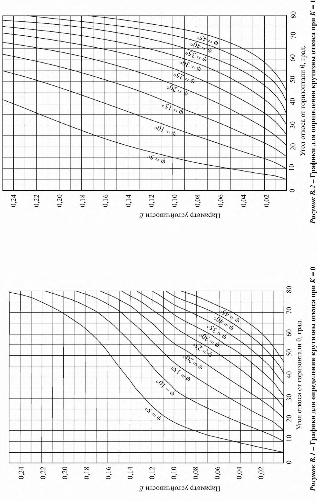
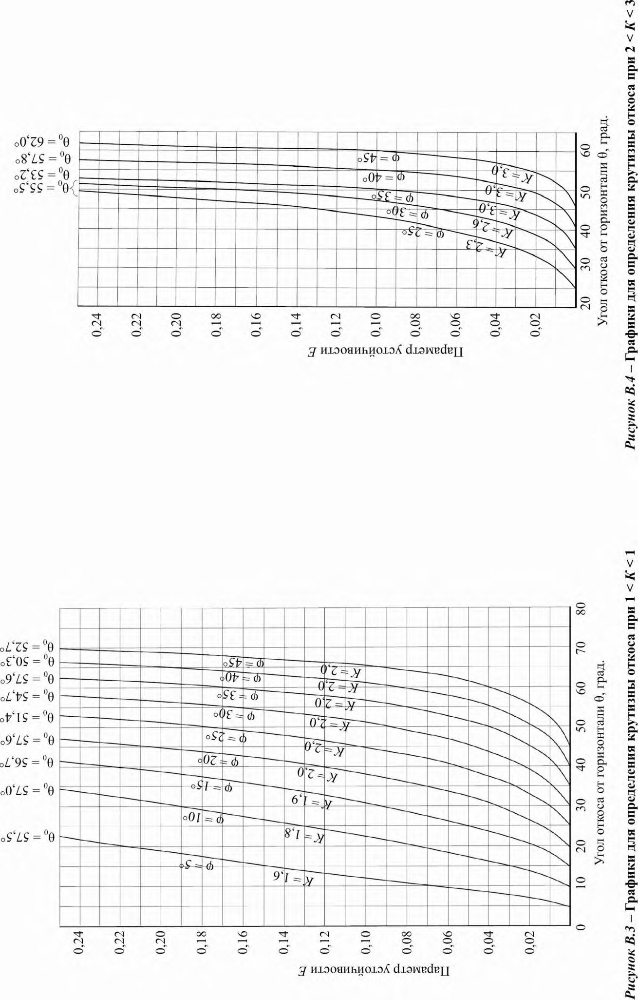
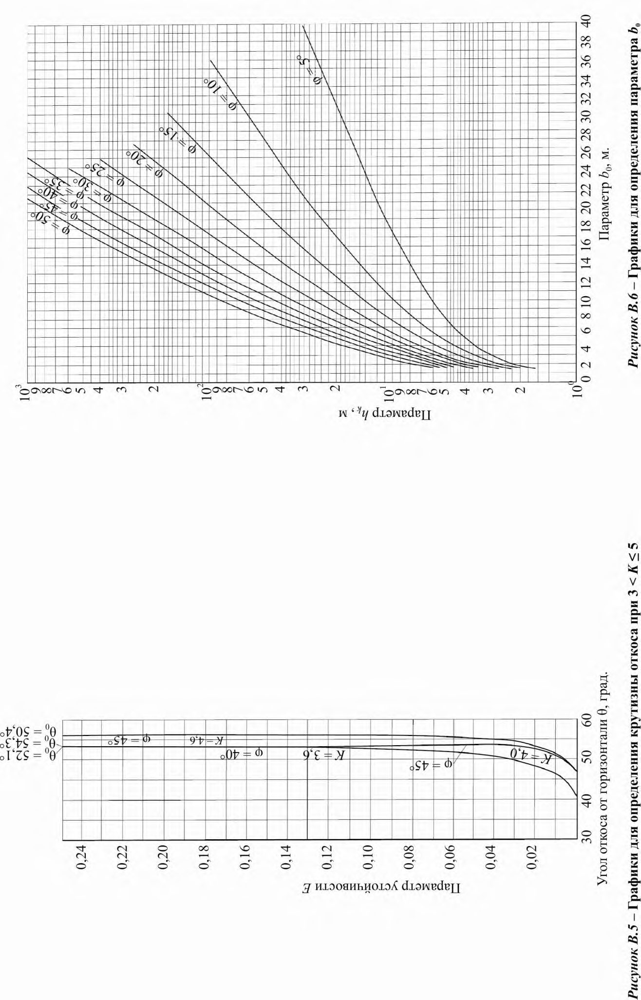
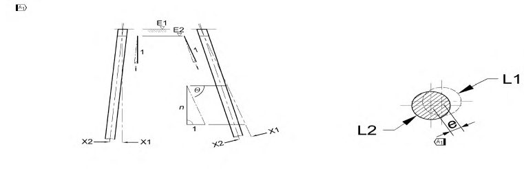
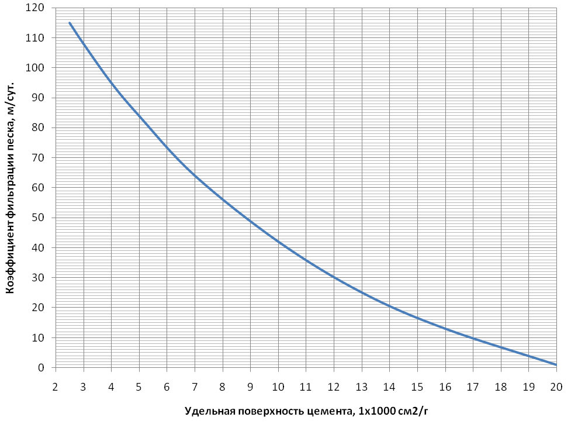
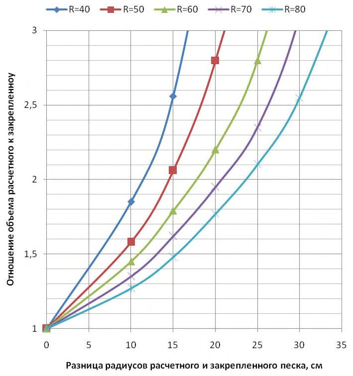
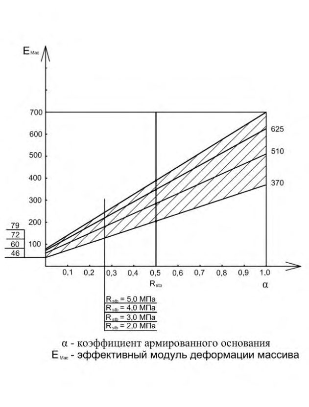
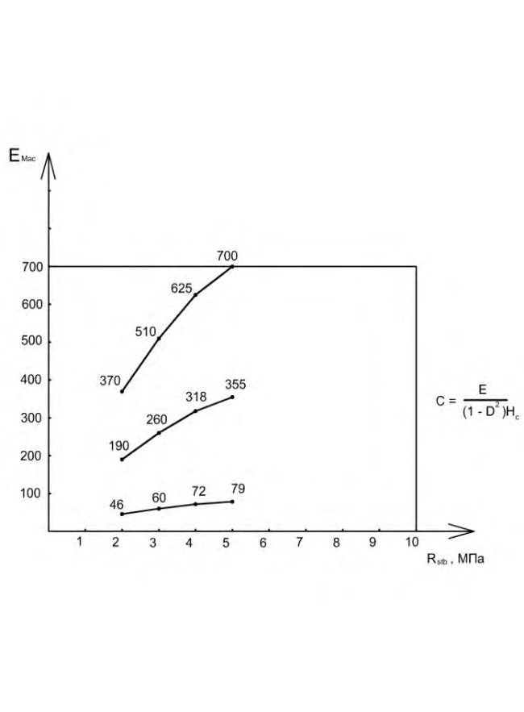
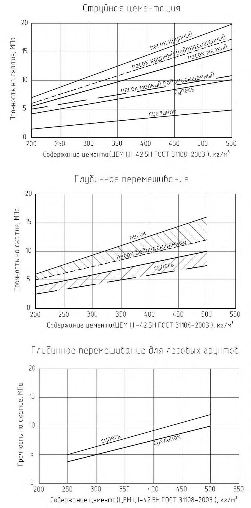

СП 45.13330.2017 «Земляные сооружения, основания и фундаменты»
О документе: разработчики, утверждение, регистрация, ключевые слова
- 1 ИСПОЛНИТЕЛИ - АО «НИЦ «Строительство» - НИИОСП им. Н.М. Герсеванова
- 2 ВНЕСЕН Техническим комитетом по стандартизации ТК 465 «Строительство»
- 3 ПОДГОТОВЛЕН к утверждению Департаментом архитектуры, строительства и градостроительной политики Министерства строительства и жилищно-коммунального хозяйства Российской Федерации (Минстрой России)
- 4 УТВЕРЖДЕН И ВВЕДЕН В ДЕЙСТВИЕ приказом Министерства строительства и жилищно-коммунального хозяйства Российской Федерации от 27 февраля 2017 г. № 125/пр и введен в действие с 28 августа 2017 г.
- 5 ЗАРЕГИСТРИРОВАН Федеральным агентством по техническому регулированию и метрологии (Росстандарт). Пересмотр СП 45.13330.2012 «СНиП 3.02.01-87 Земляные сооружения, основания и фундаменты»
В случае пересмотра (замены) или отмены настоящего свода правил соответствующее уведомление будет опубликовано в установленном порядке. Соответствующая информация, уведомление и тексты размещаются также в информационной системе общего пользования - на официальном сайте разработчика (Минстрой России) в сети Интернет
© Минстрой России, 2017
Настоящий свод правил не может быть полностью или частично воспроизведен, тиражирован и распространен в качестве официального издания на территории Российской Федерации без разрешения Минстроя России
Дата введения 2017-08-28
[ 1] СНиП 3.07.02-87 Гидротехнические морские и речные транспортные сооружения
УДК [69+624.132+624.15] (083.74) ОКС 93.020
Ключевые слова: основания, фундаменты, анкер, буронабивная свая, буроинъекционная свая, нагельное крепление, нагель, армогрунт, закрепление грунта, производство работ
Введение
Настоящий свод правил содержит указания по производству и оценке соответствия земляных работ, устройству оснований и фундаментов при строительстве новых, реконструкции зданий и сооружений. Настоящий свод правил разработан в развитие СП 22.13330 и СП 24.13330.
Пересмотр настоящего свода правил выполнен НИИОСП им. Н.М. Герсеванова институтом АО «НИЦ «Строительство» (канд. техн. наук И.В. Колыбин , канд. техн. наук О.А. Шулятьев - руководители темы; доктора техн. наук: Б.В. Бахолдин, В.И. Крутов, В.И. Шейнин ; канд. техн. наук: A.M. Дзагов, Ф.Ф. Зехниев, М.Н. Ибрагимов, В.К. Когай, В.Н. Корольков, А.Г. Алексеев, С.А. Рытов, А.В. Шапошников, П.И. Ястребов ; инженеры: А.Б. Мещанский, О.А. Мозгачева ).
Earthworks, Grounds and Footings
1Область применения
Настоящий свод правил распространяется на производство и приемку: земляных работ, устройство оснований и фундаментов при строительстве новых, реконструкции зданий и сооружений.
Примечание - Далее вместо термина «здания и сооружения» используется термин «сооружения», в число которых входят также подземные сооружения.
Настоящий свод правил следует соблюдать при устройстве земляных сооружений, оснований и фундаментов, составлении проектов производства работ (ППР) и организации строительства (ПОС).
При производстве земляных работ, устройстве оснований и фундаментов гидротехнических сооружений, сооружений водного транспорта, мелиоративных систем, магистральных трубопроводов, автомобильных и железных дорог и аэродромов, линий связи и электропередачи, а также кабельных линий другого назначения, кроме требований настоящего свода правил, следует выполнять требования соответствующих сводов правил, учитывающих специфику возведения этих сооружений.
2Нормативные ссылки
В настоящем своде правил использованы нормативные ссылки на следующие документы:
ГОСТ 5180-84 Грунты. Методы лабораторного определения физических характеристик
ГОСТ 5686-94 Грунты. Методы полевых испытаний сваями
ГОСТ 5781-82 Сталь горячекатаная для армирования железобетонных конструкций. Технические условия
ГОСТ 10060.0-2012 Бетоны. Методы определения морозостойкости
ГОСТ 10180-2012 Бетоны. Методы определения прочности по контрольным образцам
ГОСТ 10181-2014 Смеси бетонные. Методы испытаний
ГОСТ 10922-2012 Арматурные и закладные изделия, их сварные, вязаные и механические соединения для железобетонных конструкций. Общие технические условия
ГОСТ 12248-2010 Грунты. Методы лабораторного определения характеристик прочности и деформируемости
ГОСТ 12536-2014 Грунты. Методы лабораторного определения гранулометрического (зернового) и микроагрегатного состава
\_\_\_\_\_\_\_\_\_\_\_\_\_\_\_\_\_\_\_\_\_\_\_\_\_\_\_\_\_\_\_\_\_\_\_\_\_\_\_\_\_\_\_\_\_\_\_\_\_\_\_\_\_\_\_\_\_\_\_\_\_\_\_\_\_\_\_\_\_\_\_\_\_\_\_
ГОСТ 12730.5-84 Бетоны. Методы определения водонепроницаемости
СП 45.13330.2017
- ГОСТ 14098-2014 Соединения сварные арматуры и закладных изделий железобетонных конструкций. Типы, конструкции и размеры
- ГОСТ 16504-81 Система государственных испытаний продукции. Испытания и контроль качества продукции. Основные термины и определения
- ГОСТ 18105-86 Бетоны. Правила контроля прочности
- ГОСТ 18321-73 Статистический контроль качества. Методы случайного отбора выборок штучной продукции
- ГОСТ 19912-2012 Грунты. Методы полевых испытаний статическим и динамическим зондированием
- ГОСТ 20276-2012 Грунты. Методы полевого определения характеристик прочности и деформируемости
- ГОСТ 22733-2002 Грунты. Метод лабораторного определения максимальной плотности
- ГОСТ 23061-90 Грунты. Методы радиоизотопных измерений плотности и влажности
- ГОСТ 23732-2011 Вода для бетонов и строительных растворов. Технические условия
- ГОСТ 23858-79 Соединения сварные стыковые и тавровые арматуры железобетонных конструкций. Ультразвуковые методы контроля качества. Правила приемки
- ГОСТ 25100-2011 Грунты. Классификация
- ГОСТ 25584-90 Грунты. Методы лабораторного определения коэффициента фильтрации
- ГОСТ 30416-2012 Грунты. Лабораторные испытания. Общие положения
- ГОСТ 31108-2003 Цементы общестроительные. Технические условия
- ГОСТ 32804-2014 Материалы геосинтетические для фундаментов, опор и земляных работ. Общие технические требования
- СП 16.13330.2011 «СНиП II-23-81* Стальные конструкции» (с изменением № 1)
- СП 22.13330.2011 «СНиП 2.02.01-83* Основания зданий и сооружений»
- СП 24.13330.2011 «СНиП 2.02.03-85 Свайные фундаменты»
- [СП 34.13330.2012 «СНиП 2.05.02-85 * Автомобильные дороги»](file:///C:/Users/cm/AppData/Local/All%20Users/%C3%90%EF%AC%82%C3%90%C2%BE%C3%90%C2%BA%C3%91%E2%80%A6%C3%90%C2%BC%C3%90%C2%B5%C3%90%C2%BD%C3%91%E2%80%A1%C3%91%E2%80%B0/836.htm)
- СП 39.13330.2012 «СНиП 2.06.05-84* Плотины из грунтовых материалов»
- СП 47.13330.2012 «СНиП 11-02-96 Инженерные изыскания для строительства. Основные положения»
- СП 48.13330.2011 «СНиП 12-01-2004 Организация строительства»
- СП 63.13330.2012 «СНиП 52-01-2003. Бетонные и железобетонные конструкции»
- СП 70.13330.2012 «СНиП 3.03.01-87 Несущие и ограждающие конструкции»
- СП 71.13330.2012 «СНиП 3.04.01-87 Изоляционные и отделочные покрытия»
- СП 75.13330.2011 «СНиП 3.05.05-84 Технологическое оборудование и технологические трубопроводы»
- СП 81.13330.2012 «СНиП 3.07.03-85* Мелиоративные системы и сооружения»
- [СП 86.13330.2012 «СНиП III-42-80 * Магистральные трубопроводы»](file:///C:/Users/cm/AppData/Local/All%20Users/%C3%90%EF%AC%82%C3%90%C2%BE%C3%90%C2%BA%C3%91%E2%80%A6%C3%90%C2%BC%C3%90%C2%B5%C3%90%C2%BD%C3%91%E2%80%A1%C3%91%E2%80%B0/875.htm)
- СП 129.13330.2011 «СНиП 3.05.04-85 Наружные сети и сооружения водоснабжения и канализации»
Примечание - При пользовании настоящим сводом правил целесообразно проверить действие ссылочных документов в информационной системе общего пользования - на официальном сайте федерального органа исполнительной власти в сфере стандартизации в сети Интернет или по ежегодному информационному указателю «Национальные стандарты», который опубликован по состоянию на 1 января текущего года, и по выпускам ежемесячного информационного указателя «Национальные стандарты» за текущий год. Если заменен ссылочный документ, на который дана недатированная ссылка, то рекомендуется использовать действующую версию этого документа с учетом всех внесенных в данную версию изменений. Если заменен ссылочный документ, на который дана датированная ссылка, то рекомендуется использовать версию этого документа с указанным выше годом утверждения (принятия). Если после утверждения настоящего свода правил в ссылочный документ, на который дана датированная ссылка, внесено изменение, затрагивающее положение на которое дана ссылка, то это положение рекомендуется применять без учета данного изменения. Если ссылочный документ отменен без замены, то положение, в котором дана ссылка на него, рекомендуется применять в части, не затрагивающей эту ссылку. Сведения о действии сводов правил целесообразно проверить в Федеральном информационном фонде стандартов.
3Термины и определения
В настоящем своде правил применены следующие термины с соответствующими определениями:
- 3.1баретта
- Несущий элемент железобетонного фундамента глубокого заложения, выполняемого способом «стена в грунте».
- 3.2бурение с продувкой
- Способ бурения скважины, при котором разрушенная порода из забоя выносится на поверхность сжатым воздухом.
- 3.3бурение с промывкой
- Способ бурения скважины, при котором разрушенная порода из забоя вымывается на поверхность гидравлическим способом.
- 3.4буросмеситель
- Конструкция бурового инструмента, состоящая из режущих лопастей для разрыхления грунта и его смешивания с цементным раствором, поступающим через отверстия в лопастях.
- 3.5временный анкер
- Грунтовый анкер с расчетным сроком эксплуатации не более двух лет.
- 3.6выход глинистого раствора
- Объем раствора с заданной эффективной вязкостью, получаемый из 1 т глинистого порошка.
- 3.7вертикально перемещаемая труба; ВПТ
- Метод укладки бетона в траншею или скважину с применением бетонолитной вертикально перемещаемой трубы.
- 3.8геомассив
- Создание искусственного основания фундамента путем инъекции твердеющих растворов в режиме гидроразрыва.
- 3.9геосинтетика
- Геотекстильные материалы в виде рулонов, мешков, георешеток, арматурных стержней, изготовляемых на основе стекловолокна, синтетического, базальтового или углеродного волокна.
- 3.10геотехнический барьер
- Конструкция из ряда инъекторов, расположенная между объектом геотехнических работ и существующими защищаемыми объектами в вертикальной, горизонтальной или наклонной плоскостях, для выполнения работ по компенсационному нагнетанию.
- 3.11глубина скважины
- Проекция длины на вертикальную ось.
- 3.12грунтовый анкер
- Геотехническая конструкция, предназначенная для передачи осевых выдергивающих нагрузок от закрепляемой конструкции на несущие слои грунта только в пределах корневой части своей длины и состоящая из трех частей: оголовка, тяги анкера и корня.
- 3.13гидроразрыв
- Образование трещин в массиве грунта при инъекции растворов.
- 3.14грунтовые нагели
- Геотехническая конструкция для обеспечения устойчивости откосов и склонов, устраиваемая горизонтально или наклонно без дополнительного натяжения.
- 3.15длина скважины
- Расстояние от устья до забоя по оси скважины.
- 3.16забой скважины
- Низ (дно) скважины.
- 3.17закрепление грунта
- Улучшение механических и физических свойств грунта путем введения в грунт твердеющих растворов в режиме пропитки или перемешивания.
- 3.18заполнительная цементация
- Подготовительный этап к компенсационному нагнетанию, заключающийся в заполнении пустот и пор грунта твердеющим раствором.
- 3.19захватка траншеи
- Фрагмент траншеи, разрабатываемый для последующего бетонирования или заполнения сборными элементами с омоноличиванием.
- 3.20зона инъекции
- Ограниченный интервал в скважине, через который производится нагнетание раствора (воды) в грунт.
- 3.21извлекаемый анкер
- Грунтовый анкер (временный), конструкция которого позволяет извлечь его тягу полностью или частично.
- 3.22инъектор
- Труба с отверстиями для выполнения инъекции твердеющего раствора в грунт или строительную конструкцию.
- 3.23кондуктор
- Обсадная труба, служащая для крепления верхнего интервала скважины с целью перекрытия слоя грунта, склонного к обрушению или поглощению промывочной жидкости, а также для задания направления бурения.
- 3.24контроль ультразвуковым методом (ультрасоник)
- Ультразвуковой метод контроля качества изготовления (сплошности) буронабивных свай, баретт или иных фундаментных конструкций в условиях строительной площадки.
- 3.25корень анкера
- Часть анкера, передающая нагрузку от тяги анкера на грунт.
- 3.26кольматация, тампонаж
- Заполнение пор и трещин в грунте твердыми частицами нагнетаемого раствора, препятствующими фильтрации.
- 3.27компенсационное нагнетание
- Метод сохранения или восстановления начального напряженно-деформированного состояния (НДС) массива грунта при ведении вблизи геотехнических работ (проходке тоннелей, устройстве котлованов и других заглубленных сооружений) путем нагнетания в грунт твердеющих растворов через скважины (инъекторы) по гидроразрывной технологии.
- 3.28манжетная инъекция
- Способ закачки крепящего раствора в грунт через скважины, оборудованные манжетными колоннами, позволяющие неоднократно и в любой последовательности обрабатывать зоны (интервалы) в массиве грунта.
- 3.29манжетная колонна
- Труба с отверстиями, расположенными через 0,33 или 0,5 м, защищенными обратными клапанами для выполнения инъекции твердеющего раствора в грунт.
- 3.30монитор
- Устройство для преобразования потенциальной энергии цементного раствора, нагнетаемого под давлением, в кинетическую энергию струи для разрушения грунта при струйной цементации грунтов.
- 3.31НДС массива грунта
- Напряженно-деформированное состояние массива грунта.
- 3.32несущая стена в грунте
- Стена в грунте, предназначенная для использования в качестве несущего элемента постоянной конструкции.
- 3.33отвалы
- Искусственно созданные массивы грунта на поверхности, устраиваемые при перемещении грунта грузовой или землеройной техникой, а также гидронамывом без дополнительного выравнивания и уплотнения.
- 3.34отказ при проведении цементации
- Снижение расхода раствора, поглощаемого грунтом, до минимально допустимой величины при заданном давлении (давлении отказа).
- 3.35оголовок анкера
- Составной элемент анкера, передающий нагрузку от закрепляемого элемента сооружения или грунта на анкерную тягу.
- 3.36ограждающая стена в грунте
- Стена в грунте, предназначенная для использования только в качестве временного ограждения строительного котлована (выемки).
- 3.37пазуха
- Полость между грунтом и поверхностью или внешними поверхностями смежных подземных конструкций (например, полость между ограждением котлована и возводимым фундаментом).
- 3.38проверка сплошности
- Метод контроля качества (сплошности) буронабивных свай, баретт или иных фундаментных конструкций в условиях строительной площадки.
- 3.39постоянный анкер
- Грунтовый анкер с расчетным сроком работы, равным сроку эксплуатации удерживаемой конструкции.
- 3.40стена в грунте
- Искусственно выполненная противофильтрационная или несущая конструкция из бетона или железобетона в грунте.
- 3.41стенка (ствол) скважины
- Боковая часть скважины.
- 3.42суспензия (водная)
- Смесь из воды и твердых частиц (цемент, глина, золауноса, молотый песок и другие вещества) с преобладающим размером 0,1 мк.
- 3.43тяга анкера
- Часть анкера, передающая нагрузку от оголовка на корень.
- 3.44траншейная стена в грунте
- Подземная стена, сооружаемая в траншее под тиксотропным глинистым (или иным) раствором, с последующим заполнением траншеи монолитным железобетоном или сборными элементами.
- 3.45тампонажный раствор
- Твердеющий водный раствор на основе вяжущего, применяемый для закрепления несвязных грунтов, уплотнения пустот и трещиноватых пород.
- 3.46усиление грунта
- Улучшение механических свойств грунта путем закрепления, уплотнения, армирования или изменения НДС массива грунта.
- 3.47устье скважины
- Верхняя часть скважины.
- 3.48цементация
- Изменение физико-механических свойств грунтов с помощью цементных растворов, нагнетаемых в грунт по технологиям: струйная или буросмесительная инъекция (глубинное перемешивание).
- 3.49разрядно-импульсная технология (электроразрядная технология)
- Технология устройства геотехнических конструкций (буроинъекционных и буронабивных свай, грунтовых анкеров, нагелей), основанная на обработке боковой поверхности и пяты скважины ударными волнами, возникающими при импульсных высоковольтных разрядах в подвижной бетонной смеси.
- 3.50штабели
- Правильно уложенные и послойно уплотненные массивы грунта, служащие основанием железных и автомобильных дорог, ограждений плотин и гидросооружений, строительных материалов и грунтов и т. д.
4Общие положения
- должна быть осуществлена разработка ППР и ПОС сертифицированными
СП 45.13330.2017 организациями, имеющими соответствующие допуски для выполнения этих работ, а также специалистами, обладающими соответствующей квалификацией и практическим опытом;
- должны быть обеспечены координация и связь между специалистами по инженерным изысканиям, проектированию и строительству;
- должен быть обеспечен требуемый проектом контроль качества при производстве строительных изделий и выполнении работ на строительной площадке;
- строительные работы должны выполняться квалифицированным и аттестованным опытным персоналом;
- техническое обслуживание сооружения и связанных с ним инженерных систем должно обеспечивать его безопасность и рабочее состояние на весь срок эксплуатации;
- сооружение должно эксплуатироваться по его назначению в соответствии с проектом.
- а) подготовительный;
- б) опытно-производственный (при необходимости);
- в) производство основных работ;
- г) контроль качества;
- д) приемка работ.
5Водопонижение, организация поверхностного стока, водоотвод и дренаж
При выборе способа водопонижения следует учитывать природную обстановку, размеры осушаемой зоны, способы производства строительных работ в котловане и вблизи него, их продолжительность, влияние на близлежащую застройку и инженерные коммуникации и другие местные условия строительства.
Открытые гравитационные водозаборные скважины могут быть эффективно применены в проницаемых грунтах с коэффициентом фильтрации не менее 2 м/сут при требуемой глубине водопонижения более 4 м. В основном такие скважины оборудованы погружными электрическими насосами, работающими под заливом.
В малопроницаемых грунтах (заглинизированные или пылеватые пески) с коэффициентом фильтрации от 0,2 до 2 м/сут применяют вакуумные водозаборные скважины, в полости которых при помощи насосных агрегатов иглофильтровых установок вакуумного водопонижения развивается вакуум, что обеспечивает увеличение водозахватной способности скважин. Обычно один такой агрегат может обслуживать не более шести скважин.
- на иглофильтровый способ гравитационного водопонижения, применяемый в проницаемых грунтах с коэффициентом фильтрации от 2 до 50 м/сут, в неслоистых грунтах при понижении одной ступенью от 4 до 5 м (большая величина в менее проницаемых грунтах);
- иглофильтровый способ вакуумного водопонижения, применяемый в малопроницаемых грунтах с коэффициентом фильтрации от 2 до 0,2 м/сут при понижении одной ступенью от 5 до 7 м; при необходимости, способ при меньшей
- эффективности может быть применен в грунтах с коэффициентом фильтрации не более 5 м/сут; -иглофильтровый эжекторный способ водопонижения, применяемый в малопроницаемых грунтах с коэффициентом фильтрации от 2 до 0,2 м/сут при глубине понижения уровня подземных вод от 10 до 12 м, а при определенном обосновании - не более 20 м. 5.5 Дренажи строительного назначения могут быть линейными или пластовыми с включением в конструкцию последних дренажей линейного типа. Линейные дренажи осуществляют осушение грунтов путем отбора подземных вод при помощи перфорированных труб с песчано-гравийной (щебеночной) обсыпкой с отводом отобранных вод в зумпфы, оборудованные погружными насосами. Эффективная глубина осушения линейными дренажами - от 4 до 5 м. Линейные дренажи можно устраивать внутри котлована, в основании откосов земляных выработок, на территориях, окружающих строительный объект. Пластовые дренажи предусмотрены для отбора подземных вод в период строительства со всей площади котлована. Данный вид дренажа осуществляют при отборе подземных вод в грунтах с коэффициентом фильтрации менее 2 м/сут, а также в случаях обводненного трещиноватого скального основания. При отборе подземных вод из пылеватых или глинистых грунтов конструкция пластового дренажа предусматривает два слоя: нижний - из крупнозернистого песка толщиной от 150 до 200 мм и верхний - из гравия или щебня толщиной от 200 до 250 мм. Если в будущем предполагается эксплуатация пластового дренажа как постоянного сооружения, то толщина его слоев должна быть увеличена. При отборе подземных вод из скальных грунтов, в трещинах которых отсутствует песчано-глинистый заполнитель, пластовый дренаж может состоять из одного гравийного (щебеночного) слоя. Отвод подземных вод, отобранных пластовым дренажом, осуществляют в систему линейного дренажа, песчано-гравийная обсыпка которого сопрягается с телом пластового дренажа. 5.6 Открытый водоотлив применяют для временного осушения поверхностного слоя грунта в котлованах и траншеях. Неглубокие дренажные канавы могут быть как открытыми, так и заполненными фильтрующим материалом (щебень, гравий). Каптированные канавками подземные воды отводят в зумпфы, оборудованные погружными насосами. 5.7 До начала работ по водопонижению необходимо обследовать техническое состояние зданий и сооружений, находящихся в зоне влияния работ, а также уточнить расположение существующих подземных коммуникаций, оценить влияние на них понижения уровня подземных вод (УПВ) и при необходимости предусмотреть защитные мероприятия. 5.8 Водопонизительные скважины, оборудованные погружными насосами, являются наиболее распространенными типами систем водопонижения и могут применяться в самых разнообразных гидрогеологических условиях. Глубины скважин определяются в зависимости от глубины залегания и мощности водоносного горизонта, фильтрационных характеристик пород, необходимой величины понижения уровня подземных вод. 5.9 Бурение водопонизительных скважин в зависимости от гидрогеологических условий может быть осуществлено с прямой или обратной промывкой или ударно-
- канатным способом. Бурение скважин с глинистой промывкой не допускается.
- а) перед установкой фильтровой колонны при ударно-канатном способе бурения должен быть тщательно очищен забой скважины путем налива в нее чистой воды и желонирования до полного осветления, при вращательном бурении с прямой и обратной промывкой скважину прокачивают или промывают с помощью бурового насоса;
- б) при установке фильтра необходимо убедиться в прочности и плотности соединений опускаемых его звеньев, в наличии на колонне направляющих фонарей и заглушки отстойника колонны;
- в) при бурении скважин необходимо отбирать пробы для уточнения границ водоносных слоев и гранулометрического состава грунтов.
При отборе воды из трещиноватых грунтов (например, известняков) обсыпку можно не устраивать.
СП 45.13330.2017
- оборудовать устройствами автоматического отключения любого агрегата при понижении уровня воды в водоприемнике ниже допустимого.
- не более 1 года - 10 %;
- не более 2 лет - 15 %;
- не более 3 лет - 20 %;
- более 3 лет - 25 %.
- В процессе гидравлического погружения иглофильтров необходимо контролировать наличие постоянного излива из скважин, а также исключить установку фильтрового звена иглофильтра в малопроницаемый слой (прослоек) грунта. При отсутствии излива или резком изменении расхода поступающей из скважины воды следует проверить наливом пропускную способность фильтра, при необходимости, извлечь иглофильтр и установить, свободно ли выходное отверстие фильтра, не произошла ли его кольматация. Возможна также ситуация, когда фильтр установлен в сильно проницаемую прослойку грунта, поглощающую весь расход поступающей в иглофильтр воды. В этом случае при погружении иглофильтра следует организовать совместную подачу воды и воздуха.
В подземных водах, каптируемых иглофильтровыми установками, не должны быть обнаружены частицы грунта, а также исключено пескование.
СП 45.13330.2017
- мероприятия: рыхление щебеночного слоя на откосах в местах выхода подземных вод, пригрузка слоем щебня, включение в работу разгрузочных скважин и т. п.
- а) с верховой стороны выемок для перехвата потока поверхностных вод использовать кавальеры и резервы, устраиваемые сплошным контуром, а также постоянные водосборные и водоотводящие сооружения или временные канавы и обвалования; канавы, в случае необходимости, могут иметь защитные крепления от размыва или фильтрационных утечек;
- б) кавальеры с низовой стороны выемок отсыпать с разрывом, преимущественно в пониженных местах, но не реже чем через каждые 50 м; ширина разрывов по низу должна быть не менее 3 м;
- в) грунт из нагорных и водоотводящих канав, устраиваемых на косогорах, укладывать в виде призмы вдоль канав с их низовой стороны;
- г) при расположении нагорных и водоотводящих канав в непосредственной близости от линейных выемок между выемкой и канавой выполнять банкет с уклоном его поверхности 0,02-0,04 в сторону нагорной канавы.
- а) акт пуска в эксплуатацию водопонизительной системы;
- б) исполнительную схему расположения скважин;
- в) исполнительные схемы конструкций скважин с указанием фактических геологических колонок;
- г) акт на ликвидацию скважин по окончании работ;
- д) сертификаты на используемые материалы и изделия.
6Вертикальная планировка, разработка выемок, подготовка территории под застройку гидронамывом
6.1Вертикальная планировка, разработка выемок
- под ленточные фундаменты и другие подземные конструкции - должна включать ширину конструкции с учетом опалубки, толщины изоляции и креплений с добавлением 0,2 м с каждой стороны;
- трубопроводы, кроме магистральных, с откосами 1:0,5 и круче - по таблице 6.1;
- трубопроводы, кроме магистральных, с откосами положе 1:0,5 - не менее наружного диаметра трубы с добавлением 0,5 м при укладке отдельными трубами и 0,3 м при укладке плетями;
- трубопроводы на участках кривых вставок - не менее двукратной ширины траншеи на прямолинейных участках;
- устройстве искусственных оснований под трубопроводы, кроме грунтовых подсыпок, коллекторы и подземные каналы - не менее ширины основания с добавлением 0,2 м с каждой стороны;
- разрабатываемых одноковшовыми экскаваторами - не менее ширины режущей кромки ковша с добавлением 0,15 м в песках и супесях, 0,1 м в глинистых грунтах, 0,4 м в разрыхленных скальных и мерзлых грунтах.
СП 45.13330.2017
| Ширина траншей, м, без учета креплений при стыковом соединении трубопроводов | Ширина траншей, м, без учета креплений при стыковом соединении трубопроводов | Ширина траншей, м, без учета креплений при стыковом соединении трубопроводов | |
|---|---|---|---|
| Способ укладки трубопроводов | сварном | раструбном | муфтовом, фланцевом, фальцевом для всех труб и раструбном для керамических труб |
| 1 Плетями или отдельными секциями при наружном диаметре труб D , м: | |||
| до 0,7 включ. | D + 0,3, но не менее 0,7 | - | - |
| св. 0,7 | 1,5 D | - | - |
| 2 То же, на участках, разрабатываемых траншейными экскаваторами под трубопроводы диаметром не более 219 мм, укладываемые без спуска людей в траншеи (узкотраншейный метод) | D + 0,2 | - | - |
| 3 То же, на участках трубопровода, пригружаемого железобетонными пригрузами или анкерными устройствами | 2,2 D | - | - |
| 4 То же, на участках трубопровода, пригружаемого с помощью нетканых синтетических материалов | 1,5 D | - | - |
| 5 Отдельными трубами при наружном диаметре труб D , м, включ.: | |||
| до 0,5 | D + 0,5 | D + 0,6 | D + 0,8 |
| от 0,5 до 1,6 | D + 0,8 | D + 1,0 | D + 1,2 |
| » 1,6» 3,5 | D + 1,4 | D + 1,4 | D + 1,4 |
Примечания
1 Ширина траншей для трубопроводов диаметром свыше 3,5 м устанавливается в проекте исходя из технологии устройства основания, монтажа, изоляции и заделки стыков.
2 При параллельной укладке нескольких трубопроводов в одной траншее расстояния от крайних труб до стенок траншей определяются требованиями настоящей таблицы, а расстояния между трубами устанавливаются проектом.
Таблица 6.2
| Условный | Размер приямков, м | Размер приямков, м | Размер приямков, м | |||
|---|---|---|---|---|---|---|
| Труба | Стыковое соединение | Уплотнитель | проход трубопровода, мм | Длина | Ширина | Глубина |
| Стальные | Сварное | - | Для всех диаметров | 1,0 | D* + 1,2 | 0,7 |
| Чугунные | Раструбное типа САМ Чугунная фланцевая | Резиновая манжетка Пеньковая прядь Герметики | До 300 включ. До 300 включ. Св. 300 До 300 включ. Св. 300 | 0,5 0,55 1,0 0,5 1,0 | D + 0,2 D + 0,5 D + 0,7 D + 0,5 D + 0,7 | 0,1 0,3 0,4 0,2 0,3 |
| Хризотилцементные | Муфта муфта Любое для безнапорных | Резиновое кольцо фигурного сечения Резиновое кольцо круглого сечения и типа КЧМ Любой | До 300 включ. Св. 300 До 300 включ. Св. 300 До 400 включ. | 0,7 0,7 0,7 0,9 0,7 | D + 0,2 D + 0,5 D + 0,5 D + 0,7 D + 0,5 | 0,2 0,2 0,3 0,3 0,2 |
| Бетонные железобетонные | труб и Раструбное, муфтовое и с бетонным пояском Все | Резиновое кольцо круглого сечения | До 600 включ. От 600 до 3500 | 0,5 1,0 | D + 0,5 D + 0,5 | 0,2 0,3 |
| Полимерные | виды стыковых соединений | - | Для всех диаметров | 0,6 | D + 0,5 | 0,2 |
| Керамические | Раструбное | Асфальтобитум, герметик и др. | То же | 0,5 | D + 0,6 | 0,3 |
| Техническое требование | Предельное отклонение | Контроль (метод и объем) |
|---|---|---|
| 1 Отклонения отметок дна выемок от проектных (кроме выемок в валунных, скальных и многолетнемерзлых грунтах) при черновой разработке: а) одноковшовыми экскаваторами, оснащенными ковшами с зубьями | Для экскаваторов с механическим приводом по видам рабочего | Измерительный, точки измерений устанавливаются случайным образом; число измерений на принимаемый участок должно быть не менее: |
| б) одноковшовыми экскаваторами, оснащенными планировочными ковшами, зачистным оборудованием и другим | драглайн + 25 см прямого копания +10 см обратная лопата +15 см Для экскаваторов с гидравлическим приводом +10 см + 5 см | 20 15 10 10 5 |
| специальным оборудованием для планировочных работ, экскаваторами-планировщиками в) бульдозерами г) траншейными экскаваторами д) скреперами 2 Отклонения отметок дна от проектных при черновой разработке в скальных многолетнемерзлых грунтах, кроме | +10 см +10 см +10 см выемок и | 15 10 10 Измерительный, при числе измерений на сдаваемый участок не менее 20 в наиболее высоких местах, установленных |
| а) недоборы б) переборы 3 То же, планировочных выемок: а) недоборы б) переборы 4 То же, без рыхления грунтов: а) недоборы б) переборы 5 Отклонения отметок дна выемок в местах устройства фундаментов и укладки конструкций при окончательной разработке или после доработки недоборов и восполнения переборов | Не допускаются По таблице 6.4 10 см 20 см валунных Не допускаются Не более величины максимального диаметра валунов (глыб), содержащихся в грунте в количестве более 15 % по объему, но не более 0,4 м | То же » |
| ± 5 см | Измерительный, по углам и центру котлована, на пересечениях осей здания, в местах изменения отметок, поворотов и примыканий траншей, расположения колодцев, но не реже чем через 50 м и не менее 10 измерений на принимаемый участок |
Окончание таблицы 6.3
| 6 Вид и характеристики вскрытого грунта естественных оснований под фундаменты и земляные сооружения Должны соответствовать Не допускается размягчение, промерзание |
При высоте откосов более 5 м в однородных грунтах их крутизну допускается принимать по графикам приложения В. Крутизна откосов должна обеспечивать безопасность труда в строительстве. Крутизна откосов выемок, разрабатываемых в скальных грунтах с применением взрывных работ, должна быть установлена в проекте.
- 0,3 м - для крупных, средней крупности и мелких песков;
- 0,5 м - для пылеватых песков и супесей;
- 1,0 м- для суглинков и глин.
В случае обнаружения не указанных в проекте коммуникаций, подземных сооружений или обозначающих их знаков земляные работы должны быть приостановлены, на место работы вызваны представители заказчика, проектировщика и организаций, эксплуатирующих обнаруженные коммуникации, и приняты меры по предохранению обнаруженных подземных устройств от повреждения.
- для подземных и воздушных линий связи; полиэтиленовых, стальных сварных, железобетонных, керамических, чугунных и хризотилцементных трубопроводов, каналов и коллекторов, диаметром не более 1-0,5 м от боковой поверхности и 0,5 м над верхом коммуникаций с их предварительным обнаружением с точностью не более 0,25 м;
- силовых кабелей, магистральных трубопроводов и прочих подземных коммуникаций, а также для валунных и глыбовых грунтов независимо от вида коммуникаций - 2 м от боковой поверхности и 1 м над верхом коммуникаций с их предварительным обнаружением с точностью не более 0,5 м.
Минимальные расстояния до коммуникаций, для которых существуют правила охраны, должны назначаться с учетом требований этих правил.
Оставшийся грунт следует разрабатывать с применением ручных безударных инструментов или специальных средств механизации.
- при бетонном или асфальтовом покрытии по бетонному основанию - на 10 см более ширины траншеи по верху с каждой стороны с учетом креплений;
- других конструкциях дорожных покрытий - на 25 см.
При дорожных покрытиях из сборных железобетонных плит ширина вскрытия должна быть кратной размеру плиты.
- 2/3 ширины ковша - для экскаваторов, оборудованных обратной лопатой или устройствами прямого копания;
- 1/2 ширины ковша - для экскаваторов, оборудованных драглайном;
- 2/3 наибольшей конструктивной глубины копания - для скреперов;
- 1/2 высоты отвала - для бульдозеров и грейдеров;
- 1/2 ширины кузова и по весу половину паспортной грузоподъемности - для транспортных средств;
- 3/4 меньшей стороны приемного отверстия - для дробилки;
- 30 см - при разработке вручную с удалением подъемными кранами.
При грузоподъемности самосвалов более 12 т, а также при использовании других транспортных средств ширина проезжей части определена ПОС.
СП 45.13330.2017
| Допустимая величина переборов, см, при рыхлении способом | Допустимая величина переборов, см, при рыхлении способом | Допустимая величина переборов, см, при рыхлении способом | |
|---|---|---|---|
| Разновидность грунта в соответствии с ГОСТ 25100 и | взрывным | взрывным | |
| модулем трещиноватости | методом скважинных зарядов | методом шпуровых зарядов | механическим |
| Прочные и очень прочные скальные грунты при модуле трещиноватости менее 1,0 | 20 | 10 | 5 |
| Прочие скальные грунты, многолетнемерзлые грунты | 40 | 20 | 10 |
Примечание - Модуль трещиноватости - среднее число трещин на 1 м линии измерения, расположенной на поверхности забоя перпендикулярно главной или главным системам трещин.
6.2Гидромеханизированные работы по устройству земляных сооружений, штабелей и отвалов, подготовка территории под застройку гидронамывом
6.2.1 Разработка грунта способом гидромеханизации
- 6.2.1.1 Правила настоящего раздела распространяются на производство и приемку работ, выполняемых способом гидромеханизации при намыве сооружений, а также на добычных и вскрышных работах в строительных карьерах.
- 6.2.1.2 Инженерно-геологические изыскания грунтов, подлежащих гидромеханизированной разработке, должны отвечать специфическим требованиям СП 47.13330.
- 6.2.1.3 При содержании в грунте более 0,5 % объема негабаритных для грунтовых насосов включений (валуны, камни, топляки) запрещается применять землесосные снаряды и установки с грунтовыми насосами без устройств для предварительного отбора таких включений. Негабаритными следует считать включения со средним поперечным размером более 0,8 минимального проходного сечения насоса.
- 6.2.1.4 При прокладке напорных пульпопроводов радиусы поворота должны быть не менее 3-6 диаметров труб. На поворотах с углом более 30° пульпопроводы и водоводы должны быть закреплены. Все напорные пульпопроводы должны быть испытаны максимальным рабочим давлением. Правильность укладки и надежность в работе трубопроводов оформляют актом, составляемым по результатам их эксплуатации в течение 24 ч рабочего времени.
- 6.2.1.5 Параметры разработки выемок и карьеров плавучими землесосными снарядами и предельные отклонения от отметок и габаритов, установленных в ППР, следует принимать по таблице 6.5.
Таблица 6.5
| Производительность землесосного снаряда по воде, м³ /ч | Наименьшая глубина разработки ниже уровня воды, м | Наименьшая толщина разрабатываемого под водой слоя, м | Наименьшая толщина | Наименьшая толщина | Предельные отклонения, м | Предельные отклонения, м | Предельные отклонения, м | Предельный недобор до коренных (подстилающих) пород в карьере, м |
|---|---|---|---|---|---|---|---|---|
| Производительность землесосного снаряда по воде, м³ /ч | Наименьшая глубина разработки ниже уровня воды, м | Наименьшая толщина разрабатываемого под водой слоя, м | защитного грунта, песчаного | слоя м глинистого | по длине и ширине выемок; по дну и откосам (на каждой стороне выемки) | от проектной отметки защитного слоя | Переработка дна каналов (в среднем) | Предельный недобор до коренных (подстилающих) пород в карьере, м |
| Св. 7500 4001-7500 2501-4000 1001-2500 801-1000 400-800 Менее 400 | 6 4,5 3,5 2 * 1,6 1,5 1,5 | 5 4 3 2 1,5 1,3 1,0 | 2 1,5 1,25 1,0 0,7 0,6 0,5 | 1,1 0,9 0,7 0,5 0,5 0,4 0,3 | ±2 ±1,8 ±1,5 ±1,0 ±0,8 ±0,7 ±0,6 | ±0,9 ±0,7 ±0,5 ±0,3 ±0,3 ±0,2 ±0,2 | 0,9 0,6 0,5 0,3 0,3 0,2 0,2 | 1,5 1,0 0,7 0,6 0,6 0,5 0,5 |
Примечания
- 1 Для землесосных снарядов с удлиненным грунтозаборным устройством и с погружным грунтовым насосом при свободном всасывании предельные отклонения устанавливают в ПОС.
- 2 При наличии в грунте крупных включений предельное переуглубление увеличивается при размере включений не более 60 см - на 0,2 м, не более 80 см - на 0,4 м; при более крупных включениях величину переуглубления устанавливают в ПОС.
- 3 Переборы по откосам и дну каналов, подлежащих креплению с откачкой воды, не допускаются. При разработке подводных выемок, расчисток, неукрепляемых каналов и каналов, укрепляемых каменной наброской в воду, недоборы по дну не допускаются.
- 4 При сложном рельефе подстилающих пород в карьерах величина предельного недобора должна быть уточнена в ПОС и ППР.
6.2.1.6 При разработке выемок средствами гидромеханизации состав контролируемых показателей, объем и методы контроля должны соответствовать указаниям таблицы 6.6.
Таблица 6.6
| Техническое требование | Предельное отклонение | Контроль (метод и объем) |
|---|---|---|
| 1 Разработка всех видов профильных выемок землесосными снарядами: | Отметки разработки и конфигурация профиля согласно принятым в ППР | Измерительный по поперечникам через 50 м на прямолинейных и через 25 м на криволинейных участках выемок (если нет других указаний в ППР). Проводится до переключения землесосного снаряда на новое ответвление магистрального пульпопровода, но не реже одного раза в месяц |
| а) котлованы под закладку фундаментов и другие выемки с оставлением защитного слоя | Дополнительно к указанным в 3.1: толщина защитного слоя по таблице 6.5, если нет других указаний в ППР | То же, один раз в 7 дней |
| б) судоходные каналы, другие судоходные сооружения и расчистки | То же, отсутствие недоборов по дну и обеспечение габаритов судового хода в соответствии с ППР | То же, по установленным контрольным поперечникам с промером глубин и составлением плана глубин с нанесением на него исполнительных отметок. При необходимости с участием заказчика следует выполнять водолазное обследование дна, траление жестким тралом, съемку рельефа дна с применением эхолота. При промерах волнение не должно превышать 2 балла, при тралении - |
| 2 Разработка профильных выемок гидромониторно- землесосными установками | Проектные границы и отметки дна выемки, окончательный уклон дна выемки Переборы и недоборы по дну в пределах установленных в | 1 балл То же, по указаниям в ППР (при отсутствии указаний - геодезическая съемка через 25-50 м). Регистрационный с составлением исполнительной схемы, продольных и поперечных профилей выемки Измерительный, один раз в 15 дней |
| 3 Разработка карьеров средствами гидромеханизации | ППР отклонений Очередность разработки выделенных участков (блоков) в соответствии с ППР Полнота выемки полезного слоя с учетом указаний в таблице 6.5 Недопущение разработки зон с некачественным грунтом | Технический осмотр не реже одного paза в 15 дней То же » |
Примечания
- 1 При определении объема выемки места замера на контрольных поперечниках следует принимать в характерных точках перелома профиля, в подводной части судоходных каналов - не реже чем через 10 м, для других сооружений - согласно указаниям ППР.
- 2 Точность замера глубин в подводной части неукрепляемых выемок ± 10 см при глубине не более 6 м и ± 20 см при большей глубине. Для подводных выемок, дно и откосы которых крепятся, точность замеров следует устанавливать в ППР и технических условиях на устройство креплений.
- 3 На объектах с интенсивной заносимостью исходные отметки дна следует определять не ранее чем за 10 сут до начала работ, а исполнительные - не позднее чем через 10 сут после их окончания.
6.2.2 Намыв земляных сооружений, штабелей и отвалов
- 6.2.2.1 Технология намыва земляных сооружений, штабелей грунта должна соответствовать специальным указаниям, изложенным в ПОС и ППР. Намыв напорных гидротехнических сооружений без представления технических условий на их возведение не допускается.
- 6.2.2.2 Крутизну принудительно формируемых откосов намывных сооружений следует назначать с учетом водоотдачи и фильтрации в строительный период. Для крупных песков откос должен быть не круче 1:2, для средней крупности - 1:2,5, для мелких песков - 1:3 и особо мелких пылеватых - 1:4.
- 6.2.2.3 Намыв со свободным растеканием пульпы (свободным откосом) следует применять при возведении земляных сооружений с распластанным или волноустойчивым профилем; крутизну свободного откоса следует принимать по СП 39.13330.
- 6.2.2.4 Превышение грунта над водной поверхностью при намыве подводных частей сооружений и на заболоченных или затопленных территориях в створе устройства обвалования и по оси прокладки пульпопроводов, из которых ведется намыв, должно быть не менее, м:
- для гравийных грунтов .............................................0,5;
- песчано-гравийных .............................................0,7;
- песков крупных и средней крупности ..............1,0;
- более мелких песков ...........................................1,5.
Указанные значения могут быть повышены по условиям безопасного производства работ. При устройстве насыпей на торфах, заторфованных грунтах и илах и при намыве в текущую воду превышение должно быть не менее установленного в проекте сооружения и ПОС.
- 6.2.2.5 Обвалование в процессе возведения сооружения (попутное обвалование) следует выполнять из намытого или привозного грунта, если последнее предусмотрено ПОС. Использование для дамб обвалования илистого или промороженного грунта, а также грунта, содержащего более 5 % растворимых солей, не допускается. Дамбы из привозного грунта должны отсыпаться послойно с уплотнением до значений, принятых для намывного грунта.
- 6.2.2.6 Дренажные устройства, закладываемые внутри земляных намывных сооружений, перед замывом следует защищать слоем укладываемого насухо песчаного грунта толщиной 1-2 м или другими способами, предусмотренными в ПОС. Грунт засыпки должен иметь одинаковый гранулометрический состав с намываемым или быть более крупнозернистым.
- 6.2.2.7 После окончания намыва верхнюю часть водосбросных колодцев и стоек эстакад следует откапывать и срезать на глубине не менее 0,5 м от проектной отметки гребня намываемого сооружения.
- 6.2.2.8 Объем разрабатываемого грунта для намыва сооружений (промежуточных штабелей) следует устанавливать с учетом запаса на восполнение потерь согласно таблицам 6.7 и 6.8. Объем потерь следует исчислять по отношению к профильному объему возводимой насыпи.
Таблица 6.7
| Дополнительный запас грунта при намыве сооружений (штабелей) | Порядок определения объемов грунта |
|---|---|
| 1 Компенсация на осадки основания насыпи | Устанавливается проектом по расчетным данным. При намыве на торфяном или слабом илистом основании осадки следует определять по плитам- маркам и реперам |
| 2 Уплотнение грунта в теле намытой насыпи | Устанавливается с учетом запаса по высоте насыпи: - 1,5 %высоты при намыве из супесчаных и суглинистых грунтов; - 0,75 %высоты при намыве из песчаных и песчано-гравелистых грунтов |
| 3 Технологические потери грунта при подводном грунтозаборе, гидравлическом транспортировании, обогащении, сбросе с осветленной водой, фильтрационном выносе грунта из тела намываемых насыпей | Устанавливаются по таблице 6.8 |
| 4 Перемыв грунта в зоне предельного отклонения от профиля, принятого в ППР | Устанавливается по таблице 6.9 |
| 5 Унос грунта ветром (для надводных частей сооружений) | Устанавливается в зависимости от вида сооружения, его профиля, характеристик грунта и района производства работ: - 0,5 %-если высота насыпи не более 5 м, окружающая территория залесена или застроена, крепление откосов выполняется в течение одного года после намыва, район работ не характеризуется сильными ветрами; - 1 %-втех же условиях строительства при высоте намывного сооружения более 5 м; - 1,5 %-при намыве на открытых, подверженных ветровому воздействию территориях и если крепление откосов выполняется в следующем после намыва году; - 2 %-если крепление откосов будет выполнено в основном более чем через год после проведения намыва или район работ характеризуется сильными устойчивыми ветрами со средней скоростью более 10 м/с. Указанные нормы распространяются на пески средней крупности и более мелкие; для крупных песков они должны быть снижены на 25%и |
| 6 Унос грунта течением из намытых подводных частей сооружений, а также из насыпей на поймах в период их подтопления | более 30 %-на 50% Устанавливается по данным наблюдений, аналогов и гидравлических расчетов в зависимости от направления и скорости волнового режима и гранулометрического состава грунта. При отсутствии этих данных потери в объеме от подводной (подтопляемой) части насыпи принимаются: - 1 %-для сооружений, на которые течение или паводок воздействует не более 20 сут в году при средней скорости воды не более 0,4 м/с; - 2 %-востальных случаях |
Таблица 6.8
| Вид работ | Вид | Порядок определения потерь |
|---|---|---|
| 1 Подводный пионерный намыв песчаных насыпей 2 Надводный намыв плотин и дамб из песчаного и песчано- гравелистого грунта 3 Надводный намыв плотин и дамб с односторонним откосом из мелких и пылеватых песков, содержащих более 15 %частиц размером не более 0,1 мм 4 Надводный намыв железнодорожных и автодорожных насыпей 5 Надводный намыв сооружений без требований к обогащению грунта 6 Грунтозабор на водотоках со скоростями более 0,4 м/с 7 Транспортирование пульпы 8 Все виды надводного намыва: а) крупных и средних песков б) мелких и пылеватых песков | потерь Вымывание всех фракций менее 0,05 мм и частично более крупных Технологические при сбросе с осветленной водой и за счет обогащения грунта То же » Технологические То же » Фильтрационный вынос грунта из тела намытых насыпей | Устанавливается гидравлическим расчетом или по аналогам По СП 39.13330 По данным аналогов или опытного намыва По СП 34.13330 Устанавливается опытным путем 0,25 %объема насыпи 0,5 %объема надводной части насыпи 1 %объема надводной части |
Примечания
- 1 Потери грунта следует учитывать отдельно для подводных и надводных частей сооружений.
- 2 Потери следует устанавливать для каждого намывного сооружения (штабеля), а также карьера в соответствии с характеристикой его грунта или выделенных в карьере крупных участков, рассчитанных на разработку в течение минимум одного квартала.
- 6.2.2.9 При производстве намывных работ состав контролируемых показателей, предельные отклонения, объем и методы контроля должны соответствовать таблице 6.9.
| Техническое требование | Предельное отклонение | Контроль (метод и объем) |
|---|---|---|
| 1 Подготовка основания под намыв | Должны соответствовать требованиям проекта | Технический осмотр с оценкой геотехнических характеристик грунта основания и их соответствия проекту. Необходимость приемки основания с составлением исполнительной документации и нормы отбора проб грунта в |
| 2 Строительство водосбросных колодцев и трубопроводов в теле намывных сооружений и их тампонаж после завершения намыва | Должны отвечать требованиям ППР и техническим условиям на намыв сооружений | Технический осмотр с составлением исполнительной документации (план расположения водосбросных систем и продольные профили по трубопроводам с отметками колодцев и выходов труб) |
| 3 Устройство первичного и попутного обвалования | Профиль отсыпки должен соответствовать установленному в ППР или типовых технологических картах | Технический осмотр при отсыпке каждого яруса обвалования или через 2-3 м высоты намываемой насыпи (согласно указаниям ППР). Проводится с использованием створных указателей положения внешнего откоса обвалования, выставляемых на прямых участках через 50 м и на криволинейных через 25 м |
| 4 То же, из привозного грунта в пределах профиля сооружения | Геотехнические характеристики грунта должны соответствовать принятым в проекте и технических условиях | Измерительный, с отбором проб по нормам для сухих отсыпок |
| 5 Технологические параметры намывных работ (недопущение прослоек и линз некачественных грунтов, положение отстойного прудка в установленных границах, формирование внутренних зон неоднородных плотин, величина | Должны удовлетворять техническим условиям и ППР | Технический осмотр всех сооружений, для которых предусмотрен контроль (ежесуточный, при отсутствии других указаний в технических условиях или ППР) |
| возводимого сооружения 6 Профиль намывного сооружения должен соответствовать установленному в ППР | Недомыв по высоте, ширине гребня и откосам по отношению к профилю, принятому в этом проекте, не допускается. Технологический перемыв по нормали к откосу для принудительно профилируемых сооружений в среднем не должен превышать 0,2 м для землесосных снарядов производительностью по воде не более 2500 м³ /ч и 0,4 м - для | Технический осмотр (с использованием указателей положения внешнего откоса обвалования) не реже одного раза в 7 дней и измерительный после окончания намыва каждой карты, но не реже одного раза в месяц (по контрольным поперечникам через 50-100 м на прямолинейных и через 25-50 м на криволинейных участках насыпей, если нет других |
| землесосных снарядов большей производительности и соответственно по гребню - 0,1 и 0,2 м | указаний в ППР). Точность замеров надводных частей и сооружений - ±5 см, подводных - ±10 см | |
|---|---|---|
| 7 То же, железнодорожных и автодорожных насыпей | Предельные отклонения от проектного положения оси: - для железных дорог - ±0,1 м; - автомобильных дорог - ±0,2 м. Недомыв земляного полотна по | Измерительный по поперечникам согласно указаниям ППР |
| 8 Отметки поверхности и объем укладки грунта при намыве территорий и оснований под застройку должны соответствовать указанным в ППР | Предельный перемыв - 0,2 м Недомыв по объему грунта не допускается. Средняя высота перемыва, определенная как среднеарифметическая по всей поверхности намытой территории, не должна превышать 0,1 м. Отклонение от проектной отметки на | Измерительный после окончания намыва участка, но не реже одного раза в месяц (проводится по сетке 25×25; 50×50 или 100×100 м согласно указаниям в ППР). Точность замеров - согласно п. 6 |
| 9 Гранулометрический состав грунта: а) при намыве сооружений | Кривая среднего гранулометрического состава по контролируемому поперечнику (или выделенной на поперечнике конструктивной части сооружения) должна находиться в пределах граничных кривых, установленных в проекте. Предельные отклонения фактического процентного содержания отдельных фракций | Измерительный по ГОСТ 12536, с отбором проб на поперечниках через 50-200 м согласно техническим условиям или ППР, но не менее двух поперечников на карте намыва. Места отбора проб на поперечнике устанавливают в характерных точках профиля через 10-50 м общим числом не менее трех. По высоте пробы отбирают не реже чем через 1- |
| б) при намыве штабелей | установлены проектом Кривая гранулометрического состава грунта должна находиться в пределах граничных кривых, установленных в проекте или ПОС. Предельные отклонения | Измерительный с отбором проб по сетке 50×50 м, по высоте через 1-1,5 м (при отсутствии других указаний в ППР) |
| 10 Плотность сухого грунта: при намыве сооружения | Средняя по контролируемому поперечнику (или выделенной на нем конструктивной части сооружения) и не менее чем в 50 %измерений плотности на данном поперечнике (конструктивной части) должна соответствовать (быть равна или выше) установленному в | Измерительный по ГОСТ 5180 (с отбором проб по поз. 9 а ) |
| 11 Коэффициент фильтрации грунта | проекте контрольному значению. Предельные отклонения от указанного требования в каждом отдельном случае установлены в проекте Среднее значение по каждому контролируемому поперечнику (или выделенной на поперечнике конструктивной части сооружения) должно быть равным или не превышающим установленного в проекте | То же, по ГОСТ 25584 с отбором проб через 3-4 м по высоте на контрольных поперечниках по поз. 9 а |
|---|---|---|
| 12 Другие физико-механические характеристики грунта | Средние значения должны соответствовать принятым в проекте | То же, с отбором проб по указаниям в проекте и (или) технических условиях |
Примечания
1 Геотехнические характеристики намытого грунта следует определять при возведении плотин, дамб, других напорных сооружений I, II, III классов, штабелей для отсыпок или намыва качественного грунта в сооружения. При намыве других видов насыпей, штабелей и гидроотвалов геотехнический контроль осуществляют в случаях, предусмотренных проектом.
- 2 При операционном контроле в процессе возведения намывных сооружений подлежат определению гранулометрический состав и плотность сухого грунта. Дополнительно, при соответствующем указании в проекте, определяют коэффициент фильтрации и плотность сухого грунта в максимально плотном и максимально рыхлом состояниях, а также число пластичности глинистых и пылеватых грунтов в зоне ядра неоднородных плотин.
- 3 При контроле одну пробу на гранулометрический состав и плотность следует отбирать в среднем на 2-5 тыс. м³ намытого грунта. Пробы для определения коэффициента фильтрации и числа пластичности отбирают с каждых 10-20 тыс. м³ грунта. Определение других характеристик проводят из расчета одна проба на 50 тыс. м³ грунта при объеме сооружений до 2 млн м³ ; при большем объеме и однородных грунтах относительное число проб подлежит сокращению в 1,5-2 раза.
- 4 Гранулометрический состав и плотность песчано-гравийных грунтов, содержащих гравийные фракции крупнее 10 мм, и коэффициент фильтрации грунтов, содержащих фракции крупнее 5 мм, следует определять по методике, приведенной в [3].
6.2.2.10 Указания по особенностям производства гидромеханизированных работ по устройству земляных сооружений, штабелей и отвалов приведены в приложении К.
6.2.3 Подготовка территории под застройку гидронамывом
6.2.3.1 Инженерную подготовку территории гидронамывом производят:
- 1) когда пойменная территория сложена торфами, илами, заторфованными и глинистыми водонасыщенными грунтами;
- 2) при необходимости поднятия отметки пойм рек и поверхности;
- 3) при планировке местности, изрезанной оврагами. 4. 6.2.3.2 Технологический процесс намыва территории под промышленное и гражданское строительство состоит из комплекса мероприятий, обеспечивающих проектные гидравлические и технологические параметры намыва. Основной задачей используемой технологии намыва является обеспечение проектной плотности укладки грунта в искусственное основание, выражаемой объемным весом скелета грунта или коэффициентом уплотнения. Весь комплекс мероприятий и последовательность их выполнения определены ППР, который составляется организацией на основании утвержденной проектно-сметной документации.
6.2.3.3 Проект производства работ по намыву территорий должен включать следующие материалы:
- топографическую и геологическую характеристики карьеров, намеченных к использованию для намыва территории;
- план карьера с разбивкой на отдельные участки, однородные по средневзвешенному гранулометрическому составу грунта, с указанием очередности разработки и объемов всех выделенных участков карьера;
- план намывной территории, на котором указаны разбивка на отдельные карты намыва, очередность намыва, увязанная с очередностью разработки участков карьера, расположение водосбросных колодцев, плановое и высотное расположение магистральных пульпопроводов при намыве каждой карты;
- схемы производства работ по каждой из карт с указанием последовательности намыва, среднего гранулометрического состава, допускаемого к укладке на карту грунта, допускаемых отклонений из этого среднего зернового состава, планового и высотного расположения намывных коммуникаций на карте, допускаемой интенсивности намыва карты в сутки, требований по консистенции пульпы;
- конструкцию и размеры обвалования и ограждения карт намыва, трубопроводов, водосбросных колодцев;
- перечень мероприятий по подготовке поверхности естественной территории к намыву;
- календарный план и сметную стоимость всех видов работ.
6.2.3.4 При намыве территории надлежит выполнить следующие требования:
- обеспечить равномерное распределение намываемого грунта по площади карты для создания однородной по гранулометрическому составу толщи намытых грунтов. Степень однородности установлена проектом;
- в пределах всей намываемой карты укладывать только такие грунты, гранулометрический состав которых находится в допущенных проектом пределах. Намытый на территории некачественный грунт может быть оставлен лишь при условии согласования с проектной организацией, в противном случае он подлежит удалению.
6.2.3.5 Карьерные грунты, используемые для намыва территории, должны удовлетворять следующим требованиям: пригодности по гранулометрическому составу; небольшим расстояниям карьера до карт намыва; допустимой расчетной глубине залегания забоя. При оценке карьерных грунтов также следует учитывать трудность разработки в зависимости от категории грунта и требуемые качества намытого грунта.
6.2.3.6 Оценку пригодности карьерных грунтов, намеченных к использованию для намыва территории, производят исходя из основного требования относительно того, что намываемая территория должна быть образована грунтами определенного гранулометрического состава, допущенного к укладке.
Установленный осредненный допускаемый к укладке на намываемую территорию состав грунта и границы допустимого отклонения от этого среднего состава рекомендуется представлять в виде кривых гранулометрического состава.
Если кривая осредненного гранулометрического состава грунтов карьера (или его участков) расположена ниже средней кривой гранулометрического состава, допущенного к укладке на территорию, необходимо рассмотреть и выбрать наиболее экономичный из следующих вариантов:
- возможность дальнейшего уменьшения процента отмываемых мелких фракций;
- намыв территории грунтами, обладающими более высокими характеристиками строительных свойств, без уменьшения процента отмываемых мелких фракций.
Если кривая гранулометрического состава грунтов карьера расположена выше кривой гранулометрического состава, допущенного к укладке, необходимо производить расчет количества подлежащих отмыву фракций грунта.
Определение общего количества подлежащих отмыву мелких фракций следует производить с учетом обеспечения необходимых физико-механических свойств намытой грунтовой толщи и технико-экономических подсчетов, устанавливающих целесообразность выбора данного карьера при проценте отмыва мелких фракций.
6.2.3.7 Последовательность и способ разработки забоя земснарядом определяют в соответствии с физико-механическими свойствами карьерных грунтов и фиксируют в технологической карте на разработку грунта в карьере. Технологическая карта является составной частью ППР и включает:
- характеристику грунта в виде осредненного гранулометрического состава;
- дифференцирование всего объема грунта, подлежащего разработке, на группы по трудности разработки и транспортирования;
- геолого-литологические разрезы по отдельным блокам, на которые разбита вся площадь карьера;
- способ разработки карьера с учетом проектной мощности забоя и компрессионных характеристик грунтов карьера в природном залегании;
- схему разработки карьера с разбивкой каждого блока на отдельные прорези.
6.2.3.8 Вскрышные грунты карьера при обосновании в ПОС разрешается оставлять в основном забое и разрабатывать совместно с полезным грунтом при условии обеспечения технологией намыва территории сброса необходимого количества мелких фракций.
6.2.3.9 Выемку грунта из карьера следует производить в соответствии с техническими условиями на его рекультивацию, при этом должна быть обеспечена устойчивость нерабочих откосов карьера, заложение которых определено горнотехнической частью основного проекта разработки и рекультивации карьера.
6.2.3.10 При неоднородном составе грунтов в карьере целесообразна селективная разработка забоя с укладкой менее качественных грунтов на отдельные участки проектируемой территории с небольшой несущей способностью (зеленая зона, участки с малоэтажной застройкой, подземные дороги и др.).
6.2.3.11 Способ и технологическая схема намыва территории (распределение пульпы на карте намыва) рекомендуются ПОС с учетом минералогического и гранулометрического состава карьерного грунта, гидравлических характеристик потока пульпы, определяющих раскладку грунта по откосу намыва и текстуру намывного грунта, и технологических параметров (консистенции пульпы при намыве, ее удельного расхода и интенсивности намыва). Технологические схемы также должны учитывать особенности рельефа местности, тип и мощность имеющихся земснарядов и оборудование разводящей сети пульпопроводов, требуемую очередность застройки намываемой территории, размеры и высоту намываемого слоя грунта.
При выборе технологической схемы необходимо учитывать, что требуемая плотность укладки намываемого песчаного грунта определена удельным расходом, консистенцией твердого и жидкого компонентов, интенсивностью намыва.
6.2.3.12 Рекомендованные проектом способы укладки грунта должны быть отражены в оптимальной технологической схеме, обеспечивающей наибольшую плотность намытого основания при минимальной неоднородности намытых грунтов. При намыве песчаных грунтов плотность их укладки, характеризуемая объемным весом скелета, должна быть в пределах от 15,5 до 16,0 кН/м³ и более. Объемная масса скелета намытого грунта контролируется в производственных условиях геотехническим постом по результатам анализов проб образцов, отбираемых через каждые 0,5 м намыва.
6.2.3.13 Намыв территории песчаными грунтами рекомендуется производить безэстакадным способом с сосредоточенным выпуском пульпы из торца распределительного пульпопровода, состоящего из отдельных секций с быстроразъемными раструбными соединениями. В зависимости от среднего диаметра песчаных частиц толщина намываемого слоя изменяется от 0,5 до 1,0 м. В процессе намыва распределительный пульпопровод перемещается параллельно бровке наружного откоса обвалования и отстоит на расстоянии от 7 до 8 м от подошвы внутреннего откоса первичного и попутного обвалования.
6.2.3.14 При намыве пойменных территорий также рекомендуется мозаичная схема, которая характеризуется рассредоточенным выпуском пульпы из группы выпусков, расположенных по определенной сетке на значительной части намываемой карты, что вызывает взаимное гашение скоростей встречных потоков пульпы и обеспечивает равномерное распределение основной массы грунта по одновременно намываемой площади. Точки выпуска пульпы должны быть расположены примерно на равном расстоянии друг от друга, образуя определенную сетку на карте намыва.
6.2.3.15 Технологическая схема намыва должна предусматривать развитие магистрального пульпопровода, устройство мест выпуска пульпы и систему водосбросов, позволяющую периодически изменять направление стока осветленной воды на намываемой карте.
6.2.3.16 Наружные откосы намываемой территории формируются посредством дамб первичного и попутного обвалования, отсыпаемых соответственно до и в процессе намыва территории. Положение этих дамб должно обеспечить формирование генерального откоса намываемой территории.
6.2.3.17 Недомыв до проектной отметки, обеспечивающей незатопляемость и неподтопляемость территории, не допускается. Средняя высота перемыва, определенная как среднеарифметическая по всей поверхности намытой территории, не должна превышать 0,1 м. Отклонения от проектной отметки на отдельных участках допускаются не более минус 0,2 и плюс 0,3 м.
6.2.3.18 Установленные проектом схемы намыва, допускаемый к укладке гранулометрический состав грунта, процент отмыва мелких фракций грунта могут быть изменены на основании данных, полученных при производстве опытного намыва или в процессе намыва территории, при условии согласования изменений с проектной организацией.
6.2.3.19 Все работы по намыву территорий, предназначенных под промышленное и гражданское строительство, должны осуществлять с проведением специально организованного надзора за их качеством. Работы, выполняемые при намыве территорий, должны производить с соблюдением требований техники безопасности.
7Насыпи и обратные засыпки
- размеры в плане и по высоте насыпей и обратных засыпок в целом и отдельных их участков с различными размерами по высоте (через 2-4 м), нагрузками на поверхность уплотненного грунта, видами отсыпаемых грунтов;
- требуемая степень уплотнения грунтов для однородных по виду и составу грунтов - плотность в сухом состоянии ρ d, а разнородных - коэффициент уплотнения kсоm ;
- рекомендуемые технологические схемы, типы и виды оборудования для отсыпки и уплотнения отсыпаемых грунтов;
- толщина отсыпаемых слоев грунтов для каждого вида грунтоуплотняющего оборудования и заданной степени уплотнения грунтов;
- требования по подготовке поверхности (основания) насыпи и обратной засыпки;
- рекомендации по выполнению опытного уплотнения грунтов в лабораторных и полевых условиях (приложение Г);
- требования по проведению геотехнического мониторинга.
При возведении насыпи на водонасыщенных органоминеральных грунтах необходимо учитывать их осадку при определении объема насыпи.
По согласованию с заказчиком и представителями проектной организации принятые в проекте грунты для выполнения насыпей и обратных засыпок при необходимости могут быть заменены.
- не допускается отсыпать в одном слое грунты разных типов, если это не предусмотрено проектом;
- поверхность слоев из менее дренирующих грунтов, располагаемых под слоями из более дренирующих, должна иметь уклон в пределах 0,04-0,1 от оси насыпи к краям.
При применении крупнообломочных грунтов с глинистым заполнителем влажность на границе раскатывания и текучести определяют по мелкозернистому (менее 2 мм) заполнителю и пересчитывают на грунтовую смесь.
Таблица 7.1
| Величина коэффициентов А и В при коэффициенте уплотнения k com | Величина коэффициентов А и В при коэффициенте уплотнения k com | Величина коэффициентов А и В при коэффициенте уплотнения k com | Величина коэффициентов А и В при коэффициенте уплотнения k com | Величина коэффициентов А и В при коэффициенте уплотнения k com | Величина коэффициентов А и В при коэффициенте уплотнения k com | |
|---|---|---|---|---|---|---|
| Тип грунта | 0,98 | 0,98 | 0,95 | 0,95 | 0,92 | 0,92 |
| А | В | А | В | А | В | |
| Пески крупные, средние, мелкие | Не ограничивается | Не ограничивается | Не ограничивается | Не ограничивается | Не ограничивается | Не ограничивается |
| Пески пылеватые | 0,60 | 1,35 | 0,50 | 1,45 | 0,40 | 1,60 |
| Супеси | 0,80 | 1,20 | 0,75 | 1,35 | 0,56 | 1,40 |
| Суглинки | 0,85 | 1,15 | 0,80 | 1,20 | 0,70 | 1,30 |
| Глины | 0,90 | 1,10 | 0,85 | 1,15 | 0,75 | 1,20 |
- удаление и выкорчевку деревьев, кустарника, пней и их корней;
- удаление травяной и болотной растительности;
- срезку почвенно-растительного слоя, заторфованного, илистого и другого грунта с содержанием органических веществ в Ir ≥ 0,1 по весу;
- удаление верхнего разуплотненного (разжиженного), промерзшего слоя грунта, снега, льда и т. п.;
- отсыпку по подготовленной поверхности несущего слоя толщиной от 0,2 до 0,4 м из крупного гравелистого песка, щебеночного грунта с уплотнением его бульдозерами, по которому могут свободно перемещаться и маневрировать автомобильный транспорт и другие строительные машины и механизмы.
Подготовку поверхности при выполнении обратных засыпок котлованов и траншей выполняют путем уборки со дна их древесных и других разлагающихся отходов строительного производства и бытового мусора.
В результате опытного уплотнения должны быть установлены:
- а) в лабораторных условиях по ГОСТ 22733:
- максимальные значения плотности уплотненных грунтов ρ d max,
- оптимальная влажность wopt , при которой достигаются максимальные плотности ρ d max,
- допустимые диапазоны изменения влажности уплотняемого грунта Δω и соответственно значения показателей коэффициентов А и В по таблице 7.1, при которых достигаются заданные коэффициенты уплотнения kcom для всех видов применяемых грунтов,
- величины плотностей ρ d уплотненных грунтов ρ d = ρ d max kcom , при заданных значениях kcom , или наоборот, значения коэффициентов уплотнения уплотненных грунтов при заданных значениях kcom = ρ d/ ρ d max; б) толщина отсыпаемых слоев, число проходов уплотняющих машин по одному следу, продолжительность воздействия вибрационных и других рабочих органов на грунт, число ударов и высота сбрасывания трамбовок при уплотнении до «отказа», вытрамбовывании котлованов и другие технологические параметры, обеспечивающие проектную плотность грунта;
- в) величины косвенных показателей качества уплотнения, подлежащих операционному контролю («отказа» для уплотнения укаткой, трамбованием, числа ударов динамического плотномера и др.).
Если опытное уплотнение предусмотрено проводить в пределах возводимой насыпи, места выполнения работ должны быть указаны в проекте.
При уплотнении грунтов в насыпях и обратных засыпках укаткой, трамбованием, вибрацией, а также грунтовыми сваями, гидровиброуплотнением, пригрузом с вертикальными дренами, в том числе при выполнении грунтовых подушек, опытное уплотнение следует производить в соответствии с приложением Г.
При пониженной влажности грунтов необходимо доувлажнять их расчетным количеством воды, как правило, в карьере или резерве, либо в процессе отсыпки и разравнивания отдельных слоев путем равномерного разбрызгивания воды из шлангов с перемешиванием доувлажненных грунтов бульдозерами.
Уплотнение доувлажненных в процессе отсыпки грунтов следует осуществлять через 0,5-2 сут после достаточно полного распределения воды по всему объему отсыпанного слоя.
При повышенной влажности грунтов частичное подсушивание глинистых грунтов возможно:
- в сухое летнее время на промежуточном резерве с периодическим перемешиванием грунтов;
- процессе отсыпки и разравнивания отдельных слоев переувлажненного грунта с равномерным добавлением в него расчетного количества сухой негашеной извести по специально разработанной методике.
Засыпку траншей на участках, на которых проектом предусмотрено устройство земляного полотна железных и автомобильных дорог, оснований аэродромных и других покрытий аналогичного типа, гидротехнических насыпей, надлежит выполнять в соответствии с требованиями ППР.
Если проектом предусмотрены устройства, обеспечивающие неизменяемость положения и сохранность пересекаемых коммуникаций, обратная засыпка траншеи должна быть осуществлена согласно 7.16.
- подготовку поверхности (основания) насыпи и обратных засыпок следует выполнять с полным удалением снега, льда, промерзшего слоя слабого и пучинистого грунта на всю его глубину;
- отсыпку в насыпь и обратные засыпки грунтов необходимо производить при их природной влажности и в талом состоянии с содержанием комьев мерзлого грунта, не превышающим требований, приведенных в приложении М, и, как правило, на не промерзшие ранее отсыпанные и уплотненные слои. В отдельных случаях при согласовании с автором проекта допускается грунты отсыпать на непучинистые грунты, промерзшие на глубину не более 15 см;
- при пониженной влажности отсыпанных грунтов для их уплотнения следует применять более тяжелое грунтоуплотняющее оборудование;
- работы по отсыпке и уплотнению каждого слоя должны выполнять в течение одной рабочей смены;
- при выполнении насыпей из глинистых грунтов при обильном снеговыпадении все работы должны быть прекращены;
- перерывы в работах по выполнению насыпей и обратных засыпок допускаются только при условиях, что за время перерыва глубина промерзания ранее уплотненных пучинистых грунтов не превысит 15 см или на время перерыва ранее уплотненные грунты утепляются специальными средствами (например, маловлажным рыхлым грунтом, который в последующем удаляется);
- все работы по отсыпке грунтов и их уплотнению выполняют с повышенной интенсивностью.
- а) входной контроль за видом и основными физическими показателями поступающих для отсыпки насыпи и обратных засыпок грунтов, видами и основными характеристиками грунтоуплотняющих машин, выполняемый преимущественно регистрационным методом;
- б) операционный измерительный и визуальный контроль:
- за видами и влажностью отсыпаемых в каждый слой грунта,
- толщиной отсыпаемых слоев,
- равномерностью и количеством заливаемой воды, при необходимости доувлажнения грунтов,
- равномерностью и количеством проходов (ударов) грунтоуплотняющих машин по всей площади слоя и, особенно, на откосах вблизи существующих конструкций,
- выполнением работ по контролю качества уплотнения;
- в) приемочный контроль по каждому слою и в целом по объекту или его частям, выполняемый измерительными методами, а также по проектной документации в соответствии с требованиями приложения М.
Допускается принимать больший процент потерь при достаточном обосновании, по двухстороннему решению заказчика и подрядчика.
8Земляные работы в особых грунтовых условиях
На площадках с холмистыми или с большими уклонами рельефа вертикальную планировку выполняют с уступами или небольшими уклонами.
На участках срезки и подсыпки грунтов, как правило, полностью срезают почвенно-растительный слой для последующего создания плодородного слоя в пределах зеленых зон.
Планировочные насыпи, являющиеся основанием зданий и сооружений, инженерных коммуникаций, дорог и т. п. на маловлажных просадочных, набухающих, засоленных и других грунтах выполняют сухим способом из местных глинистых, реже песчаных грунтов по требованиям, приведенным в разделе 8, а на органо-минеральных и органических, слабых и других водонасыщенных грунтах гидронамывом, как правило, песчаных грунтов.
Применение дренирующих материалов для возведения планировочных насыпей на площадках с II типом по просадочности не допускается.
Набухающие и засоленные грунты допускается применять только на участках зеленых зон, расположенных между сооружениями и инженерными коммуникациями.
На участках пересечения основных временных дорог по щебеночно-грунтовому покрытию следует укладывать железобетонные дорожные плиты.
Верхний слой засоленного грунта толщиной не менее 5 см должен быть удален с поверхности основания планировочной насыпи временных дорог резервов и карьеров.
Въезды и выезды из котлованов следует выполнять с низовой стороны.
Для обеспечения маневрирования тяжелых машин при глубинном уплотнении грунтов, устройстве свайных фундаментов на дно отрытых котлованов в просадочных грунтах целесообразно отсыпать щебенистый, галечниковый грунт, щебень и т. п. слоем толщиной от 0,15 до 0,30 м.
В целях сохранения природной влажности грунтов от переувлажнения или подсушивания, а в зимнее время талого состояния грунтов, разработку котлованов следует выполнять отдельными картами (захватками), размеры которых в плане назначаются с учетом интенсивности устройства фундаментов.
Набухающие грунты допускается использовать при засыпке траншей в пределах зеленых зон, а также в обратные засыпки котлованов при условии, что вдоль конструкций фундаментов или подземных частей зданий и сооружений будет отсыпан ненабухающий демпфирующий слой, поглощающий деформации набухания. Ширина демпфирующего слоя установлена проектом.
- работы по подготовке основания под намывную планировочную насыпь согласно требованиям таблицы 7.1;
- отсыпка в основании намываемой насыпи дренирующего слоя из галечниковых (щебенистых), крупных песков, щебня для сбора излишней воды и системы ее сбора и удаления за пределы площадки;
- мероприятия по достаточно равномерному распределению пульпы по всей площади намываемого участка;
- требования по контролю физико-механических характеристик намывных грунтов, основных параметров намываемых насыпей, видам и методам выполнения контроля.
Защитные от выдувания слои из глинистого грунта поверх песка следует укладывать полосами с перекрытием на 0,5-1,5 м, в связи с чем в проекте необходимо предусматривать дополнительный объем грунта в размере от 10 % до 15 % общего объема защитного слоя.
В случаях возникновения потенциально опасной ситуации все виды работ следует прекратить. Возобновление работ допускается только после полной ликвидации причин опасной ситуации с оформлением соответствующего разрешающего акта.
9Взрывные работы в грунтах
- в соответствии с едиными правилами безопасности при взрывных работах безопасность людей;
- пределах, установленных проектом, - сохранность расположенных в зоне возможного влияния взрывных работ существующих сооружений, оборудования, инженерных и транспортных коммуникаций, а также ненарушение производственных процессов на промышленных, сельскохозяйственных и других предприятиях, мероприятия по охране природы.
Если при взрывных работах не могут быть полностью исключены повреждения существующих и строящихся зданий и сооружений, то возможные повреждения должны быть указаны в проекте. Соответствующие решения должны быть согласованы с заинтересованными организациями.
В рабочей документации на взрывные работы и в проекте производства взрывных работ вблизи ответственных инженерных сооружений и действующих производств следует учитывать специальные технические требования и условия согласования проектов производства взрывных работ, предъявленные организациями, эксплуатирующими эти сооружения.
Склады взрывчатых материалов, специальные тупики и площадки для разгрузки следует предусматривать как временные сооружения при строительстве предприятий, если они не входят в их состав на постоянной основе.
- расчистка и планировка площадок, разбивка на местности плана или трассы сооружения;
- устройство временных подъездных и внутриобъектных дорог, организация водоотвода, «оборка» откосов, ликвидация «заколов» и отдельных неустойчивых кусков на склонах;
- освещение рабочих площадок в случае работы в темное время;
- устройство на косогорах полок-уступов (пионерных троп) для работы бурового оборудования и перемещения транспортных средств;
- перенос или отключение инженерных коммуникаций, линий электропередачи и связи, демонтаж оборудования, укрытие или вывод из пределов опасной зоны механизмов и другие подготовительные работы, предусмотренные РД или проектом производства взрывных работ.
10Экологические требования к производству земляных работ
Допускается не снимать плодородный слой:
- при толщине плодородного слоя менее 10 см;
- на болотах, заболоченных и обводненных участках;
- на почвах с низким плодородием;
- при разработке траншей шириной по верху 1 м и менее.
Запрещается использовать плодородный слой почвы для устройства перемычек, подсыпок и других постоянных и временных земляных сооружений.
- на водосборной территории открытого источника водоснабжения в пределах 1-го и 2-го поясов зоны санитарной охраны водопроводов и водоисточников;
- в пределах 1-го и 2-го поясов зоны санитарной охраны подземных централизованных хозяйственно-питьевых водопроводов;
- на территориях, расположенных выше по течению подземного потока в районах, где подземные воды используют для хозяйственно-питьевых целей децентрализованно;
- на пашнях, многолетних насаждениях и кормовых угодьях.
11Фундаменты мелкого заложения
Если необходимость выполнения перечисленных работ возникает в процессе разработки ППР или при вскрытии котлована, решение о выполнении указанных работ принимают проектная и строительная организация по согласованию с заказчиком.
Состав контролируемых показателей, предельные отклонения, объем и методы контроля должны соответствовать заданным в РД и ППР.
Опытные работы следует выполнять по программе, учитывающей инженерногеологические условия площадки, предусмотренные РД, средства механизации, сезон производства работ и другие факторы, влияющие на технологию и результаты работ.
Результаты контроля следует фиксировать записью в журнале производства работ, оформлять актом промежуточной проверки или актом приемки скрытых работ, в том числе актом приемки отдельного подготовленного участка основания.
- проводить оценку соответствия грунтов основания предусмотренным в РД;
- фиксировать поправки, внесенные в РД оснований и фундаментов, а также в ППР после промежуточных проверок оснований;
- предоставлять рекомендации по дальнейшим работам.
- материалы испытаний грунтов, выполненных как в процессе текущего контроля производства работ, так и при приемке основания;
- акты промежуточных проверок и приемок скрытых работ;
- журналы производства работ;
- рабочие чертежи по фактически выполненным работам.
- разбивка котлована;
- планировка территории и отвод поверхностных и подземных вод;
- разборка или перенос попадающих в пятно застройки наземных и подземных коммуникаций или сооружений;
- ограждение котлована (в необходимых случаях).
Мероприятия, обеспечивающие сохранность существующих сооружений и коммуникаций, должны быть разработаны в РД и, при необходимости, согласованы с эксплуатирующими организациями.
В том случае, если основание сложено водонасыщенными мелкими и пылеватыми песками или глинистыми грунтами текучепластичной и текучей консистенции, должны быть приняты меры по их защите от возможных нарушений при движении землеройных и транспортных машин, а также от разжижения вследствие динамических воздействий.
Случайные переборы грунта в котловане должны быть восстановлены местным или песчаным грунтом с тщательным уплотнением. Вид грунта заполнения и степень уплотнения необходимо согласовать с проектной организацией.
Степень уплотнения, выражаемая плотностью сухого грунта, должна быть задана в РД и обеспечивать повышение прочностных свойств грунта, уменьшение его деформируемости и водопроницаемости.
Использование в качестве оснований насыпей из шлака и других негрунтовых материалов допускается при наличии специальных указаний, разработанных в РД и предусматривающих порядок производства и технологию работ и контроль их качества.
- основании включают:
- защиту котлована от попадания поверхностных вод;
- ограждение котлована и грунтов основания водонепроницаемой стенкой («стена в грунте», ограждения из шпунта, буросекущихся свай и т. п.);
- снятие гидростатического давления путем глубинного водоотлива из подстилающих слоев, содержащих воду;
- исключение притока воды в котлован через дно;
- исключение динамических воздействий во время откопки котлованов землеройными машинами с помощью защитного слоя грунта недобора;
- защиту грунта основания от промерзания.
При большом притоке воды, удаление которой может вызвать вымывание раствора и наплыв грунта в котлован, необходимо устраивать тампонажную подушку из бетона, укладываемого подводным способом. Толщину подушки назначают согласно ППР, но не менее 1 м при напоре воды не более 3 м.
- а) при невозможности осушить котлован (для производства работ по устройству ростверков) разработку грунта до проектных отметок следует производить подводным способом (эрлифтами, гидроэлеваторами, грейферами). Для предотвращения поступления воды снизу на дно котлована следует уложить способом ВПТ бетонный тампонажный слой. Толщина слоя бетона, определенная расчетом на давление воды снизу, должна быть не менее 1 м и не менее 1,5 м - при наличии неровностей грунтового дна котлована не более 0,5 м при подводной его разработке; б) верх ограждений котлованов необходимо располагать не менее чем на 0,7 м над рабочим уровнем воды с учетом высоты волны и нагона или на 0,3 м над уровнем ледостава. За рабочий уровень воды (ледостава) в ППР следует принимать наивысший возможный в период выполнения данного вида работ сезонный уровень воды (ледостава), соответствующий расчетному вероятностью превышения 10 %. При этом должны быть учтены также возможные превышения уровня от воздействия нагонных ветров или заторов льда. На реках с регулируемым стоком рабочий уровень назначают на основе сведений организаций, регулирующих сток; в) откачку воды из ограждения котлована и работы по возведению ростверка допускается производить после приобретения бетоном тампонажного слоя прочности, указанной в РД, но не менее 2,5 МПа.
При больших отклонениях от проектных данных должно быть выполнено, кроме того, испытание грунтов штампами и принято решение о необходимости внесения изменений в РД.
- соблюдение необходимых недоборов грунта, недопущение переборов и нарушения структуры грунта основания;
- недопущение нарушения структуры грунта при срезке недоборов, подготовке оснований и укладке конструкций;
- предохранение грунтов оснований от подтапливания подземными и поверхностными водами с размягчением и размывом верхних слоев основания;
- соответствие характеристик вскрытых грунтов основания предусмотренным в РД;
- достижение достаточного и однородного уплотнения грунтовых подушек, а также
- обратных засыпок и подготовок под полы;
- достаточность примененных мер по защите грунтов основания от промерзания;
- соответствие фактической глубины заложения и размеров конструкций и качества примененных материалов предусмотренным в РД.
12Свайные фундаменты, шпунтовые ограждения, анкеры, нагели 12.1 Вытеснительные сваи, сваи-оболочки, шпунт заводского изготовления и набивные вытеснительные сваи
При подготовке к производству работ по свайным фундаментам и шпунтовым ограждениям следует учитывать:
- данные о расположении в зоне влияния производства работ существующих подземных сооружений, электрокабелей с указанием глубины их заложения, линий электропередач, зданий и сооружений, а также мероприятия по их защите;
- при необходимости, подготовку основания под копровое и буровое оборудование исходя из инженерно-геологических условий площадки строительства и типа применяемого оборудования.
Примечание - В пределах акватории работы допускается производить при волнении не более 1 балла, если применяют плавучие краны и копры водоизмещением не более 500 т, и не более 2 баллов при большем водоизмещении, а самоподъемные платформы - при волнении не более 4 баллов.
Примечание - Оценку влияния динамических воздействий на деформации оснований, сложенных практически горизонтальными (уклон не более 0,2), выдержанными по толщине слоями песка, кроме водонасыщенных пылеватых, можно не производить при забивке свай молотами массой не более 7 т на расстоянии более 20 м, при вибропогружении свай - 25 м и шпунта - 15 м до зданий и сооружений. В случае необходимости погружения сваи и шпунта на меньших расстояниях до зданий и сооружений должны быть приняты меры по уменьшению уровня и непрерывной продолжительности динамических воздействий (погружение свай в лидерные скважины, снижение высоты подъема молота, чередующаяся забивка ближайших и более удаленных свай от зданий и др.) и проведены геодезические наблюдения за осадками зданий и сооружений.
Погружение свай и шпунта около подземных трубопроводов с внутренним давлением свыше 2 МПа на меньших расстояниях или большего поперечного сечения можно производить только с учетом данных обследования и при соответствующем обосновании в РД.
При забивке свай на расстоянии менее 20 м от существующих зданий и сооружений необходимо выполнить оценку влияния на них от погружения свай. При расстоянии от 20 до 40 м обязателен контроль за состоянием зданий при забивке свай. При этом до начала работ по забивке свай здания, расположенные на расстоянии менее 40 м, необходимо подвергнуть осмотру на предмет наличия трещин и сверхнормативных деформаций.
При забивке свай паровоздушными молотами одиночного действия, а также гидромолотами или дизельными молотами последний залог следует принимать равным 30 ударам, а отказ определять как среднее значение из 10 последних ударов в залоге. При забивке свай молотами двойного действия продолжительность последнего залога должна быть равной 3 мин, а отказ следует определять как среднее значение глубины погружения сваи от одного удара в течение последней минуты в залоге.
При вдавливании свай регистрируют конечное усилие вдавливания на каждые 10 см на последних 50 см погружения.
Замки и гребни шпунтин при подъеме их тросом необходимо защищать деревянными прокладками.
Скорость подъема шпунта при их извлечении не должна превышать 3 м/мин в песках и 1 м/мин в глинистых грунтах.
Производство и приемка работ по устройству набивных вытеснительных свай должны осуществлять на основании ППР, разработанного с учетом требований настоящего подраздела и индивидуальных особенностей применяемого при этом специализированного оборудования.
12.2Буровые и буронабивные сваи
При отсутствии подземных вод в пределах глубины заложения свай их устройство может быть осуществлено в сухих скважинах без крепления их стенок, в водонасыщенных грунтах с их креплением извлекаемыми обсадными трубами, глинистыми (бентонитовыми) или полимерными растворами, а в некоторых случаях под избыточным давлением воды.
При бурении скорость подъема бурового инструмента следует ограничивать во избежание возникновения поршневого эффекта, сопровождающегося суффозией околоскважинного грунта.
Уплотнение неводонасыщенных грунтов следует проводить путем сбрасывания в скважину трамбовки (при диаметре 1 м и более - массой не менее 5 т, при диаметре скважины менее 1 м - 3 т). Уплотнение грунта забоя скважины также может быть выполнено методом виброштампования, в том числе с добавлением жестких материалов (щебень, жесткая бетонная смесь и т. п.). Трамбование грунта в забое скважины необходимо производить до величины «отказа», не превышающей 2 см.
В скважины, заполненные водой, глинистым или полимерным растворами, бетонную смесь следует укладывать способом ВПТ, оснащенной бункером и пробкой, для исключения перемешивания бетона с раствором. Вначале труба должна доставать до забоя скважины. Затем она поднимается на величину не менее ее диаметра, и производится заполнение скважины. В процессе бетонирования необходимо на всех этапах контролировать уровень бетонной смеси в скважине и заглубление бетонолитной трубы в бетонную смесь не менее чем на 1,5 м.
12.3Буроинъекционные сваи
Параметры глинистого раствора должны удовлетворять требованиям, изложенным в разделе 14.
Уплотнение (опрессовку) грунта вокруг стволов скважин, заполненных раствором, можно также проводить импульсными высоковольтными разрядами по технологии РИТ (разрядно-импульсной технологии) или по технологии буроинъекционнокомпенсационных свай, в которых опрессовка окружающего грунта выполняется по мере поднятия специального бурового инструмента.
12.4Сваи, устраиваемые непрерывным полым шнеком
Примечание - Отклонения объема бетонной смеси от объема скважины, вычисленного по фактическим размерам, не должны превышать 12 %.
12.5Буроопускные сваи и монолитные буровые сваи с наружной опрессовкой
12.6Сваи в многолетнемерзлых грунтах
Скважины должны быть проверены шаблоном на возможность погружения в них свай, очищены от воды, шлама, льда или снега. Толщина слоя жидкого шлама или воды на дне скважины при погружении свай не должна превышать 15 см. Наличие на дне скважины замерзшего или сухого шлама, льда или вывалов грунта не допускается.
Сваи погружаются с оттаиванием грунта, причем диаметр зоны оттаивания должен быть не более удвоенного размера большей стороны поперечного сечения свай. Для ускорения вмерзания свай допускается применять искусственное охлаждение грунтов.
Железобетонные сваи допускается погружать в оттаянные грунты зимой не ранее чем через 20 ч после окончании оттаивания, летом - не ранее чем через 12 ч.
Примечания
1 Возможность применения бурозабивного способа устанавливают по материалам инженерногеокриологических изысканий, а также пробной забивки свай с измерением температуры грунтов на день забивки.
- 2 Контрольная добивка свай после их вмерзания не допускается.
- 3 Бурозабивным способом следует погружать только сваи со сплошным поперечным сечением. В отдельных случаях допускается погружение бурозабивным способом полых стальных свай при условии сохранения их целостности в процессе забивки, с обязательным извлечением и освидетельствованием контрольных свай.
- 4 В зимнее время не допускается, чтобы перед погружением бурозабивных свай грунт на стенках скважины перешел из пластично-мерзлого в твердомерзлое состояние.
12.7Ростверки и безростверковые свайные фундаменты
12.8Прием и контроль качества изготовления свайных фундаментов
- выбуривание кернов на полную длину из 2 % общего числа выполненных из монолитного бетона свай на объекте, но не менее двух свай и испытания образцов бетона, изготовленных из керна, на одноосное сжатие;
- контроль длины свай и оценка сплошности их стволов с использованием сейсмоакустических испытаний - 20 % общего числа свай на объекте;
- оценка качества (однородности) бетона свай на их полную длину методами радиоизотопных или ультразвуковых измерений - 10 % общего числа свай на объекте.
Примечания
- 1 При согласовании с проектной организацией допускается ограничиться одним из указанных способов контроля.
2 Для больших и средних мостов каждая опора рассматривается как объект.
При выбуривании керна следует обращать особое внимание на режим бурения в зоне контакта слоя бетона, уложенного с нарушением требований бетонирования (например, длительных перерывов в укладке смеси), с нормально уложенным, а также в зоне контакта с забоем скважины в скальном грунте. Быстрое погружение (провал) бурового инструмента в этих зонах свидетельствует о наличии прослойки шлама, образовавшегося в результате нарушения режима подводного бетонирования. Это обстоятельство необходимо отметить в журнале выбуривания керна, указав отметку и глубину провала инструмента.
Таблица 12.1
| Техническое требование | Предельное отклонение | Предельное отклонение | Контроль (метод и объем) |
|---|---|---|---|
| 1 Установка на место погружения свай размером по диагонали или диаметру, м: | Без кондуктора, мм | С кондуктором, мм | Измерительный, каждая свая |
| до 0,5 | ± 10 | ± 5 | |
| 0,6-1,0 | ± 20 | ± 10 | |
| св. 1,0 | ± 30 | ± 12 | |
| 2 Величина отказа забиваемых свай | Не должна превышать расчетной | Не должна превышать расчетной | То же |
| 3 Амплитуда колебаний в конце вибропогружения свай и свай-оболочек | Не должна превышать расчетной величины | Не должна превышать расчетной величины | Измерительный, каждая свая То же |
| 4 Положение в плане забивных свай диаметром или стороной сечения до 0,5 м включ.: | |||
| а) однорядное расположение свай: | |||
| поперек оси свайного ряда | ± 0,2 d | ± 0,2 d | » |
| вдоль оси свайного ряда | ± 0,3 d | ± 0,3 d | » |
| б) кустов и лент с расположением свай в два и три ряда: | |||
| крайних свай поперек оси свайного ряда | ± 0,2 d | ± 0,2 d | » |
| Техническое требование | Предельное отклонение | Предельное отклонение | Предельное отклонение | Контроль (метод и объем) |
|---|---|---|---|---|
| остальных свай и крайних свай вдоль свайного ряда | ± 0,3 d | ± 0,3 d | ± 0,3 d | » |
| в) сплошное свайное поле под всем | ||||
| зданием или сооружением: крайние сваи | ± 0,2 d | ± 0,2 d | ± 0,2 d | » |
| средние сваи | ± 0,4 d | ± 0,4 d | ± 0,4 d | » |
| г) одиночные сваи | ± 5 см | ± 5 см | ± 5 см | » |
| д) сваи-колонны | ± 3 см | ± 3 см | ± 3 см | » |
| 5 Положение в плане забивных, набивных и буронабивных свай | ||||
| диаметром более 0,5 м: а) поперек ряда | ± 10 см | ± 10 см | ± 10 см | » |
| б) вдоль ряда при кустовом расположении свай | ± 15 см | ± 15 см | ± 15 см | » |
| в) для одиночных полых круглых свай под колонны | ± 8 см | ± 8 см | ± 8 см | |
| 6 Положение свай, расположенных | Наклон оси | Измерительный, | ||
| по | В плане | В плане | каждая свая | |
| фасаду моста: | В уровне поверх- ности | В уровне акватории | ||
| а) в два ряда и более | ± 0,05 d | ± 0,1 d | 100:1 | |
| б) в один ряд | ± 0,02 d | ± 0,04 d | 200:1 | |
| 7 Отметки голов свай: | То же | |||
| а) с монолитным ростверком | ± 3 см | |||
| б) со сборным ростверком | ± 1 см | |||
| в) безростверковый фундамент со сборным оголовком | ± 5 | см | ||
| г) сваи-колонны | ± 3 см | |||
| 8 Вертикальность оси забивных свай, кроме свай-стоек | 2 : 100 | Измерительный, 20 %свай, выбранных случайным образом | ||
| 9 Положение шпунта в плане: | ||||
| а) железобетонного, на отметке поверхности грунта | ± 10 | см | То же | |
| б) стального, при погружении | ||||
| плавучим краном на отметке: | ||||
| верха шпунта | ± 30 | см | ||
| поверхности воды | ± 15 см | |||
| в) на отметке верха шпунта при | ||||
| ± 15 | см |
| Техническое требование | Техническое требование | Предельное отклонение | Предельное отклонение | Контроль (метод и объем) |
|---|---|---|---|---|
| 10 Клиновидность шпунтин, используемых для ликвидации веерности шпунта в стенке | 10 Клиновидность шпунтин, используемых для ликвидации веерности шпунта в стенке | ± 0,01 | ± 0,01 | Измерительный, 10 %всех шпунтин |
| 11 Размеры скважин и уширений буронабивных свай: а) отметки устья, забоя и уширений | 11 Размеры скважин и уширений буронабивных свай: а) отметки устья, забоя и уширений | ± 10 см | ± 10 см | То же, каждая скважина, по отметкам на буровом оборудовании |
| б) диаметр скважины | б) диаметр скважины | ± 5 см | ± 5 см | То же, 20% принимаемых скважин, выбранных случайным образом |
| в) диаметр уширения г) вертикальность оси скважины 12 Расположение скважин в плане 13 Сплошность ствола свай, выполненных методом подводного бетонирования | в) диаметр уширения г) вертикальность оси скважины 12 Расположение скважин в плане 13 Сплошность ствола свай, выполненных методом подводного бетонирования | ± 10 см ±1% По п. 5 Ствол сваи не должен иметь нарушений сплошности | ± 10 см ±1% По п. 5 Ствол сваи не должен иметь нарушений сплошности | То же » По п. 5 Измерительный, испытание образцов, взятых из выбуренных в сваях кернов или другим способом |
| 14 Сплошность ствола полых набивных свай | 14 Сплошность ствола полых набивных свай | Ствол не должен иметь вывалов бетона площадью более 100 см² или обнажений рабочей арматуры | Ствол не должен иметь вывалов бетона площадью более 100 см² или обнажений рабочей арматуры | Визуальный, каждая свая |
| 15 Глубина скважин под сваи-стойки, устанавливаемые буроопускным способом, для ростверка | 15 Глубина скважин под сваи-стойки, устанавливаемые буроопускным способом, для ростверка | Отклонения не должны превышать, см: | Отклонения не должны превышать, см: | Измерительный, каждая свая по отметке головы сваи, установленной |
| а) монолитного б) сборного | а) монолитного б) сборного | + 5, - 20 + 3, - 20 | + 5, - 20 + 3, - 20 | в скважину |
| 16 Требования к головам свай, кроме свай, на которые нагрузки передаются непосредственно без оголовка (платформенный стык) | 16 Требования к головам свай, кроме свай, на которые нагрузки передаются непосредственно без оголовка (платформенный стык) | Торцы должны быть горизонтальными с отклонениями не более 5 , ширина сколов бетона по периметру сваи не должна превышать 50 мм, клиновидные сколы по углам должны | Торцы должны быть горизонтальными с отклонениями не более 5 , ширина сколов бетона по периметру сваи не должна превышать 50 мм, клиновидные сколы по углам должны | Технический осмотр, каждая свая |
| 17 Требования к головам свай, на которые нагрузки передаются непосредственно без оголовка (платформенный стык) | 17 Требования к головам свай, на которые нагрузки передаются непосредственно без оголовка (платформенный стык) | заделки Торцы должны быть горизонтальными с отклонениями не более 0,02, не иметь сколов бетона по периметру шириной более 25 мм, клиновидных | заделки Торцы должны быть горизонтальными с отклонениями не более 0,02, не иметь сколов бетона по периметру шириной более 25 мм, клиновидных | То же |
| 18 Монтаж сборных | ростверков: | сколов углов на Смещение относительно разбивочных осей, мм | глубину более 15 мм Отклонения в отметках поверхностей, мм | Измерительный, каждый ростверк |
| а) фундаменты жилых и общественных зданий | а) фундаменты жилых и общественных зданий | ± 10 | ± 5 | |
| б) фундаменты промышленных зданий | б) фундаменты промышленных зданий | ± 20 | ± 10 |
| Техническое требование | Предельное отклонение | Контроль (метод и объем) |
|---|---|---|
| 19 Отклонения ограждения котлована из стальных труб а) в плане б) отклонение от вертикали в) по глубине 20 Смещение осей оголовка относительно осей сваи 21 Толщина растворного шва между ростверком и оголовком, мм, не более 22 Толщина шва после монтажа при платформенном опирании, мм, не более 23 Толщина зазора между поверхностью грунта и нижней плоскостью ростверка в набухающих грунтах 24 Толщина растворного шва безростверковых свайных фундаментов, | ± 5 см 0,5% +20 см ± 10 мм | Измерительный, каждый оголовок |
| 30 | То же » | |
| 8 Не менее установленной в РД | Измерительный, каждый ростверк | |
| мм, не более: между плитой и оголовком | 30 | То же |
| стеновой панелью и оголовком d - диаметр круглой сваи или меньшая | 20 сторона прямоугольной. |
12.9Грунтовые инъекционные анкеры
- на буровые - с проходкой скважин с обсадными трубами, глинистым раствором или шнеком;
- забивные (погружение обсадной трубы забивкой);
- вдавливаемые (то же путем вдавливания).
- холоднотянутая проволока, которая после вытягивания профилируется;
- горячекатаная проволока ребристой формы;
- стержневая арматура;
- стальные трубчатые штанги с винтовой резьбой;
- стальные тросы.
Допускается применение неметаллической композитной арматуры винтового профиля.
- ограждение строительной площадки;
- вскрыты, обозначены или переложены все подземные коммуникации, попадающие в зону бурения;
- спланирована поверхность и устроены временные дороги;
- размещены временные административно-бытовые помещения;
- подготовлены места для складирования материалов и конструкций;
- завезено необходимое технологическое оборудование;
- проведены пробные полевые испытания анкеров и т. д..
Примечание - Глина, мергель и скальный мергель могут быть склонны к набуханию и размягчению под воздействием воды.
- использование дополнительного бурового оборудования типа прокладок или трубного сальника;
- понижение уровня подземных вод, где это возможно;
- предварительное улучшение свойств грунта.
Антикоррозионная система постоянного анкера должна состоять: a) из одной антикоррозионной оболочки, целостность которой должна быть проверена путем испытания на каждом установленном грунтовом анкере; б) двух антикоррозионных оболочек, из которых вторая остается целой, если при монтаже анкера или при его натяжении первая будет повреждена.
- для временных анкеров в скальных грунтах - не менее 10 мм, в нескальных не менее 20 мм;
- постоянных анкеров во всех типах грунтов - не менее 30 мм.
В ходе визуального контроля необходима оценка следующих характеристик антикоррозийной защиты:
- толщина стенки и целостность пластиковых труб;
- целостность соединений и прокладок;
- положение центрирующих элементов;
- положение и расстояние между трещинами в цементном камне в местах, где он служит в качестве антикоррозийной защиты;
- степень заполнения труб и других полостей раствором, полимером и антикоррозийным раствором;
- толщина и целостность защитного слоя цементного камня;
- сцепление на контактных поверхностях;
- смещение элементов конструкции анкера во время монтажа и под нагрузкой.
Таблица 12.2
| Техническое требование | Предельное отклонение | Контроль (метод и объем) |
|---|---|---|
| Параметры анкеров (нагелей) (конструкция, глубина заложения, угол наклона к горизонту, общая длина заделки, длина свободной части, диаметр скважины) • точностьточкиприложения бура; • отклоненияосискважиныот проектногоположения; • отклонениедиаметраскважины отпроектного; • отклонениеглубиныскважины отуказаннойврабочей документации | ДолжнысоответствоватьРД 75 мм Не более чем на 5º Не более 5 см Не более 10 см | Техническийосмотр,каждыйанкер (нагель) |
| Несущаяспособность анкеров | Измерительный, не менее 10 % общего числа анкеров при контрольных испытаниях и все |
| остальныеанкерыприприемочных | ||
|---|---|---|
| Испытанияанкеров: | Испытанияанкеров: | Испытанияанкеров: |
| Пробные | Испытания на максимально возможную нагрузку по материалу анкерных тяг, но не менее чем в 1,75 раза превышающую проектную. Число испытаний должно быть не менее трех для каждого яруса крепления | |
| Контрольные | Проверка правильности принятых в РД конструкций и технологии устройства анкеров на нагрузку, в 1,5 разапревышающуюпроектную. Испытание не менее одного из каждых десяти установленных анкеров | |
| Приемочные | Проводят для проверки эксплуатационной пригодности выполненных анкеров на нагрузку, в 1,25 раза превышающую проектную. Испытание всех анкеров, кроме анкеров, на которых былипроведены контрольныеиспытания |
- установка и фиксирование усилия грунтового анкера и перемещения анкерного оголовка по достижении испытательного усилия.
- достижение растягивающего усилия и закрепление корня анкера при блокировочном усилии.
При испытаниях необходимо определять потери усилий в анкерах при блокировке анкерных тяг.
Анкера, исчерпавшие несущую способность при проведении пробных испытаний, как правило, не могут быть использованы далее при эксплуатации.
- a) число и положение грунтовых анкеров; 2. б) товарные накладные на цемент, полимеры и отвердители, цементные и полимерные растворы; 3. в) грунтовое напластование; 4. г) буровой инструмент и метод бурения; 5. д) методы монтажа и размеры анкерных элементов; 6. е) дата и время монтажа каждого грунтового анкера; 7. ж) погодные условия; 8. и) состав инъекционного раствора, давление инъекции, количество инъекций, длина инъектирования, время инъектирования, предварительная и дополнительная инъекция; 9. к) установка выбранной антикоррозионой защиты; 10. л) требования к испытанию грунтовых анкеров, включая свидетельство о проверке; 11. м) нагрузка на анкер; 12. н) контрольные устройства; 13. п) фирма-подрядчик; 14. р) имя оператора бурового инструмента/специалиста, который осуществляет процесс натяжения,/прораба/инженера.
12.10Нагели
- первые пять нагелей;
- каждый 20-й нагель (не менее 5 % общего количества).
Критерий испытаний нагелей должен устанавливаться проектной организацией в программе испытаний.
13Опускные колодцы и кессоны
При работе в водоемах погружение опускных колодцев и кессонов также может быть осуществлено с понтонов или плашкоутов. В этом случае дно водоема в месте их установки должно быть предварительно спланировано.
Бермы отсыпаемого в водоеме островка должны иметь ширину, достаточную для обеспечения безопасной работы техники, но не менее 2 м.
где G - собственный вес колодца (с учетом взвешивания в воде);
G п - дополнительная пригрузка колодца;
Кп = 1,15-1,25 - коэффициент условий работы при погружении;
ΣТ - силы трения стен колодца по грунту.
С этой целью на наружную поверхность стен тонкостенных опускных колодцев наносят полимерные покрытия, устанавливают податливые оболочки, применяют электроосмос или погружение колодцев производят в тиксотропных рубашках.
Также для облегчения погружения колодцев в твердых глинистых грунтах предварительно по их контуру в грунте на глубину погружения устраивают песчаные сваи.
При применении водопонижения иглофильтры следует располагать снаружи колодца на расстоянии не менее 1,5 м от полости тиксотропной рубашки.
Таблица 13.1
| № п.п. | Показатель | Величина | Контроль (метод и объем) |
|---|---|---|---|
| 1 2 | По поперечному сечению: длине и ширине радиусу закругления диагонали По толщине стен: бетонных железобетонных | + 0,5 %, но не более 10 см + 0,5 %, но не более 6 см +1% ± 3 см ± 1 см | Измерительный, через каждые 2 м высоты сооружения |
При меньшей глубине погружения и устойчивых грунтах подача раствора в полость тиксотропной рубашки может производиться путем свободной заливки сверху через форшахту.
Таблица 13.2
| № п.п. | Показатель | Величина | Контроль (метод и объем) |
|---|---|---|---|
| 1 2 | Горизонтальное смещение Отклонение от вертикали | 0,01 глубины погружения 1% | Измерительный, через каждые 2 м погружения |
ПАВ следует использовать алкилфенол, сульфонал, пенообразователь «Прогресс», техническое мыло «Типол» и другие пенообразователи.
Для сокращения расхода цемента допускается утапливать в несхватившиеся вспененные растворы бутовый камень и бетонный бой.
Необходимость установки клеток, их число, способы и последовательность их перестановки установлены в ППР.
14Сооружения, возводимые способом «стена в грунте»
14.1Общие требования
При проектировании «стены в грунте» в таких условиях следует предусматривать превентивные мероприятия по стабилизации неустойчивых грунтов, противокарстовые мероприятия для защиты от технологических воздействий. Превентивные мероприятия в зависимости от их назначения следует выполнять либо до начала работ по строительству «стены в грунте», либо в процессе ее строительства, либо комбинируя сроки этих работ.
Таблица 14.1
| № п.п. | Показатель | Величина | Контроль (метод и объем) |
|---|---|---|---|
| 1 2 | Число пластичности Содержание частиц размером: крупнее 0,05 мм менее 0,005 мм менее 0,001 мм | Не менее 0,2 Не более 10% Не менее 30% Не менее 10% | Измерительный, три пробы на 500 м³ из разных мест |
Таблица 14.2
| № п.п. | Показатель | Величина | Контроль (метод и объем) |
|---|---|---|---|
| 1 | Плотность раствора: из бентонитовых глин местных глин | От 1,03* до 1,10 г/см³ От 1,10 до 1,30 г/см³ | Измерительный, каждый замес |
| 2 | Содержание песка | Не более4% | |
| 3 | Вязкость по СПВ-5 | От 18 до 30 с | То же, один раз |
| 4 | Расплыв по конусу АзНИИ | От 12 до 18 см | из накопительной |
| 5 | Стабильность | Не более 0,02 г/см³ | емкости |
| 6 | Суточный отстой воды | Не более4% | |
| 7 | Водоотдача за 30 мин | Не более 30 см³ |
где р р -давление глинистого раствора;
| 8 | Толщина глинистой корки | Не более 4 мм |
|---|---|---|
| 9 | Статическое напряжение сдвига (СНС) через 10 мин | От 0,1 до 0,5 Па |
| 10 | Водородный показатель реакции среды (pH) | От 8 до 11 |
| *При использовании полимерных добавок плотность растворов может быть снижена до 1,02 г/см³ . | *При использовании полимерных добавок плотность растворов может быть снижена до 1,02 г/см³ . | *При использовании полимерных добавок плотность растворов может быть снижена до 1,02 г/см³ . |
Таблица 14.3
| № п.п. | Реагент | Количество,% от массы глины | Достигаемый результат |
|---|---|---|---|
| 1 | Кальцинированная сода Na 2 CO 3 | От 0,25 до 2 | Увеличение диспергации глинистых частиц, уменьшение водоотдачи, увеличение СНС и вязкости |
| 2 | Каустическая сода NaOH | От 0,005 до 0,015 | Снижение вязкости |
| 3 | Силикат натрия (жидкое стекло) Na 2 OnSiO 2 | От 0,2 до 2 | Увеличение вязкости, увеличение СНС |
| 4 | Хлористый натрий (поваренная соль) NaCl | От 1 до 3 | Увеличение структурной прочности |
| 5 | Карбоксиметилцеллюлоза (КМЦ) | От 1 до 2 | Снижение водоотдачи, увеличение вязкости |
| 6 | Углещелочной реагент (УЩР) | От 1 до 2 | То же |
| 7 | Торфощелочной реагент (ТЩР) | От 1 до 2 | » |
При работе в неустойчивых грунтах с высоким уровнем подземных вод следует ограничивать величину захваток «стены в грунте» от 1,8 до 2,5 м. Количество одновременно разрабатываемых захваток при строительстве вблизи существующих объектов следует уменьшать до одной. При отсутствие влияния устройства захватки на существующие здания допускается увеличить длину захватки по результатам опытных работ.
р г -горизонтальное давление грунта (с учетом нагрузки на поверхности грунта);
- р в -давление подземной воды.
Это условие может быть выполнено путем повышения плотности раствора или превышения уровня раствора над уровнем подземной воды.
Высоту форшахты должна быть не менее 0,8-1 м. Внутреннее расстояние между стенками форшахты в свету при применении грейферных и фрезерных механизмов должно быть на 5-10 см больше проектной ширины траншеи, при применении буровых механизмов - на 0-5 см больше диаметра скважины.
При разработке грунта глинистый раствор в выработке должен поддерживаться на уровне не ниже 50 см от верха форшахты. Разработка грунта не допускается, если уровень глинистого раствора находится ниже низа форшахты.
Оптимальные рецептуры полимерных растворов, показатели качества которых в значительной степени зависят от конкретных геолого-гидрохимических условий участка строительства, подбирают опытным путем. Плотность полимерных растворов обычно составляет от 1,01 до 1,1 г/см³ .
Соответственно свойства бетонных смесей, применяемых для устройства «стены в грунте», должны удовлетворять требованиям, предъявляемым к бетонным смесям, укладываемым методом ВПТ, а также общим требованиям к бетонным смесям и бетону.
Осадка стандартного конуса, укладываемого в выработку бетона, должна составлять от 18 до 20 см, а крупность заполнителя - не превышать 50 мм.
Укладку бетона в грунтовые выработки можно также производить путем напорного бетонирования, заключающегося в нагнетании бетонной смеси в выработку под избыточным давлением.
Вибраторы, служащие для облегчения укладки бетона и его уплотнения, размещают на нижней части бетонолитной трубы или (и) у приемного бункера. Мощность вибраторов и режим виброукладки установлены ППР в зависимости от глубины траншеи и размеров захватки.
Укладку бетона в выработку следует производить не позднее 8 ч после окончания разработки грунта и не позднее 4 ч после опускания в выработку арматурного каркаса. При вынужденных перерывах глинистый раствор в выработке во избежание его расслаивания должен периодически перемешиваться с помощью грейфера или эрлифта.
Укладку бетона в выработку следует производить без перерывов. Скорость бетонирования должна быть не менее 20 м³ /ч, скорость подъема укладываемой бетонной смеси в выработке - не менее 3 м/ч.
Таблица 14.4
| № п.п. | Показатель | Величина | Контроль (метод и объем) |
|---|---|---|---|
| 1 | Для ограждающих и несущих стен: смещение осей в плане отклонение от вертикали толщина: | ± 3 см 0,5% | Измерительный, не реже, чем через 10 м по длине |
СП 45.13330.2017
| 2 | монолитных стен сборных стен глубина Для противофильтрационных завес: смещение осей в плане отклонение от вертикали толщина глубина | + 10 см + 1 см + 20 см ± 5 см 0,5% + 20 см + 20 см |
При способе «снизу-вверх» производят поярусную разработку грунта в котловане с установкой, при необходимости, временного крепления в виде распорок, подкосов или грунтовых анкеров. Котлован отрывают до проектной отметки, и затем последовательно возводят фундаментную плиту и плиты перекрытия начиная с нижнего яруса.
Осуществлять строительство способом «снизу-вверх» экономически выгодно для сооружений, имеющих большие размеры в плане.
При способе «сверху-вниз» производят поярусную разработку грунта в котловане с единовременным возведением плит перекрытий. Разработку каждого нижнего яруса котлована осуществляют под защитой уже возведенного над ним перекрытия.
Способ «сверху-вниз», как обеспечивающий минимальное влияние разработки котлована, рекомендуется использовать при многоуровневых подземных сооружениях и близком расположении к ним существующих строений и коммуникаций.
Каркасы, поставляемые на строительную площадку, должны проходить входной контроль. Состав входного контроля арматурных каркасов приведен в таблице 14.5.
Таблица 14.5
| № п.п. | Состав контроля | Метод и средство контроля | Периодичность |
|---|---|---|---|
| 1 | Соответствие каркаса РД | Визуальный с составлением акта на приемку каркаса | Для каждого |
| 2 | Соответствие установленной в каркасе арматуры сертификату качества | Визуальный | Для каждого каркаса |
| 3 | Обеспеченность соблюдения требуемой толщины защитного слоя | Визуальный | Для каждого каркаса |
| 4 | Приемка арматурных работ по захваткам | Визуальный с составлением актов на скрытые работы | Для каждой захватки |
Контроль качества арматурных работ, в том числе выполняемых на строительной площадке, состоит в проверке:
- длины перепуска стержней, количества стыкуемых в одном сечении стержней;
- отклонений между отдельными арматурными стержнями;
- толщины защитного слоя бетона;
- наличия надежности фиксации арматуры в узлах и специальных приспособлений (кондукторов, фиксаторов, шпилек и т. п.), обеспечивающих проектное положение арматуры и необходимую толщину защитного слоя бетона.
Таблица 14.6
| № п.п. | Состав контроля | Метод и средство контроля | Периодичность |
|---|---|---|---|
| 1 | Подвижность | Измерение осадки или расплыва конуса по ГОСТ 10181 | Из каждого авто- бетоносмесителя |
| 2 | Расслаиваемость | Визуально | То же |
| 3 | Плотность | По ГОСТ 10181 | На каждую партию бетонной смеси |
| 4 | Температура | Механические термометры | То же |
| 5 | Изготовление контрольных образцов бетона для проведения испытаний: | На каждую партию бетонной смеси | |
| - на прочность на сжатие | Не менее 6 образцов по ГОСТ 10180 | ||
| - водонепроницаемость | Не менее 6 образцов по ГОСТ 12730.5 | ||
| - морозостойкость | Не менее 6 образцов по ГОСТ 10060.0 |
14.2Устройство «стены в грунте» из буровых свай
Для разработки скважин может быть использован НПШ, через полость которого при его подъеме подается бетон, заполняющий скважину.
При необходимости элементы армируются металлическими трубами или армокаркасами, задавливаемыми в незатвердевшую грунтоцементную смесь.
14.3Устройство траншейной «стены в грунте»
При длине захватки более 3-3,5 м укладку бетона в захватку следует производить одновременно через две бетонолитные трубы.
При глубине траншей более 20 м рекомендуется применять неизвлекаемые ограничители, входящие в конструкцию арматурного каркаса.
Омоноличивание сборных элементов при двухэтапной технологии может также производиться путем нагнетания тампонажного раствора в выработку через инъекторы, заложенные в стеновые панели или погруженные в выработку рядом с ними.
Подбор состава глино-цементных тампонажных растворов производят в лабораторных условиях и уточняют в производственных условиях в зависимости от принятой технологии и геологического сложения строительной площадки.
Таблица 14.7
| № п.п. | Показатель | Величина | Контроль (метод и объем) |
|---|---|---|---|
| 1 2 3 4 5 6 7 | Плотность раствора Начало схватывания Водоцементное отношение Расплыв по конусу АзНИИ Вязкость по СПВ-5 Суточный отстой воды Статическое напряжение сдвига (СНС) через 10 мин | Не менее 1,20 г/см³ От 12 до 96 ч От 2 до 4 От 12 до 18 см От 18 до 30 с Не более 4% От 0,4 до 1 Па | Измерительный, 1 раз в смену, из накопительной емкости |
14.4Устройство противофильтрационной завесы
Таблица 14.8
| № | Материал заполнения | Допустимый градиент напора I д для противофильтрационной завесы | Допустимый градиент напора I д для противофильтрационной завесы |
|---|---|---|---|
| п.п. | постоянной | временной | |
| 1 2 3 4 | Заглинизированный грунт Комовая глина Глиноцементный раствор Бетон | 20 30 100 150 | 30 50 150 200 |
Плотность глиноцементного раствора должна быть выше плотности глинистой суспензии для обеспечения вытеснения последней из траншей. В зависимости от того, какими необходимыми свойствами должен обладать затвердевший раствор, плотность глиноцементного раствора подбирают в пределах 1,5-1,8 г/см³ .
15Гидроизоляционные работы
Допустимую температуру применения гидроизоляционных материалов должен предоставлять изготовитель данных материалов.
16Закрепление грунтов 16.1 Общие положения
- опытно-производственных работ;
- работ по закреплению грунтов;
- контрольные работы по оценке качества закрепления.
В любом случае опытно-производственные работы выполняют до начала работ по
- искусственному улучшению свойств грунтов на объекте. 16.1.6 До начала производства работ по искусственному улучшению грунтов ППР должен быть в обязательном порядке согласован с авторами проекта. 16.1.7 Назначенные на этапе проектирования, в том числе при разработке ППР, расчетные технологические параметры закрепления уточняются по результатам опытнопроизводственных работ. На основании этих работ назначаются рабочие параметры закрепления грунтов. 16.1.8 Контрольные работы по оценке качества закрепления грунтов осуществляют на всех этапах выполнения работ. 16.1.9 При приемке законченных работ должно быть установлено соответствие фактически полученных результатов улучшения свойств грунтов требованиям РД. С учетом скрытого характера работ указанное соответствие устанавливается сопоставлением проектно-сметной, исполнительной и контрольной документаций.
16.2Химическое закрепление грунтов
- пески с достижением прочности закрепленного грунта (ПЗГ) позволяет закреплять пески с достижением ПЗГ от 0,5 до 5 МПа.
- а) подготовительные и вспомогательные работы, включая приготовление крепящих растворов;
- б) погружение инъекторов в грунт или бурение и оборудование инъекционных скважин;
- в) нагнетание растворов в грунты;
- г) извлечение инъекторов или ликвидация инъекционных скважин;
- д) работы по контролю качества закрепления.
- а) до начала основных работ при закреплении грунтов под существующими сооружениями следует производить вспомогательную цементацию (цементами общестроительного назначения) зоны на контакте фундаментов и основания - в качестве мероприятия против возможных утечек закрепляющих реагентов; б) нагнетание закрепляющих растворов следует выполнять в режиме с соблюдений величин расхода и давления, не вызывающих в грунте разрывов и выхода за пределы зоны закрепления; в) последовательность инъекционных работ при закреплении обводненных песчаных грунтов должна обеспечивать гарантированное вытеснение подземных вод из закрепляемого объема грунтового массива нагнетаемыми реагентами; защемление подземных вод в закрепляемом массиве не допускается; г) в неоднородных по проницаемости грунтах слой с большей проницаемостью следует закреплять в первую очередь; д) не допускается засорение отвердевшими реагентами и повреждение подземных инженерных коммуникаций (коллекторов, кабельных и телефонных каналов, дренажей и др.), расположенных вблизи участков производства инъекционных работ; е) промывочные воды и технические отходы должны перекачиваться в специальные емкости, которые следует вывозить с объекта участка и разгружать в установленных для этого местах.
16.3Цементация грунтов
При большей глубине следует производить разделение скважины на зоны и поочередное нагнетание раствора в каждую из них в следующих случаях: а) в породах, обладающих сравнительно небольшой и одинаковой по всей глубине трещиноватостью (удельное водопоглощение от 0,1 до 0,2 л/мин) и исключающих обрушение стенок скважин, интервал зоны допускается не более 10 м; б) в породах с переменной трещиноватостью или при больших значениях удельного водопоглощения (от 0,2 до 1,0 л/мин и более) интервал зоны принимается от 3 до 5 м; в) в породах с карстовыми кавернами и крупными трещинами интервал зоны принимается от 1 до 3 м.
- а) инъекцией растворов, приготовленных из высокодисперсных цементов (микроцементов), отличающихся показателем удельной поверхности более 10 4 см² /г, через инъектор (скважину);
- б) инъекцией растворов, приготовленных из цементов общестроительного назначения, через инъектор с одновременной его вибрацией.
- а) до начала основных работ по закреплению грунтов под существующими сооружениями следует производить вспомогательную цементацию (цементами общестроительного назначения) зоны контакта подошвы фундаментов с грунтом основания в качестве мероприятия против возможных утечек растворов из микроцементов;
- б) последовательность инъекционных работ в обводненных песчаных грунтов должна обеспечивать гарантированное вытеснение нагнетаемыми растворами подземных вод из закрепляемого объема грунтового массива; защемление подземных вод в закрепляемом массиве не допускается;
- в) не допускаются засорение отвердевшими реагентами и повреждение подземных инженерных коммуникаций (коллекторов, кабельных и телефонных каналов, дренажей и др.), расположенных вблизи участков производства инъекционных работ;
- г) промывочные воды и технические отходы должны перекачиваться в специальные емкости, которые следует вывозить с объекта участка и разгружать в установленных для этого местах.
Таблица 16.1
| Водоцементное отношение цементного раствора | 2 | 3 | 4 | 5 |
|---|---|---|---|---|
| Плотность раствора, т/м³ | 1,28 | 1,2 | 1,15 | 1,12 |
| Расход цемента в 1 м³ раствора, т | 0,43 | 0,3 | 0,23 | 0,19 |
| Расход воды в 1 м³ раствора, м³ | 0,85 | 0,9 | 0,92 | 0,93 |
Таблица 16.2
| Вид грунта | Вид грунта | Раствор из микроцемента | Раствор из микроцемента | Радиус закрепления, |
|---|---|---|---|---|
| Песок | Коэффициент | Водоцементное | Удельная | м |
| фильтрации, м/сут | отношение | поверхность микроцемента, см² /г | (ориентировочно) | |
|---|---|---|---|---|
| разной крупности | 1-5 | 5-4 | 20 000 | 0,25-0,20 |
| разной крупности | 5-10 | 5-4 | 18 000 | 0,4-0,25 |
| разной крупности | 10-20 | 4-3 | 16 000 | 0,5-0,3 |
| разной крупности | 20-50 | 4-3 | 12 000 | 0,6-0,4 |
| разной крупности | 50-80 | 3-2 | 8000 | 0,7-0,5 |
- а) погружение инъекторов в грунт или бурение и оборудование инъекционных скважин манжетными колоннами;
- б) приготовление раствора из микроцемента в растворосмесителе и его непрерывное перемешивание в емкости, в целях исключения расслоения и седиментации цементных частиц до полного внедрения всего объема в грунт;
- в) нагнетание цементного раствора в грунт;
- г) извлечение инъекторов или ликвидация инъекционных скважин;
- д) контроль качества закрепленного грунта.
- а) нагнетание раствора в грунт следует выполнять под давлением, предусмотренным РД и ППР, не вызывающим в грунте разрывов, по которым раствор может прорываться за пределы зоны закрепления;
- б) нагнетание закрепляющего раствора в зону (захватку) грунта следует выполнять до полного поглощения проектной нормы или до «отказа», когда величина расхода раствора в течение 5 мин не превышает 0,2 л/мин при максимально допустимом давлении, предусмотренном РД и ППР;
- в) в первую очередь в неоднородных по проницаемости грунтах следует закреплять слои с большей водопроницаемостью;
- г) нагнетание раствора в скважины (инъекторы) с целью обеспечения равномерного закрепления грунта по глубине следует производить небольшими зонами (захватками), не превышающими 0,5 м (допускается применять зоны-захватки не более 1,0 м, подтвержденные положительными результатами при проведении опытных работ).
R stb
= 0,326 (
R
0 +
Rt
), (6.1) где R 0 и Rt - среднее значение сопротивления сжатию образцов, отобранных соответственно на расстоянии от оси скважины 1/6 r и 5/6 r .
16.4Усиление грунтов инъекцией в режиме гидроразрывов
Допускается при соответствующем обосновании, по результатам опытных работ на экспериментальном участке, применять зоны (захватки), превышающие 1 м. Расстояния между скважинами (инъекторами) назначаются РД и, как правило, не должны превышать 2,5 м для геомассива и 1 м для геотехнического барьера.
- а) создание защитной зоны против чрезмерного выхода растворов за контур укрепляемого массива путем предварительной цементации скважин (инъекторов), расположенных по внешнему контуру массива; б) инъекцию растворов внутри контура, которую должны производить способом последовательного сближения скважин, начиная с максимальных расстояний, при которых гидравлическая связь между ними при заданных проектом давлениях будет отсутствовать.
Допускается производить реализацию через вновь рядом пробуренную скважину (инъектор). За отказ в поглощении следует принимать условие, предусмотренное в 16.3.11.
Таблица 16.3
| Вид уплотняемого грунта | Гидрологическое условие | Рекомендуемый вид растворов |
|---|---|---|
| Глины, суглинки, лесы | Обводненные | Цементный раствор + бентонит до 3 %, В/Ц = 1,1 |
| Глины, суглинки, лесы | Обводненные | Цементный раствор + зола унос до 50 %+С3 до 0,5 %, В/Ц = 1 |
| Глины, суглинки, лесы | Обводненные | Цементный раствор (В/Ц = 0,8) + силикат натрия до5% |
| Глины, суглинки, лесы | Обводненные | Цементный раствор (В/Ц = 0,7) + С3 до 0,5% |
| Глины, суглинки, лесы | Необводненные | Цементный раствор + бентонит до 5 %, В/Ц = 1,25 |
| Глины, суглинки, лесы | Необводненные | Цементный раствор + зола унос до 50 % + С3 до 0,5 %, В/Ц = 1 |
| Глины, суглинки, лесы | Необводненные | Цементный раствор (В/Ц = 0,8) + силикат натрия до3% |
| Глины, суглинки, лесы | Необводненные | Цементный раствор (В/Ц = 0,7) + С3 до 0,5% |
| Пески, супеси | Обводненные | Цементный раствор + бентонит до 5 %, В/Ц + б = 1,25 |
| Пески, супеси | Обводненные | Цементный раствор + зола унос до 50 % + С3 до 0,5 %, В/Ц = 1 |
| Пески, супеси | Обводненные | Цементный раствор (В/Ц = 0,8) + силикат натрия до5% |
| Пески, супеси | Обводненные | Цементный раствор (В/Ц = 0,7) + С3 до 0,5% |
| Пески, супеси | Необводненные | Цементный раствор + бентонит до 10 %, В/Ц = 1, 5 |
| Пески, супеси | Необводненные | Цементный раствор + зола унос до 50 % + С3 до 0,5 %, В/Ц = 1 |
| Пески, супеси | Необводненные | Цементный раствор (В/Ц = 0,8) + силикат натрия до3% |
| Пески, супеси | Необводненные | Цементный раствор (В/Ц = 0,7) + С3 до 0,5% |
16.5Цементация грунтов по струйной технологии
- а) прочность на одноосное сжатие, модуль деформации;
- б) однородность закрепления в плане и по глубине по контролируемому показателю качества - прочности на одноосное сжатие;
- в) долговечность (для постоянных конструкций).
- а) бурение направляющей лидерной скважины без обсадки на глубину, превышающую глубину заложения сваи или завесы на 1 м;
- б) размыв в грунте по мере подъема инструмента (монитора) прорези или цилиндрической полости с одновременным смешением грунтового шлама с цементным или цементо-глинистым раствором.
- а) буровой станок со струйным монитором, предназначенный для бурения направляющей скважины и перемещения в ней струйного монитора с вращением или без него;
- б) растворный узел, скомпонованный растворомешалками для приготовления и хранения до реализации твердеющего раствора и высоконапорными насосами для подачи через монитор размывающего и твердеющего растворов;
- в) компрессор для подачи сжатого воздуха с целью создания воздушного потока (для Jet -2, Jet -3);
- г) склад (силос) для хранения и механизированной подачи цемента для приготовления твердеющего раствора.
Таблица 16.4
| Технологический параметр струйной | Значение параметров для методов | Значение параметров для методов | Значение параметров для методов | Значение параметров для методов | Значение параметров для методов | Значение параметров для методов |
|---|---|---|---|---|---|---|
| цементации | Jet -1 | Jet -1 | Jet -2 | Jet -2 | Jet -3 | Jet -3 |
| Не менее | Не более | Не менее | Не более | Не менее | Не более | |
| Давление инъекционного раствора, МПа | 20 | 60 | 40 | 60 | 30 | 70 |
| Расход инъекционного раствора, л/мин | 60 | 450 | 60 | 450 | 70 | 200 |
| Давление воздушной струи, МПа | - | - | 0,6 | 1,2 | 0,6 | 1,2 |
| Расход воздушной струи, м³ /мин | - | - | 3 | 12 | 3 | 12 |
| Давление водяной струи, МПа | - | - | - | - | 20 | 60 |
| Расход водяной струи, л/мин | - | - | - | - | 70 | 150 |
| Диаметр сопла, мм | 1,5 | 3,0 | 1,5 | 3,0 | 4,0 | 8,0 |
| Диаметр воздушного сопла, мм | - | - | 1 | 2 | 1 | 2 |
| Диаметр водяного сопла, мм | - | - | - | - | 1,5 | 3,0 |
| Скорость вращения, об/мин | 10 | 30 | 7 | 15 | 5 | 15 |
| Скорость подъема бурового става, см/мин | 10 | 50 | 7 | 30 | 5 | 30 |
Таблица 16.5
| Грунт | Метод обработки | Диаметр сваи, м | Диаметр сваи, м |
|---|---|---|---|
| Не менее | Не более | ||
| Песчаный, насыпной грунт | Jet -1 | 0,4 | 1,0 |
| (разнозернистые пески, супеси) | Jet -2 | 0,8 | 1,8 |
| Jet -3 | 1,2 | 2,5 | |
| Связные грунты (суглинки, глины) | Jet -1 | 0,4 | 0,6 |
| Связные грунты (суглинки, глины) | Jet -2 | 0,6 | 1,2 |
| Связные грунты (суглинки, глины) | Jet -3 | 0,8 | 1,5 |
- скорость подъема монитора;
- давление цементного раствора перед монитором;
- В/Ц состав размывающего и закрепляющего раствора;
- расход цементного раствора (цемента) на единицу длины скважины (сваи).
- расход цемента, оптимальный для устройства грунтоцементных элементов диаметром от 0,6 до 1,2 м, - 350-500 кг/п.м.;
- скорость подъема монитора варьируется в зависимости от вида и свойств грунта в пределах 0,25-0,5 м/мин с частотой вращения от 10 до 30 об/мин;
- давление подачи цементного раствора регулируется в зависимости от вида и свойств грунта от 10 до 70 МПа при расходе от 60 до 250 л/мин. Давление сжатого воздуха для Jet -2 и Jet -3 должно быть не менее 0,8 МПа;
- размыв глинистых грунтов рекомендуется производить при пониженной скорости подъема до 0,25 м/мин и повышенных оборотах монитора до 30 об/мин при максимальном давлении гидроструи;
- размыв песчаных грунтов рекомендуется производить при пониженном до 10 МПа давлении и повышенном до 250 л/мин расходе, и повышенной скорости подъема монитора до 0,5 м/мин, а также при небольших оборотах монитора до 10 об/мин.
- а) входной контроль поступающих материалов, заключающийся в проверке соответствия их стандартам, техническим условиям, паспортам и другим документам, подтверждающим качество материалов, в проверке соблюдения требований их разгрузки и хранения;
- б) контроль за скважинами, их расположением в плане, габаритами (диаметром и глубиной), направлением и отклонением от вертикали в массиве;
- в) оперативный контроль за соблюдением технологического режима производства работ (скорость подъема и вращения монитора, консистенция и расход цементного раствора, давление нагнетания размывающего и твердеющего растворов), соответствующего проектным рекомендациям;
- г) контрольные работы по определению результатов укрепления основания струйной цементацией и соответствие их проектным требованиям.
R
где R 0 и Rt -среднее значение сопротивления сжатию образцов, отобранных соответственно на расстоянии от оси скважины по радиусу 1/3 и 5/6.
- однородность закрепления по показателю качества - по интегральному значению прочности на одноосное сжатие, определяемому по формуле (16.5.1) для каждого метра закрепления по глубине (отклонения от проектных требований в сторону меньших значений не более 10 %);
- однородность закрепления по отсутствию незакрепленных участков в плане и по глубине (определены РД, но не более 20 %);
- формы и размеры грунтоцементного элемента/массива из грунтоцементных элементов с требуемым показателем качества прочностные и деформационные характеристики закрепленных грунтов должно соответствовать требованиям РД. Предельные отклонения с уменьшением измеряемых величин - не более 10 %.
16.6Цементация грунтов по буросмесительной технологии (глубинного перемешивания)
- а) приготовления закрепляющего водоцементного раствора; б) нагнетания цементного раствора через буросмеситель и смешение с грунтом в процессе погружения (подъема) в грунт буросмесителя путем вращательного бурения.
Образцы из закрепленных грунтоцементных элементов следует отбирать через каждые 1 м по глубине и не менее чем в двух точках в горизонтальном сечении на расстоянии от 1/3 и 5/6 радиуса закрепления.
- однородность закрепления по показателю качества - интегральному значению прочности на одноосное сжатие, определяемому по формуле (6.1) для каждого метра закрепления по глубине (отклонения от проектных требований в сторону меньших значений не более 10 %);
- однородность закрепления по отсутствию незакрепленных участков в плане и по глубине (установлены РД, но не более 10 %);
- длина грунтоцементного элемента с требуемым показателем качества (прочностные и деформационные характеристики закрепленных грунтов) должно соответствовать требованиям РД. Предельные отклонения с уменьшением измеряемых величин - не более 10 %.
16.7Термическое закрепление грунтов
17Уплотнение грунтов, устройство грунтовых подушек и предпостроечное уплотнение слабых водонасыщенных грунтов
17.1Уплотнение грунтов, устройство грунтовых подушек
Опытное уплотнение следует выполнять в соответствии с приложением Ц по программе, учитывающей гидрогеологические условия площадки, предусмотренные РД и ППР средства уплотнения, сезон производства работ и другие факторы, влияющие на технологию и результаты работ.
Если природная влажность грунта окажется ниже оптимальной, надлежит производить его доувлажнение расчетным количеством воды.
Отсыпка грунта на промороженный слой допускается как исключение при толщине мерзлого слоя не более 0,4 м, когда влажность отсыпаемого грунта не превышает 0,9 влажности на границе раскатывания; в противном случае промороженный грунт должен быть удален.
- б) доувлажнение грунта в необходимых случаях следует производить от отметки дна общего котлована под здания или сооружения на глубину не менее полуторной ширины ниже дна вытрамбовываемого котлована;
- в) втрамбовывание в дно котлована жесткого материала для создания уширенного основания следует производить сразу же после вытрамбовывания котлована на заданную глубину;
- г) фундаменты, как правило, устраиваются сразу же после приемки вытрамбованных котлованов. Максимальный перерыв между вытрамбовыванием и бетонированием - 1 сут. При этом толщина дефектного (промороженного, размокшего и т. п.) слоя на стенах и дне котлована не должна превышать 3 см;
- д) бетонирование фундамента следует производить враспор;
- е) вытрамбовывание котлованов в зимнее время следует производить при талом состоянии грунта. Промерзание грунта с поверхности допускается на глубину не более 20 см.
Оттаивание мерзлого грунта следует производить на всю глубину промерзания в пределах площадки, стороны которой равны полуторным размерам сторон котлована; вытрамбовывание котлована при отрицательной температуре воздуха следует производить без дополнительного увлажнения грунта;
- ж) при массе трамбовок 3 т и более запрещается вытрамбовывать котлованы на расстояниях менее: 10 м - от эксплуатируемых зданий и сооружений, не имеющих деформаций и относящихся к категории I - нормальной категории состояния и 15 м - от зданий и сооружений при категории II - удовлетворительной категории состояния, а также от инженерных коммуникаций, выполненных из чугунных, железобетонных, керамических, хризотилцементных и полимерных труб. При массе трамбовок менее 3 т указанные расстояния могут быть уменьшены в 1,5 раза.
- а) пробивка скважин станками ударно-канатного бурения с помощью навесного оборудования на грузоподъемные машины (экскаваторы, краны и др.) должна быть произведена с поверхности дна котлована;
- б) расширение скважин с помощью взрыва допускается при природной влажности грунта, близкой к оптимальной, а при меньшей влажности грунт должен быть доувлажнен;
- в) скважины надлежит устраивать через одну, а пропущенные - только после засыпки и уплотнения ранее пройденных;
- г) перед засыпкой каждой скважины, полученной взрывом, должны производить замеры ее глубины; при образовании завала высотой до двух диаметров скважины он должен быть уплотнен 20 ударами трамбующего снаряда с удельной энергией удара от 250 до 350 кДж/м² , более двух диаметров - завал ликвидируют выбуриванием грунта;
- д) скважины заполняют грунтом порциями, каждая из которых уплотняется, в качестве грунтового материала используют суглинки и супеси (без включений растительных остатков и строительного мусора), имеющие оптимальную влажность; объем грунта в порции назначают из расчета получения столба рыхлого грунта в скважине высотой не более двух ее диаметров;
- е) засыпку скважин при отрицательной температуре воздуха необходимо производить только немерзлым грунтом.
- а) замачивание надлежит выполнять путем затопления котлована водой с поддержанием глубины воды от 0,3 до 0,5 м и продолжать до тех пор, пока не будут достигнуты промачивание до проектной влажности всей толщи просадочных грунтов и условная стабилизация просадки, за которую принимается просадка менее 1 см в неделю; б) в процессе предварительного замачивания необходимо проводить систематические наблюдения за осадкой поверхностных и глубинных марок, а также расходом воды; нивелирование марок необходимо производить не менее одного раза в 5-7 дней; в) фактическую глубину замачивания следует устанавливать по результатам определения влажности грунта через 1 м по глубине на всю просадочную толщу; г) при отрицательных температурах воздуха предварительное замачивание следует производить с сохранением дна затопляемого котлована в немерзлом состоянии и подачей воды под лед.
- а) замачивание необходимо осуществлять через дно котлована, дренажные, взрывные или совмещенные скважины, заполненные дренирующим материалом, и продолжать до промачивания всей просадочной толщи до проектной влажности;
- б) по окончании замачивания и после производства взрывных работ следует проводить наблюдения за осадкой поверхностных и глубинных марок. Нивелирование после взрыва зарядов ВВ надлежит производить в течение последующих 15-20 сут;
- в) глубину котлована или распределительных траншей, отрываемых за счет срезки грунта, следует назначать из условия сохранения слоя воды при замачивании 0,3-0,5 м. В зимнее время уровень воды в котловане и траншеях следует поддерживать на одной отметке;
- г) в необходимых случаях, когда уплотнение грунта производят на больших площадях, допускается предусматривать устройство песчано-гравийных подушек, позволяющих ускорить начало строительно-монтажных работ на уплотненном участке; д) взрыв снарядов ВВ необходимо производить одновременно на площади шириной не менее 0,25 Нsl , а в случаях замачивания площадей шириной менее 0,25 Нsl по их периметру до начала замачивания выполнять узкие прорези на глубину h ≥ 0,25 Нsl ; е) после взрыва зарядов ВВ следует проверить, все ли заряды взорвались, а не взорвавшиеся заряды извлечь из скважин; ж) разрыв между окончанием замачивания и взрывами зарядов ВВ, в зависимости от размеров площадки, должен составлять не более 3-8 ч.
17.2Предпостроечное уплотнение слабых водонасыщенных грунтов
Предпостроечное уплотнение производят в тех случаях, когда по результатам расчетов естественные основания не удовлетворяют требованиям действующих норм, а применение свайных фундаментов либо других способов инженерной подготовки площадки строительства оказывается неэффективным в технико-экономическом отношении.
ППР по уплотнению грунтов с применением вертикальных дрен составляют в соответствии с СП 48.13330 с учетом требований по технологии производства работ, а также указаний о выборе применяемого оборудования и правил техники безопасности.
- план расположения дрен (в вершинах квадратов или равносторонних треугольников) с указанием расстояния между их осями и план расположения поверхностных и глубинных марок или приборов других систем для измерения осадок основания; шаг дрен рассчитывают на основании заданного времени при степени консолидации основания, равной 90 %;
- разрезы по уплотненному основанию с указанием его геологического строения с нанесенными на них дренами, причем отметку низа дрены назначать на глубине не менее 90 % величины толщи слабого грунта при наличии дренирующего подстилающего слоя;
- схема производства работ по погружению дрен, устройству и снятию временной насыпи с указанием необходимого оборудования и календарный план производства работ.
Оборудование для погружения в грунт дрен заводского изготовления должно быть достаточно мощным, чтобы обеспечить вдавливание и выдергивание сердечника.
- погружение в грунт с помощью вибропогружателя инвентарной обсадной трубы на проектную глубину;
- заполнение погруженной инвентарной трубы песком или другим природным дренирующим материалом с добавлением, при необходимости, воды для обеспечения свободного выхода дренирующего материала из обсадной трубы при ее извлечении;
- вибрирование инвентарной обсадной трубы с ее одновременным извлечением из грунта.
- все материалы: щебень, бетон, асфальт и лесоматериалы, должны быть удалены со строительной площадки;
- должна быть устроена площадка, на которой будет действовать специальное оборудование для глубинной стабилизации, путем засыпки и планировки песчаного слоя или другого дренажного материала толщиной от 0,4 до 0,5 м;
- разметка точек для устройств известковых колонн на спланированном дренирующем слое;
- подготовительные работы, включающие снабжение энергией, транспортирование стабилизирующего агента и подачу сжатого воздуха на строительную площадку;
- организация работ должна обеспечивать непрерывную подачу стабилизирующего агента в процессе производства работ.
- ввинчивание бура в грунт на глубину, соответствующую длине колонны;
- порошкообразная негашеная известь и необходимые добавки подают в грунт под давлением сжатого воздуха через отверстие, расположенное непосредственно над горизонтальной лопастью бура, в то время, как бур вращается в обратном направлении и одновременно поднимается вверх;
- для того чтобы гарантировать тщательное перемешивание стабилизирующего агента с грунтом, скорость подъема инструмента должна быть отрегулирована таким образом, чтобы составлять 1/5 скорости, при которой бур ввинчивается в грунт; подача стабилизирующего агента должна быть остановлена в тот момент, когда бур находится на глубине 0,5 м от поверхности грунта.
Если грунтовые включения, присутствующие в подстилающем слое, препятствуют проникновению бура на заданную глубину, бур должен быть извлечен с одновременной стабилизацией этой небольшой по размеру колонны, и дополнительная колонна должна быть сделана и стабилизирована рядом.
18Армирование грунтов
18.1Общие положения
- тип применяемых армирующих элементов, их номенклатура или размеры, их прочностные и деформационные характеристики;
- размещение армирующих элементов в плане и по высоте;
- прочностные и деформационные характеристики насыпного грунта (при наличии), требования к степени его уплотнения;
- прочностные и деформационные характеристики армированного грунта в целом (при необходимости);
- при устройстве армирующих элементов в агрессивных грунтах или подземных водах качество работ по защите армирующих элементов от коррозии.
18.2Армирование грунта геотекстилем
- ход выполнения работ;
- геотехнические данные;
- данные о подготовке площадки к возведению армогрунтовых сооружений;
- данные о плотности уложенного насыпного материала;
- данные о соответствии армирующего материала проектным требованиям при приемке, хранении, укладке и повреждениях при возведении армогрунтового сооружения;
- данные об испытаниях армирующего материала;
- данные о соответствии дренажных свойств армирующего материала проектным требованиям, при использовании такого материала;
- данные о соответствии геометрических размеров и габаритов возводимых армогрунтовых сооружений РД;
- данные о характеристиках уплотненного насыпного материала;
- данные мониторинга и испытаний армогрунтового и насыпного материалов и их соответствие проектным параметрам;
- данные об установке элементов облицовки в процессе возведения армогрунтового сооружения;
- данные об устройстве дренажных систем.
18.3Армирование массивов элементами закрепленного грунта, выполненными методами струйной цементации и глубинного перемешивания грунтов
- вертикальными - струйная цементация и глубинное перемешивание;
- наклонными - струйная цементация;
- горизонтальными - струйная цементация.
Устройство горизонтальных грунтоцементных элементов выполняется, как правило, из пионерных котлованов с отметкой дна ниже отметки проектируемых элементов на требуемую величину, определенную характеристиками применяемой буровой техники.
Защита может быть временной в виде укладки по оголовкам грунтоцементных элементов (ГЦЭ) дорожных плит или постоянной, выполняемой по РД и ППР (распределительная подушка из песка или бетонной подготовки и другого материала). В обоих случаях защитные мероприятия должны быть разработаны в ППР.
- вынос на местность границ зоны армированного массива, определенную в РД;
- распределение ГЦЭ в выбранной зоне с назначением расстояний между ними в плане;
- разработка программы выполнения ГЦЭ на опытном участке и для объекта в целом в соответствии с ПОС и ППР;
- выполнение опытно-производственных работ, контроль качества ГЦЭ, назначение рабочих параметров (авторы проекта) закрепления грунтов;
- выполнение работ по устройству ГЦЭ и операционный контроль качества;
- приемка выполненных работ.
- диаметр грунтобетонного элемента d , м;
- расход цемента на 1 п. м закрепляемого грунта;
- В/Ц отношение WC ;
- рабочее давление нагнетающего насоса p;
- количество и площадь сечения форсунок.
Назначение рабочих параметров выполняют разработчики ППР по согласованию с авторами ПОС.
В зависимости от схемы армирования (сплошное, отдельные ячейки и ленты), заданных проектом требований к грунтоцементу, выбранного метода закрепления (струйная цементация или глубинное перемешивание) определяется оптимальный расход цемента, методика подбора которого приведена в приложении Ф, Ц.
19Искусственное замораживание грунтов
Допускается для искусственного замораживания грунтов применять холодильные установки с использованием в качестве холодоносителя аммиака или фреона. В обоснованных случаях допускается использовать жидкий азот.
Вид, концентрацию и температуру холодоносителя следует определять в зависимости от температуры, засоленности и скорости движения подземных вод. Как правило, в качестве холодоносителя следует использовать водный раствор хлористого кальция.
Толщина водоупорного слоя должна быть определена расчетом на возможный прорыв подземных вод.
Таблица 19.1
| Техническое требование | Предельное отклонение | Контроль (метод и объем) |
|---|---|---|
| 1 Линейные отклонения от заданного направления замораживающих скважин: | Измерительный (через каждые 30 м) | |
| а) для вертикальных скважин | Не более 1 %глубины | Измерительный, каждая скважина |
| б) для наклонных скважин | Не более 2 %длины | |
| 2 Отклонения от расположения скважин в плане | 5 см | |
| 3 Герметичность холодильной установки: а) давление при | ||
| гидравлическом испытании стыка каждой наращиваемой трубы и башмака замораживающей колонки на герметичность | Не менее 2,5 МПа | То же, с регистрацией в журнале |
| б) измерение уровня залитой в колонку жидкости | Колонка считается герметичной, если в течение 3 сут уровень жидкости в ней не изменится более чем на 3 мм | Измерение уровня жидкости в каждой колонке с регистрацией результатов измерений в журнале |
| в) давление при испытании на герметичность сжатым воздухом после монтажа замораживающей системы в целом | Система считается герметичной, если в течение первых 6 ч давление в ней снижается не более чем на 10 %, а в остальное время остается постоянным | Наблюдение за давлением в системе при ее испытании на герметичность сжатым воздухом под давлением 1,2 МПа для всасывающей и 1,8 МПа для нагнетательной стороны |
| 4 Температура выходящего из колонки холодоносителя при установившемся режиме работы системы | Не должна отличаться более чем на 3 о С от температуры холодоносителя, измеренной в распределителе (на каждые 100 м глубины замораживания); к концу замораживания не более чем на 1 о С | То же, непрерывный |
| 5 Достижение проектных размеров и сплошности ледогрунтового ограждения при производстве работ по замораживанию грунтов | Наличие отрицательной температуры во всех термометрических скважинах, расположенных в пределах ледогрунтового ограждения | Измерительный, каждая скважина |
| Подъем уровня воды в гидрологических скважинах в замкнутом контуре | Фиксация подъема уровня воды | |
| Стабильность температуры холодоносителя По указаниям ультразвукового прибора | Измерительный, периодический То же |
АПриложение А. Виды контроля качества, термины и определения
А.1 Виды контроля классифицируются по следующим признакам:
А.1.1 В зависимости от места и времени проведения контроля в технологическом процессе (стадия контроля):
- входной контроль - контроль поступающих материалов, изделий, конструкций, грунта и т. п., а также технической документации. Контроль осуществляется преимущественно регистрационным методом (по сертификатам, накладным, паспортам и т.п.), а при необходимости - измерительным методом;
- операционный контроль -контроль, выполняемый в процессе производства работ или непосредственно после их завершения. Осуществляется преимущественно измерительным методом или техническим осмотром. Результаты операционного контроля фиксируют в общих или специальных журналах работ, журналах геотехнического контроля и других документах, предусмотренных действующей в данной организации системой управления качеством;
- приемочный контроль -контроль, выполняемый по завершении строительства объекта или его этапов, скрытых работ и других объектов контроля. По его результатам принимают документированное решение о пригодности объекта контроля к эксплуатации или выполнению последующих работ.
Приемочный контроль одного и того же показателя может осуществляться на нескольких уровнях и разными методами (например, плотность грунта отдельных слоев и насыпи в целом). При этом результаты контроля низшего уровня могут служить предметом контроля высшего уровня (например, акты освидетельствования скрытых работ по приемке основания насыпи представляются при приемке насыпи в целом). Результаты приемочного контроля фиксируют в актах освидетельствования скрытых работ, актах промежуточной приемки ответственных конструкций, актах испытания свай пробной нагрузкой и других документах, предусмотренных ГОСТ 16504.
А.1.2 В зависимости от охвата контролируемых параметров (объем контроля):
- сплошной контроль, при котором проверяют все количество контролируемой продукции (все стыки, сваи, конструкции, вся поверхность основания и т. п.);
- выборочный контроль, при котором проверяют какую-то часть (выборка) контролируемой продукции. Объем выборки устанавливается РД. Если строительные нормы требуют случайного размещения точек контроля, выборка устанавливается по ГОСТ 18321 так же, как для продукции, представляемой на контроль способом «россыпь».
А.1.3 В зависимости от периодичности контроля (периодичность контроля):
- непрерывный контроль, когда информация о контролируемом параметре технологического процесса поступает непрерывно;
- периодический контроль, когда информации о контролируемом параметре поступает через определенные промежутки времени;
- летучий контроль, выполняемый в случайное время (эпизодически), преимущественно при нецелесообразности применения сплошного, выборочного или периодического контроля (например, контроль плотности грунта при обратной засыпке траншей).
А.1.4 В зависимости от применения специальных средств контроля (метод контроля):
- измерительный контроль, выполняемый с применением средств измерений, в том числе лабораторного оборудования;
- визуальный контроль -по ГОСТ 16504;
- технический осмотр -по ГОСТ 16504;
- регистрационный контроль, выполняемый путем анализа данных, зафиксированных в документах (сертификатах, актах освидетельствования скрытых работ, общих или специальных журналах работ и т. п.). Применяется при недоступности объекта контроля (например, заделка анкера) или нецелесообразности выполнения измерительного или визуального контроля (например, вид грунта для насыпи при наличии материалов инженерно-геологических изысканий по карьеру).
БПриложение Б. Примерный перечень скрытых работ при производстве земляных работ, оснований и фундаментов
Б.1 Перечень актов скрытых работ и промежуточной приемки утверждается совместно с генеральной проектной организацией и оформляется в соответствии требованиями СП 48.13330.
Приведенный перечень содержит наиболее важные пункты, которые следует учитывать при выполнении контроля в ходе строительства. Этот перечень не является исчерпывающим. Пункты, относящиеся к конкретным вопросам геотехники или специальных работ, рассмотрены в соответствующих разделах.
Б.1.1 Земляные работы:
- а) устройство естественных оснований под земляные сооружения, фундаменты, трубопроводы в котлованах, траншеях или на поверхности земли;
- б) выполнение предусмотренных РД или назначенные по результатам осмотра вскрытых оснований инженерные мероприятия по закреплению грунтов и подготовке оснований (цементация и т. п., замачивание, дренирование оснований, устройство термических или грунтовых свай, заглушение ключей, заделка трещин, устройство грунтовых подушек и др.);
- в) конструкции, входящие в тело земляного сооружения; слои переходных зон и обратных фильтров плотин, дамб; установленные РД границы зон раскладки грунтов с отличающимися физико-механическими характеристиками; элементы дренажей (дренажные слои и их основания, колодцы, трубопроводы и их обсыпка); диафрагмы; экраны; ядра; подстилающие слои при установке контрольно-измерительной аппаратуры;
- г) обратные засыпки выемок в местах пересечения с дорогами, тротуарами и иными территориями с дорожным покрытием;
- д) насыпные основания под полы, грунтовые подушки;
- е) обратные засыпки в просадочных грунтах (при наличии указаний в РД);
- ж) мероприятия, необходимые для возобновления работ при перерывах в ведении работ в течение более 1 мес, при консервации и расконсервации работ;
- и) подготовленные к намыву карты и тампонирование водосбросных устройств после окончания намыва.
- Б.1.2 Устройство оснований и фундаментов:
- а) устройство искусственных оснований под фундаменты, включая дно котлованов (в том числе после предварительного замачивания), оснований опускных колодцев, кессонов, оснований буронабивных свай и т. д.;
- б) погружение свай, свай-оболочек и шпунта, а также опускных колодцев и кессонов;
- в) работы, связанные со стыкованием свай и свай-оболочек, а также стыков между сборными железобетонными элементами;
- г) бурение всех видов скважин;
- д) втрамбовывание в дно котлованов жесткого материала (щебень, гравий);
- е) заполнение скважин при устройстве грунтовых и песчаных свай;
- ж) устройство вертикальных дрен и всех видов дренажей и дренажных завес;
- и) погружение иглофильтров и всех видов инъекторов;
- к) приготовление инъекционных и тампонажных растворов и их нагнетание; л) все виды арматурных работ при дальнейшем бетонировании конструкций, а также установка закладных частей и деталей;
- м) тампонаж полостей тиксотропных рубашек при устройстве опускных колодцев.
ВПриложение В. Определение крутизны откосов временных выемок в однородных немерзлых грунтах
- В.1 Для определения крутизны откоса принимают следующие буквенные обозначения величин: h - высота откоса, м;
- крутизна (угол) откоса, град; с и - предельные значения удельного сцепления, кПа, и угла внутреннего трения, град, определяемые по формулам:
где c I и I - расчетные значения соответственно удельного сцепления, кПа, и угла внутреннего трения, град, определенные согласно требованиям СП 22.13330; kst - коэффициент устойчивости, определяемый по формуле
здесь n и c - соответственно коэффициенты надежности по назначению и условиям работы в соответствии с СП 22.13330; для земляных сооружений высотой (глубиной) не более 10 м со сроком службы до 5 лет, допускается принимать значение коэффициента надежности по назначению n = 1,05;
- I - расчетное значение удельного веса грунта, кН/м³ , определяемого в соответствии с требованиями СП 22.13330. Удельный вес, кН/м³ , вычисляют путем умножения плотности, т/м³ , на величину ускорения свободного падения 9,8 м/с 2 .
- В.2 Рассчитывают число единиц загружения K в заданной нагрузке q , кПа, на поверхности грунтового массива по формуле
При отсутствии нагрузки на поверхности или ее расположении от бровки выемки на расстояниях, больше установленных в В.5, принимают K = 0.
В.3 Определяют параметр устойчивости по формуле
В.4 Требуемый угол откоса рассчитывают по значениям , K и Е следующим образом: при Е 0,25 по графикам на рисунках В.1-В.5 с интерполяцией для промежуточных значений и Е ; при Е > 0,25 по формуле где m - 18 кН/м³ .
Ширину призмы обрушения откоса b , м, рассчитывают по формулам:
Параметр b 0 рассчитывают по рисунку В.6 в зависимости от параметра hk , определяемого по формуле
при 0,167 > Е 0,1
где 0 - предельное значение (обозначено на верхнем обрезе координатной сетки на рисунках В.1- В.5);
- 0,25 - значение , соответствующее Е = 0,25.
- В.5 Для временных откосов (со сроком службы не более одного года) минимальное приближение к бровке bf , м, нагрузки, которую допускается не учитывать ( К = 0) при нахождении значения , допускается определять в зависимости от ширины призмы обрушения откоса b , м:
- а) при нагрузке от сыпучего материала с удельным весом m 18 кН/м³ (например, от отвала грунта), отсыпанного под углом естественного откоса, но не более 45° от горизонтали
- б) при равномерно распределенной нагрузке



ГПриложение Г. Опытное уплотнение грунтов естественного залегания и грунтовых подушек
Г.1 Опытное уплотнение грунтов выполняют с целью уточнения технологических параметров и режимов работы уплотняющих машин: толщины отсыпаемых слоев, глубины уплотнения, расстояний между точками погружения уплотняющих рабочих органов (при глубинном уплотнении), минимальных расстояний от уплотняющих рабочих органов до строительных конструкций.
Г.2 При отсутствии данных по основным характеристикам уплотняемых грунтов в процессе опытного уплотнения должны быть проведены лабораторные исследования на образцах грунта с нарушенной естественной структурой по ГОСТ 22733:
- максимальной плотности уплотненных грунтов ρ d max;
- оптимальной влажности w opt ;
- допускаемый диапазон изменения влажности уплотняемых грунтов ∆w с уточнением коэффициентов А и В ;
- величины плотности грунта ρ dcom при заданном коэффициенте уплотнения kcom и наоборот, kcom при заданном или полученном значении ρ dcom .
Основные характеристики уплотненных грунтов (ρ d max, w opt , ∆w и коэффициенты А и В , ρ dcom и kcom ) должны определяться для разновидностей уплотняемых грунтов тяжелыми трамбовками, в том числе при вытрамбовывании котлованов, укаткой и вибрационными машинами при устройстве грунтовых подушек; грунтовыми сваями; глубинным виброуплотнением.
- Г.3 Опытное уплотнение грунтов естественного залегания следует производить в зависимости от геологического строения грунтов на строительной площадке согласно РД:
- при однородном напластовании грунта - в одном месте;
- однородном напластовании грунта, но при значительном изменении влажности в двух местах;
- разнородном напластовании грунтов - в двух-трех местах.
- Г.4 Размеры участка для опытного уплотнения должны быть не менее трех диаметров трамбовки или двойной ширины рабочего органа трамбующей машины при уплотнении трамбованием, не менее 6 12 м при уплотнении укаткой и 10 10 м при виброуплотнении.
Опытные котлованы следует вытрамбовывать из расчета по одному котловану на каждый: типоразмер используемой трамбовки; вид фундамента (без уширения, с уширенным основанием, спаренные и др.).
- Г.5 При глубинном уплотнении просадочных грунтов грунтовыми сваями опытный участок уплотняют тремя смежными сваями, расположенными в плане в вершинах равностороннего треугольника на расстоянии согласно РД.
- Г.6 Опытное уплотнение просадочных грунтов предварительным замачиванием, в том числе с применением глубинных взрывов, осуществляют в опытном котловане глубиной от 0,4 до 0,8 м, шириной, равной толщине слоя просадочного грунта, но не менее 20 м.
- Г.7 При уплотнении грунтов трамбовками через каждые два удара трамбовки (прохода трамбующей машины) по забитым в грунт штырям нивелированием определяется понижение уплотняемой поверхности. Для контрольного определения толщины уплотненного слоя в центре уплотненной площади на глубину, равную двум диаметрам трамбовки (через 0,25 м по глубине), следует определять плотность и влажность грунта.
Г.8 Опытное вытрамбовывание котлованов грунтов следует производить с замером понижения дна котлована после каждых двух ударов трамбовки. Нивелирование надлежит выполнять по верху трамбовки в двух диаметрально противоположных точках. Для контрольного определения размеров уплотненной зоны в центре котлована отрывают шурф на глубину, равную двум диаметрам или двойной ширине основания трамбовки с отбором проб грунта через каждые 0,25 м. На каждом горизонте проводят отбор проб в центре и со смещением на 0,25 м в сторону на расстоянии от края котлована, равном удвоенному размеру среднего сечения трамбовки. По отобранным образцам определяют плотность и влажность грунтов. Г.9 При опытном вытрамбовывании котлованов с уширением основания фиксируют объем каждой порции и общего количества втрамбовываемого материала (щебня, гравия и т. п.) и размеры в плане глубины полученного уширения. Г.10 При устройстве грунтовых подушек опытное уплотнение производят при трех вариантах: числе проходов катка 6, 8 и 10 или ударов трамбовки (проходов трамбующей машины) по одному следу - 8, 10 и 12. Уплотнение выполняют для всех разновидностей применяемых грунтов не менее чем при трех значениях их влажности, равных 1,2 wp ; 1,0 wp и 0,8 wp ( wp влажность на границе раскатывания). Г.11 После уплотнения грунта на опытном участке надлежит определить плотность и влажность уплотненного грунта на двух горизонтах, соответствующих верхней и нижней части уплотненного слоя. Г.12 Определение плотности сухого грунта следует производить методом режущих колец по ГОСТ 5180. Допускается производить контроль плотности экспресс-методами (зондированием по ГОСТ 19912, радиоизотопным по ГОСТ 23061 и др.). При использовании экспресс-методов 5 % общего числа измерений следует выполнять методом режущих колец. Г.13 Для установления результатов опытного глубинного уплотнения грунтовыми сваями на строительной площадке, выполненного по Г.5, следует отрывать контрольный шурф на глубину не менее 0,7 просадочной толщи или глубины уплотнения с определением влажности и плотности грунта через каждые 0,5 м на глубину 3 м, а ниже - через каждый метр. На каждом горизонте определяют плотность сухого грунта в двух точках в пределах каждой грунтовой сваи и в межсвайном пространстве. Г.14 Для наблюдения за просадкой уплотняемого грунта в процессе опытного замачивания, в том числе глубинными взрывами, следует установить на дне котлована и за его пределами по двум взаимно перпендикулярным сторонам котлована поверхностные марки через 3 м на расстоянии, равном полуторной толщине слоя просадочного грунта, а в центре котлована - куст глубинных марок в пределах всей просадочной толщи через 3 м по глубине. При выполнении опытного замачивания с применением энергии глубинных взрывов ВВ дополнительно следует осуществлять инструментальные замеры в целях уточнения радиуса зоны разрушения структуры грунта от одиночного заряда и равномерности просадки массива при взрыве смежных зарядов. Г.15 Опытное виброуплотнение водонасыщенных песчаных грунтов следует характерный гранулометрический состав грунта, без «рыхления» - в семи точках, с «рыхлением» - в шести. Оценку гидровиброуплотнения производят по показателю плотности сухого производить в пределах площадки, имеющей наиболее грунта или коэффициента уплотнения косвенными либо прямыми методами по Г.12.
ДПриложение Д. Выбор типа молота для забивки свай и шпунта
Д.1 Необходимую минимальную энергию удара молота Eh , кДж, следует определять по формуле
где N -расчетная нагрузка, передаваемая на сваю, кН.
Принятый тип молота с расчетной энергией удара Ed Eh , кДж, следует рассчитывать по формуле
где K - коэффициент применимости молота, значения которого приведены в таблице Д.1; m 1 -масса молота, т; т 2 -масса сваи с наголовником, т; т 3 -масса подбабка, т.
Таблица Д.1
| Коэффициент K , т/кДж, при материале свай | Коэффициент K , т/кДж, при материале свай | Коэффициент K , т/кДж, при материале свай | |
|---|---|---|---|
| Тип молота | Железобетон | Сталь | Дерево |
| Трубчатые дизель-молоты и молоты двойного действия | 0,6 | 0,55 | 0,5 |
| Молоты одиночного действия и штанговые дизель-молоты | 0,5 | 0,4 | 0,35 |
| Подвесные молоты | 0,3 | 0,25 | 0,2 |
Примечание - При погружении свай любого типа с подмывом, а также свай из стальных труб с открытым нижним концом указанные значения коэффициентов увеличиваются в 1,5 раза.
Д.2 При забивке наклонных свай расчетную энергию удара молота Eh следует определять с учетом повышающего коэффициента, значение которого принимается для свай с наклоном 5:1; 4:1; 3:1; 2:1 соответственно равным 1,1; 1,15; 1,25 и 1,4.
Д.3 Выбранный в соответствии с рекомендациями Д.1 молот следует проверить на минимально допустимый отказ свайного элемента s min, который принимается равным минимально допустимому отказу для данного типа молота, указанному в его техническом паспорте, но не менее 0,002 м - при забивке свай, и не менее 0,01 м - при забивке шпунта.
Выбор молота при забивке свай длиной более 25 м или с расчетной нагрузкой на сваю более 2000 кН производят расчетом, основанным на волновой теории удара.
Д.4 Забивку свай до проектных отметок следует выполнять, как правило, без применения лидерных скважин и без подмыва путем использования сваебойного оборудования с достаточной для этого энергией удара. Применение лидерных скважин допускается только в тех случаях, когда для погружения свай до проектных отметок требуются несерийные молоты с большой массой ударной части, а также при прорезке сваями просадочных грунтов.
Значение необходимой энергии удара молота Eh , кДж, обеспечивающей погружение свай до проектной отметки без дополнительных мероприятий, следует рассчитывать по формуле
где Fi - несущая способность сваи в пределах i -го слоя грунта, кН;
Hi - толщина i -го слоя грунта, м;
B - число ударов молота в единицу времени, ударов в 1 мин; t - время, затраченное на погружение сваи (без учета времени подъемнотранспортных операций); n - параметр, принимаемый равным п = 4,5 -при паровоздушных механических и штанговых дизель-молотах и n = 5,5 - при трубчатых дизель-молотах; т 2 - масса сваи, т; m 4 - масса ударной части молота, т.
Д.5 Значение контрольного остаточного sa , м, отказа при забивке и добивке железобетонных и деревянных свай длиной до 25 м в зависимости от энергии удара Ed выбранного молота и несущей способности сваи Fd , указанной в РД, следует рассчитывать по формуле
Если фактический (измеренный) остаточный отказ sa < 0,002 м, то следует предусмотреть применение для погружения свай молота с большей энергией удара, при которой остаточный отказ будет sa 0,002 м, а в случае невозможности замены сваебойного оборудования - общий контрольный отказ сваи sa + sel , м (равный сумме остаточного и упругого отказов), следует рассчитывать по формуле
В формулах (Д.4) и (Д.5) приняты обозначения:
- - коэффициент, принимаемый по таблице Д.2 в зависимости от материала сваи, кН/м² ;
- А - площадь, ограниченная наружным контуром сплошного или полого поперечного сечения ствола сваи (независимо от наличия или отсутствия у сваи острия), м² ;
Ed - расчетная энергия удара молота, кДж, принимаемая по таблице Д.3; m 1 - масса молота, т; m 2 - масса сваи и наголовника, т; m 3 - масса подбабка, т;
- - коэффициент восстановления удара, принимаемый при забивке железобетонных свай и свай-оболочек молотами ударного действия с применением наголовника с деревянным вкладышем, 2 = 0,2;
- sa - фактический остаточный отказ, равный значению погружения сваи от одного удара молота;
- sel - упругий отказ сваи (упругие перемещения грунта и сваи), определяемый с помощью отказомера, м;
p и f - коэффициенты перехода от динамического (включающего вязкое сопротивление грунта) к статическому сопротивлению грунта, принимаемые соответственно равными: для грунта под нижним концом сваи p = 0,00025 с м/кН и для грунта на боковой поверхности сваи f = 0,025 с м/кН;
Af - площадь боковой поверхности сваи, соприкасающейся с грунтом, м² ; m 4 - масса ударной части молота, т; g - ускорение свободного падения, принимаемое равным g = 9,81 м/с 2 ;
Н - фактическая высота падения ударной части молота, м; h - высота первого отскока ударной части дизель-молота, а для других видов молотов h = 0, м.
Примечание - При забивке свай через грунт, подлежащий удалению в результате последующей разработки котлована, или через грунт для водотока значение расчетного отказа следует определять исходя из несущей способности свай, вычисленной с учетом неудаленного или подверженного возможному размыву грунта, а в местах вероятного проявления отрицательных сил трения - с учетом последнего.
Таблица Д.2
| Вид свай | Коэффициент , кН/м² |
|---|---|
| Железобетонные с наголовником | 1500 |
| Деревянные без подбабка | 1000 |
| Деревянные с подбабком | 800 |
Таблица Д.3
| Тип молота | Расчетная энергия удара молота E d , кДж |
|---|---|
| Подвесной или одиночного действия | GH |
| Трубчатый дизель-молот | 0,9 GH |
| Штанговый дизель-молот | 0,4 GH |
Принятые обозначения:
G - вес ударной части молота, кН;
Н - фактическая высота падения ударной части дизель-молота, м.
Д.6 Расчетный отказ для железобетонных свай длиной более 25 м, а также для стальных трубчатых свай следует определять расчетом, основанным на волновой теории удара.
При выборе молота для забивки шпунта и при назначении режима его работы по высоте падения ударной части необходимо соблюдать условие по формуле
где G - вес ударной части молота, МН;
А - площадь поперечного сечения шпунта, м² ;
Kf - безразмерный коэффициент, принимаемый по таблице Д.4 в зависимости от типа шпунта и расчетного сопротивления шпунтовой стали по пределу текучести;
Km - коэффициент, принимаемый в зависимости от типа молота и высоты падения его ударной части (см. таблицу Д.5).
СП 45.13330.2017
Таблица Д.4
| Тип стального шпунта | Коэффициент K f при расчетном сопротивлении шпунтовой стали, МПа, по пределу текучести | Коэффициент K f при расчетном сопротивлении шпунтовой стали, МПа, по пределу текучести | Коэффициент K f при расчетном сопротивлении шпунтовой стали, МПа, по пределу текучести | Коэффициент K f при расчетном сопротивлении шпунтовой стали, МПа, по пределу текучести | Коэффициент K f при расчетном сопротивлении шпунтовой стали, МПа, по пределу текучести | Коэффициент K f при расчетном сопротивлении шпунтовой стали, МПа, по пределу текучести |
|---|---|---|---|---|---|---|
| 210 | 250 | 290 | 330 | 370 | 410 | |
| Плоский | 0,70 | 0,83 | 0,96 | 1,10 | 1,23 | 1,36 |
| Зетовый | 0,80 | 0,98 | 1,16 | 1,37 | 1,57 | 1,78 |
| Корытный | 0,90 | 1,15 | 1,40 | 1,70 | 2,0 | 2,30 |
Таблица Д.5
| Тип молота | Высота падения ударной части, м | Коэффициент K m , МПа |
|---|---|---|
| Паровоздушный одиночного действия подвесной Паровоздушный двойного действия Дизельный трубчатый Дизельный штанговый | 0,4 0,8 1,2 - 2,0 2,5 3,0 - | 7,5 4,5 3,0 2,0 4,5 3,0 2,0 5,0 |
Примечание -Для промежуточных значений сопротивлений шпунтовой стали и высот падения ударной части значения коэффициентов Kf и Km в таблицах Д.4 и Д.5 определяются интерполяцией.
- Д.7 При проверке контрольных отказов в тех случаях, когда в РД дана только расчетная нагрузка на сваю N , кН, несущую способность сваи Fd , кН, следует принимать равной
где k - коэффициент надежности;
k = 1,4 при расчетах по формуле (Д.4) и k = 1,25 при расчетах по формуле (Д.5) для всех зданий и сооружений.
ЕПриложение Е. Выбор типа вибропогружателя для погружения свайных элементов
- Е.1 Значение необходимой вынуждающей силы вибропогружателя F 0, кН, рассчитывают по формуле
где g - коэффициент надежности по грунту, принимаемый равным 1,4;
- N - расчетная нагрузка на свайный элемент по РД, кН, а в случае погружения свайных элементов до расчетной глубины - соответствующее этой глубине сопротивление углублению в грунт свайного элемента по РД;
- Gn - суммарный вес вибросистемы, включая вибропогружатель, свайный элемент и наголовник, кН;
- ks - коэффициент снижения бокового сопротивления грунта во время вибропогружения, принимаемый по таблице Е.1.
Необходимое значение минимальной вынуждающей силы вибропогружателя F 0 окончательно принимается не ниже 1,3 Gn при погружении свай-оболочек (с извлечением грунта из внутренней полости в ходе погружения) и 2,5 Gn - при погружении полых свай без извлечения грунта.
Таблица Е.1
| Коэффициент k s для грунтов | Коэффициент k s для грунтов | Коэффициент k s для грунтов | Коэффициент k s для грунтов | Коэффициент k s для грунтов |
|---|---|---|---|---|
| гравелистых | крупных | средних | пылеватых | мелких |
| 2,6 | 3,2 | 4,9 | 5,6 | 6,2 |
Продолжение таблицы Е.1
| Коэффициент k s для грунтов глинистых с показателем текучести I | Коэффициент k s для грунтов глинистых с показателем текучести I | Коэффициент k s для грунтов глинистых с показателем текучести I | Коэффициент k s для грунтов глинистых с показателем текучести I | Коэффициент k s для грунтов глинистых с показателем текучести I | Коэффициент k s для грунтов глинистых с показателем текучести I | Коэффициент k s для грунтов глинистых с показателем текучести I | Коэффициент k s для грунтов глинистых с показателем текучести I | Коэффициент k s для грунтов глинистых с показателем текучести I |
|---|---|---|---|---|---|---|---|---|
| 0 | 0,1 | 0,2 | 0,3 | 0,4 | 0,5 | 0,6 | 0,7 | 0,8 |
| 1,3 | 1,4 | 1,5 | 1,7 | 2,0 | 2,5 | 3,0 | 3,3 | 3,5 |
Примечания
- 1 Для водонасыщенных крупных песков значения ks увеличиваются в 1,2 раза, средних песков в 1,3 раза, мелких и пылеватых - в 1,5 раза.
- 2 Для заиленных песков значения ks понижаются в 1,2 раза.
- 3 Для плотных песков значения ks понижаются в 1,2 раза, а для рыхлых - увеличиваются в 1,1 раза.
- 4 Для промежуточных значений показателя текучести глинистых грунтов значения ks определяются интерполяцией.
- 5 При слоистом напластовании грунтов коэффициент ks определяется как средневзвешенный по глубине.
По принятой необходимой вынуждающей силе следует подбирать тот вибропогружатель наименьшей мощности, у которого статический момент массы дебалансов Km (или промежуточное значение Km для вибропогружателя с регулируемыми параметрами), кг м, удовлетворяет условию по формуле
где Mc - суммарная масса вибропогружателя, сваи и наголовника, кг;
A 0 - необходимая амплитуда колебаний при отсутствии сопротивлений грунта, см, приведена в таблице Е.2.
При окончательном выборе типа вибропогружателя следует учитывать, что при равной вынуждающей силе большей погружающей способностью обладает вибропогружатель с большим статическим моментом массы дебалансов Km, а при прочих равных условиях следует выбирать вибропогружатель с регулируемыми в процессе работы параметрами.
Для погружения тяжелых свай-оболочек допускается предусматривать использование спаренных вибропогружателей. В этом случае их моменты дебалансов суммируются.
Таблица Е.2
| Характеристика прорезаемых свайными элементами грунтов по трудности | А 0 , см, при глубине погружения, м | А 0 , см, при глубине погружения, м |
|---|---|---|
| вибропогружения | Не более 20 | Св. 20 |
| Водонасыщенные пески и супеси, илы, мягко- и текучепластичные, глинистые грунты с показателем текучести I L 0,5 | 0,7 | 0,9 |
| Влажные пески, супеси, тугопластичные, глинистые грунты с показателем текучести I L 0,3 | 1,0 | 1,2 |
| Полутвердые и твердые, глинистые грунты, гравелистые маловлажные плотные пески | 1,4 | 1,6 |
Примечание- При выборе типа вибропогружателя для заглубления полых свай и свай-оболочек с извлечением грунта из внутренней полости указанные значения А 0 понижаются в 1,2 раза. При слоистом напластовании грунтов значение А 0 принимается для слоя самого тяжелого грунта из числа прорезаемых слоев.
Е.2 В конце вибропогружения висячего свайного элемента при скорости вибропогружения V в последнем залоге не менее 2 см/мин должно удовлетворяться условие по формуле
где N - расчетная нагрузка на свайный элемент, кН;
W - мощность, расходуемая на движение вибросистемы, кВт, определяемая по формуле
где - КПД электродвигателя, принимаемый по паспортным данным в размере от 0,83 до 0,90 в зависимости от нагрузки;
Wh - потребляемая из сети активная мощность в последнем залоге, кВт;
W 0 - мощность холостого хода, принимаемая при отсутствии паспортных данных равной 25 % номинальной мощности вибропогружателя, кВт;
Fs - боковое сопротивление грунта при вибропогружении, кН, определяемое по формуле
где п -фактическая частота колебаний вибросистемы, мин -1 ;
Аr -фактическая амплитуда колебаний, принимаемая равной половине полного размаха колебаний свайного элемента на последней минуте погружения, см;
A 0 -расчетная амплитуда колебаний вибросистемы без сопротивления, см, определяемая по формуле
где Km - статический момент массы дебалансов вибропогружателя, кг м, в последнем залоге;
Mc - суммарная масса вибросистемы, кг; ks - коэффициент снижения бокового сопротивления грунта во время вибропогружения, принимаемый по таблице Е.1;
Gn - вес вибросистемы, равный суммарному весу сваи, наголовника и вибропогружателя, кН;
- f r - коэффициент влияния инерционных и вязких сопротивлений на несущую способность сваи, принимаемый по таблице Е.3;
- g - коэффициент надежности по грунту, принимаемый равным 1,4.
Таблица Е.3
| Вид грунта по боковой поверхности свайного элемента | Коэффициент f r |
|---|---|
| Пески и супеси твердые | 1,0 |
| Супеси пластичные, суглинки и глины твердые | 0,95 |
| Суглинки и глины: | |
| полутвердые | 0,90 |
| тугопластичные | 0,85 |
| мягкопластичные | 0,80 |
Примечание - При прорезании сваей слоистых грунтов коэффициент f r определяется как средневзвешенный.
Е.3 Контроль за погружением свай методом вдавливания следует осуществлять по глубине погружения и усилию вдавливания N . В конце погружения, когда нижний конец сваи достиг отметок, близких к проектным, прекращать погружение сваи допускается при условии, определяемом по формуле
где N - усилие вдавливания, кН; kg - коэффициент надежности, принимаемый равным kg = 1,2;
Fd - несущая способность сваи, кН, указанная в РД; m - коэффициент условий работы, принимаемый при отсутствии опытных данных m = 0,9.
Примечание - Величину коэффициента m допускается уточнить по результатам статических испытаний свай.
ЖПриложение Ж. Основные типы машин и оборудование для уплотнения грунтов
В таблице Ж.1 представлены основные типы транспортных средств, применяемых для уплотнения грунтов.
Таблица Ж.1
| Тип машин и оборудование | Толщина слоя уплотненного грунта, м | Толщина слоя уплотненного грунта, м | Количество проходов (ударов |
|---|---|---|---|
| песчаного | глинистого | трамбовки) | |
| Самоходные и прицепные пневмокатки массой, т: | |||
| 25 | 0,5 | 0,6 | 10-12 |
| 40 | 0,6 | 0,7 | 10-12 |
| Груженные автосамосвалы типа | |||
| БелАЗ | 0,6 | 0,7 | 8-10 |
| КрАЗ | 0,5 | 0,5 | 10-12 |
| КамАЗ | 0,4 | 0,4 | - |
| Вибрационные катки массой, т: | |||
| 2 | 0,7 | 0,3 | 2-3 |
| 5 | 1,2 | 0,4 | 2-3 |
| Самоходные вибрационные (виброударные) машины массой, т: | |||
| 0,5 | 0,5 | 0,15(0,3) | 2-3 |
| 1 | 0,7 | 0,2(0,4) | 2-3 |
| 2 | 1 | 0,3(0,6) | 2-3 |
| Тракторы, бульдозеры (типа Т-100, Т-140) | 0,3 | 0,2 | 8-10 |
| Подвесные падающие трамбовки: диаметром 1,2 м, массой 2,5 т | 2,2 | 2 | 10-12 |
| диаметром 1,4 м, массой 3,5 т | 2,6 | 2,4 | - |
| диаметром 1,6м, массой 4,5 т | 3 | 2,7 | - |
| диаметром 2 м, массой 6 т | 3,6 | 3,2 | - |
Примечания
- 1 В таблице приведены средние значения толщины уплотненного грунта, достигаемые при уплотнении грунтов до коэффициента уплотнения kcom = 0,95 при их влажности, близкой к оптимальной w о и количестве проходов (ударов) - до «отказа».
- 2 При уплотнении грунтов с пониженной влажностью, близкой к предельным значениям по 7.6, а также до коэффициента уплотнения kcom = 0,98 толщина уплотненных слоев грунтов должна быть снижена на 20-30 %.
- 3 При заданном минимальном значении коэффициента уплотнения kcom = 0,92 толщину уплотненного слоя следует принимать на 15-20 % более.
- 4 В рыхлом состоянии толщину отсыпаемых грунтов следует принимать более приведенных в таблице величин для песчаных грунтов на 10-15 %, а глинистых на 20-25 %.
ИПриложение И. Технические требования при производстве работ по защите котлована от подземных вод
В таблице И.1 приведены требования, предъявляемые при производстве работ по водопонижению, организации поверхностного стока и водоотводу, а также установлены объем и методы контроля.
Таблица И.1
| Технические требования | Предельные отклонения | Контроль (метод и объем) |
|---|---|---|
| 1 | 2 | 3 |
| 1 Контрольное давление воды при проверке герметичности системы трубопроводов | Выше расчетного значения не менее чем на 50% | Измерительный, каждая система |
| 2 Уклон трубопроводов иглофильтровых установок: всасывающих напорных распределительных водосборных | Не менее: 0,005 от насоса 0,001 » » 0,005 в сторону циркуляционного бака | То же, 1/3 всех трубопроводов |
| 3 Фильтры водопонизительных скважин | Не допускаются обрывы нитей, неплотные стыки, трещины и др. | Визуальный, каждый элемент |
| 4 Отклонение продольного уклона водоотводных канав от проектного значения | Не более ± 0,0005 | Измерительный. Нивелирование трассы на участках между поворотами, примыканиями, но не менее чем через 50 м |
| 5 Концентрация химических веществ и взвесей в воде, сбрасываемой в естественные водотоки и водоемы | Не более предельно допустимых концентраций, установленных [2] | Лабораторные исследования, не реже 2 раз в месяц |
| 6 Контроль работы водопонизительных установок | По данным заводского паспорта на оборудование и РД | Измерительный по показаниям приборов, ежесменно |
| 7 Контроль за положением статического и динамического уровней воды в скважинах | Согласно РД | То же, ежедневно по результатам замеров |
| 8 Контроль за состоянием откосов и дна котлованов и траншей | Не допускается сосредоточенная фильтрация, вынос грунта и оплывание откосов | Визуальные наблюдения, ежедневно |
| 9 Контроль за осадками зданий, сооружений и коммуникаций в связи с влиянием строительных работ | Осадки не должны превышать величин установленных дополнительных осадок, СП 22.13330 | Нивелирование по маркам, установленным на здании или сооружении |
КПриложение К. Указания по особенностям производства гидромеханизированных работ по устройству земляных сооружений, штабелей и отвалов
К.1 Порядок производства работ на судоходных реках и морских акваториях должен быть согласован строительной организацией с местными организациями речного или морского флота по принадлежности; оснащение судов, участвующих в производстве работ.
- К.2 В составе подготовительных и вспомогательных работ должны быть выполнены:
- разбивка прорезей в габаритах каналов, котлованов, других выемок с установкой створных знаков;
- разбивка намываемых сооружений, отвалов, отстойников;
- трассировка и устройство пульпопроводов и водоводов, канав, дамб, перемычек, линий электроснабжения и связи;
- установка водомерных реек с увязкой их нулей с постоянным репером;
- установка ограждающих знаков по контуру допустимого подхода землесосных снарядов и плавучего пульпопровода к подводным кабелям, трубопроводам, другим сооружениям в зоне разработки;
- подготовка мертвых якорей, причальных и швартовых устройств (при работе на водохранилищах);
- установка на картах намыва реек для закрепления контрольных поперечников и створов.
Проведение указанных работ подлежит сплошному (по каждому объекту) визуальному контролю с регистрацией в журнале работ.
К.3 Конструкции пересечений пульпопроводами и водоводами железных и автомобильных дорог, линий электроснабжения и связи, трассы укладки труб в зоне действующих предприятий и вблизи от строений должны быть согласованы с организациями, эксплуатирующими эти объекты.
К.4 При разработке котлованов зданий и сооружений способом гидромеханизации переборы или другие нарушения естественного сложения грунта ниже проектных отметок подошвы фундаментов, бетонной подготовки или каменной отсыпки не допускаются; следует оставлять защитный слой грунта, подлежащий разработке землеройными средствами.
К.5 Глубина разработки грунта плавучими землесосными снарядами, необходимость в послойной работе и число слоев, специальные требования к технологии отработки выемки и качеству ее основания должны соответствовать указаниям ПОС, а ширина прорезей - ППР.
К.6 При разработке гидромониторами трудно размываемых грунтов следует предварительно рыхлить их механическими средствами или взрывным способом. Технология ведения гидромониторных работ, выбор типа гидромонитора и его параметров, число уступов, наибольшая высота уступа с учетом безопасного ведения работ, частота передвижки и способы уменьшения недомывов должны быть установлены в ПОС.
К.7 При гидромониторных работах в полезных выемках (котлованы, каналы, дорожные выемки и т. п.) зачистку дна выемки следует производить бульдозерами или другими землеройными машинами. Предельная величина недоборов, способы их зачистки и удаления должны быть определены ПОС.
Намыв земляных сооружений, штабелей и отвалов
К.8 При проведении намывных работ необходимо:
- вдоль границ намываемых территорий и сооружений устраивать канавы для отвода фильтрационной воды и осуществлять другие мероприятия для предотвращения заболачивания окружающей территории;
- земляное полотно существующих железных и автомобильных дорог, а также другие сооружения, расположенные в районе намывных работ, защищать от повреждения водой дамбами обвалования или канавами;
- территорию намыва защищать от ливневого или паводкового стока.
К.9 Намыв земляных сооружений на просадочных макропористых, торфяных и илистых грунтах следует, как правило, проводить в два этапа: устройство уширенной нижней части («подушки»); последующий домыв верхней части после стабилизации осадок основания и «подушки».
К.10 При большой интенсивности намыва удаление воды из обводненных откосов может быть произведено с применением водопонижающих устройств (дренажей, закладываемых на период строительства, иглофильтров и т. п.).
К.11 Пазухи бетонных сооружений допускается замывать при наличии данных об обеспечении устойчивости конструктивных элементов при воздействии разжиженного грунта.
К.12 Дамбы первичного обвалования допускается возводить из песчаных и песчано-гравийных грунтов, а при их отсутствии - из местных грунтов с выносом дамбы за пределы профиля сооружения. На заболоченных или затопленных территориях, при намыве подводных частей сооружения и в других предусмотренных ПОС случаях дамбы первичного обвалования могут возводить из предварительно намытого грунта.
К.13 На насыпях, откосы которых подлежат креплению железобетонными плитами, и в тех случаях, когда на откосе необходимо обеспечить установленную для сооружения плотность грунта, дамбы обвалования из намытого грунта следует частично или полностью выносить за контур сооружения согласно указаниям в ПОС.
Внешний откос дамб обвалования должен соответствовать профилю сооружения, принятому в ППР.
К.14 При намыве насыпей с обоими принудительно профилируемыми откосами землесосными снарядами и землесосными установками водопроизводительностью 2500 м³ /ч и выше с устройством обвалования бульдозерами минимальная ширина гребня намывной части должна быть не менее 20 м. При необходимости возведения насыпи с меньшей шириной гребня ее верхнюю часть следует отсыпать насухо.
К.15 Водосбросные трубопроводы на картах намыва должны быть пригружены во избежание всплывания, а при намыве напорных земляных сооружений - обеспечены диафрагмами против фильтрации вдоль стенок труб. Диафрагмы в зависимости от конструкции сооружения и фильтрационных характеристик грунта следует устанавливать через 15-25 м, но не менее двух на водосбросной трубе (без учета диафрагмы в обваловании, устанавливаемой на всех намывных сооружениях и штабелях). Размеры диафрагмы и расстояние между отдельными диафрагмами устанавливаются ППР.
Грунт для пригрузки трубопроводов должен быть аналогичен намываемому.
При намыве гидротехнических сооружений должны применять водосбросные колодцы с регулируемым сливным фронтом, если другие конструкции не предусмотрены ПОС.
К.16 После возведения напорного сооружения водосбросные колодцы и трубы должны быть затампонированы в соответствии с РД и ППР. Как правило, следует заполнять трубы цементным (песчано-цементным) раствором.
К.17 Поверхности незаконченных намываемых сооружений перед сезонным или другим длительным (более 3 мес) перерывом в намыве должны быть приведены в состояние, исключающее скопление застойной воды.
Производство работ в зимних условиях
К.18 Гидромеханизированные земляные работы в зимний период следует выполнять по специальному ППР.
К.19 В зимних условиях преимущественно надлежит применять намыв сооружений под воду. Допустимое возвышение конусов грунта над уровнем воды определяется ПОС. При намыве под лед должна обеспечиваться достаточная для укладки грунта глубина прудка-отстойника.
К.20 Намыв грунта без постоянного прудка-отстойника разрешается при обеспечении незамерзания пульпы в зоне временного технологического прудка.
Прослойки и линзы льда в грунте намытых сооружений не допускаются.
К.21 В процессе намыва не допускается примерзание ледяного поля прудкаотстойника к стенкам колодца и к поверхности карты намыва. Образовавшаяся наледь подлежит удалению. Куски льда крупностью более 1/4 диаметра водосбросной трубы не должны попадать в колодцы. Сбросные канавы необходимо постоянно очищать от льда. Дамбы обвалования надлежит возводить только из талого грунта.
К.22 При возобновлении после перерыва надводного намыва необходимо производить вскрытие мерзлой корки до талого грунта, если ранее намытая часть или естественное основание возводимого сооружения промерзли на глубину более 0,4 м.
К.23 Вскрытие мерзлого слоя для возобновления намыва следует осуществлять путем устройства воронок диаметром не менее 0,5 м до талого грунта по сетке от 6 6 до 10 10 м, если иное не предусмотрено в ПОС.
К.24 Намытые в зимних условиях напорные и другие ответственные сооружения (за исключением насыпей на вечномерзлом основании, возведенных по I принципу) до приемки в эксплуатацию должны быть обследованы с проверкой:
- полноты оттаивания тела и основания насыпей;
- отсутствия прослоек и линз льда;
- восстановления проектных физико-механических характеристик грунта.
К.25 В зонах распространения вечной мерзлоты способ гидромеханизации можно применять для разработки только талых грунтов. При необходимости выемки многолетнемерзлых грунтов с температурой в массиве в безморозный период, близкой к 0 °С, должны выполняться мероприятия по оттаиванию грунта согласно указаниям ПОС.
К.26 В районах Крайнего Севера при соответствующем обосновании в РД разрешается возводить намывные сооружения из песчаного и песчано-гравелистого грунта с сохранением промерзания грунта основания и последовательного промораживания намытого в насыпь грунта.
ЛПриложение Л. Указания по особенностям производства работ по предпостроечному уплотнению толщ слабых водонасыщенных грунтов
Производство работ по устройству вертикальных дрен в зимнее время
- Л.1 Уплотнение грунтов с использованием вертикальных дрен из природных материалов рекомендуется производить при температуре наружного центра не ниже минус 15 °С.
- Л.2 При производстве работ в зимнее время должен быть обеспечен надежный отвод воды с территории, на которой осуществляется уплотнение и должно быть обеспечено бесперебойное снабжение механизмов электроэнергией и паром.
- Л.3 Дренирующий материал, используемый для изготовления вертикальных дрен, должен быть защищен от смерзания.
- Л.4 Если толщина слоя промерзающего грунта превышает 0,2 м, погружение инвертарной обсадной трубы следует осуществлять в лидерные скважины или в предварительно оттаиваемый грунт. Лидерные скважины рекомендуется проходить бурением или пробивкой. Оттаивание грунта может быть осуществлено с помощью электро или паропрогрева.
- Л.5 Поперечное сечение лидерной скважины или области оттаиваемого грунта должны быть не менее наружного диаметра обсадной трубы. Лидерные скважины или оттаивание должны быть осуществлены на всю глубину промерзшего грунта.
- Л.6 Для предотвращения промерзания грунта обсадная труба должна быть оборудована устройством ее подогрева. Дренирующий материал, подаваемый в трубу, не должен иметь мерзлых комьев и кусков льда.
- Л.7 После изготовления дрен на поверхности грунта рекомендуется уложить теплоизолирующий слой.
- Л.8 Для беспрепятственной осадки грунта, уплотняемого насыпью в зимний период, площадки рекомендуется разбить на участки размерами 25 25 м, по границам участков следует прорезать траншеи на всю глубину промерзшего слоя грунта.
МПриложение М. Технические требования при устройстве насыпей и обратных засыпок
При производстве работ по устройству насыпей и обратных засыпок состав контролируемых показателей, предельные отклонения, объемы и методы контроля должны соответствовать таблице М.1. Точки определения показателей характеристик грунта должны быть равномерно распределены по площади и глубине.
Таблица М.1
| Техническое | Предельное отклонение | Контроль (метод и объем) |
|---|---|---|
| требование 1 Гранулометрический состав грунта, предназначенного для устройства насыпей и обратных засыпок (при наличии специальных указаний в РД) 2 Содержание в грунте, предназначенном для устройства насыпейи обратных засыпок: а) древесины, волокнистых материалов, гниющего или легкосжимаемого строительного мусора б) растворимых солей в случае применения засоленных грунтов в) для насыпей, возводимых без уплотнения г) для пазух и подсыпок внутри зданий д) для грунтовых подушек 3 Содержание мерзлых комьев в насыпях (кроме гидротехнических) и обратных засыпках от общего объема отсыпаемого грунта: а) для наружных пазух зданий и верхних зон траншей с уложенными коммуникациями б) для насыпей, уплотняемых укаткой | Должен соответствовать РД. Выход за пределы диапазона, установленного проектом, допускается не более чем в 20% определений | Измерительный и регистрационный по указаниям РД |
| Не допускается | Ежесменный, визуальный | |
| Количество не должно превышать указанного в РД | Измерительный по указаниям РД, но не менее чем одно определение | |
| 50 Не допускается 15% Не должно превышать,%: | На 10 тыс. м³ грунта Визуальный, периодический (устанавливается в ППР) | |
| в) для насыпей, уплотняемых трамбованием 4 Размер твердых включений, в т. ч. мерзлых комьев, в насыпях и обратных засыпках 5 Наличие снега и льда в насыпях, обратных засыпках и | 20 20 30 Не должен превышать 2/3 толщины уплотненного слоя, но не более 15 см для грунтовых подушек и 30 см для прочих насыпей и обратных засыпок Не допускается | То же |
| их основаниях | ||
| » |
Техническое требование
6 Температура грунта, отсыпаемого и уплотняемого при отрицательной температуре воздуха
7 Средняя по проверяемому участку плотность сухого грунта обратных засыпок
8 Средняя по принимаемому участку плотность сухого грунта для дорожных, гидротехнических насыпей, грунтовых подушек под фундаменты
9 Средняя по проверяемому участку плотность сухого грунта планировочных и других уплотняемых насыпей, для которых эта величина не задана РД 10 Средняя по принимаемому участку плотность сухого грунта насыпных грунтовых оснований под полы
- 11 Коэффициент водонасыщения при устройстве насыпи из грунтов повышенной влажности
12 Влажность грунта в теле насыпи
- 13 Коэффициент фильтрации ядер, экранов, понуров и других противофильтрационных элементов насыпей
- 14 Прочие характеристики грунтов, контроль которых предусмотрен РД 15 Отклонения геометрических размеров насыпей:
- а) положения оси насыпей железных дорог
Предельное отклонение
Должна обеспечивать сохранение немерзлого или пластичного состояния грунта до конца его уплотнения Не ниже проектной. Допускаются значения плотности сухого грунта ниже проектных на 0,06 г/см³ в отдельных определениях, но не более чем в 20 % определений Не ниже проектной. Допускаются значения плотности сухого грунта ниже проектных не более чем в 10 % определений при летней отсыпке и в 20 % при зимней отсыпке
Не ниже плотности сухого грунта, соответствующей контрольным значениям коэффициента уплотнения
Не ниже проектной. Допускаются значения плотности сухого грунта ниже проектных не более чем в 20% определений
Не более 0,85. Допускаются значения более 0,85 в отдельных измерениях, но не более чем в 20 % определений
Должна быть в пределах, установленных РД. Допускаются отклонения значений влажности за пределы, установленные РД, не более чем в 10 % определений Должен соответствовать РД. Допускаются отклонения, превышающие проектные значения не более чем в 10 % определений Должны соответствовать проекту
± 10 см
Контроль (метод и объем)
Измерительный, периодический (устанавливается в ППР) То же, объем устанавливается проверяющей организацией
То же, по указаниям РД, а при отсутствии указаний ежесменно, но не менее чем одно определение на 300 м³ насыпи Измерительный, объем устанавливается проверяющей организацией То же, по указаниям РД, но не менее чем одно определение на 200 м² основания при толщине подсыпки не более 1 м или на 300 м³ подсыпки - при большей толщине То же, по указаниям РД, а при отсутствии таких указаний ежесменно, но не менее одного определения на 300 м³ насыпи То же,по указаниям РД, но не менее одного определения на 20-50 тыс. м³ насыпи Измерительный, по указаниям РД
По указаниям РД
Измерительный, в местах размещения знаков разбивки, но не реже чем через 100 м на прямолинейных
| участках и 50 м на криволинейных участках | ||
|---|---|---|
| б) то же,автомобильных дорог в) ширины насыпей по верху и по низу | ± 20 см ± 15 см | То же » |
| г) отметок поверхностей насыпей | ± 5 см | Измерительный, через 100 м на прямолинейных участках, 50 м на криволинейных участках и для планировочных насыпей. Для грунтовых подушек объем контроля согласно п. 5 таблицы 6.3 |
| д) крутизны откосов насыпей | Увеличение не допускается | Измерительный, через 100 м |
При отсутствии в проекте заданных значений коэффициента уплотнения грунтов следует руководствоваться значениями, приведенными в таблице М.2.
Таблица М.2
| Тип грунта | Контрольное значение коэффициента уплотнения k com при нагрузке на поверхность уплотненного грунта, МПа, при общей толщине отсыпки, м | Контрольное значение коэффициента уплотнения k com при нагрузке на поверхность уплотненного грунта, МПа, при общей толщине отсыпки, м | Контрольное значение коэффициента уплотнения k com при нагрузке на поверхность уплотненного грунта, МПа, при общей толщине отсыпки, м | Контрольное значение коэффициента уплотнения k com при нагрузке на поверхность уплотненного грунта, МПа, при общей толщине отсыпки, м | Контрольное значение коэффициента уплотнения k com при нагрузке на поверхность уплотненного грунта, МПа, при общей толщине отсыпки, м | Контрольное значение коэффициента уплотнения k com при нагрузке на поверхность уплотненного грунта, МПа, при общей толщине отсыпки, м | Контрольное значение коэффициента уплотнения k com при нагрузке на поверхность уплотненного грунта, МПа, при общей толщине отсыпки, м | Контрольное значение коэффициента уплотнения k com при нагрузке на поверхность уплотненного грунта, МПа, при общей толщине отсыпки, м | Контрольное значение коэффициента уплотнения k com при нагрузке на поверхность уплотненного грунта, МПа, при общей толщине отсыпки, м | Контрольное значение коэффициента уплотнения k com при нагрузке на поверхность уплотненного грунта, МПа, при общей толщине отсыпки, м | Контрольное значение коэффициента уплотнения k com при нагрузке на поверхность уплотненного грунта, МПа, при общей толщине отсыпки, м | Контрольное значение коэффициента уплотнения k com при нагрузке на поверхность уплотненного грунта, МПа, при общей толщине отсыпки, м |
|---|---|---|---|---|---|---|---|---|---|---|---|---|
| 0 | 0 | 0 | 0 | 0,05-0,2 | 0,05-0,2 | 0,05-0,2 | 0,05-0,2 | Св.0,2 | Св.0,2 | Св.0,2 | Св.0,2 | |
| Не более 2 | 2,01-4 | 4,01-6 | Св. 6 | Не более 2 | 2,01-4 | 4,01-6 | Св. 6 | Не более 2 | 2,01-4 | 4,01-6 | Св. 6 | |
| Глинистые | 0,92 | 0,93 | 0,94 | 0,95 | 0,94 | 0,95 | 0,96 | 0,97 | 0,95 | 0,96 | 0,97 | 0,98 |
| Песчаные | 0,91 | 0,92 | 0,93 | 0,94 | 0,93 | 0,94 | 0,95 | 0,96 | 0,94 | 0,95 | 0,96 | 0,97 |
Примечание - Коэффициентом уплотнения называется отношение достигнутой плотности сухого грунта к максимальной плотности сухого грунта, полученной в приборе стандартного уплотнения по ГОСТ 22733.
НПриложение Н. Технические требования при уплотнении грунтов
При производстве работ по уплотнению грунтов естественного залегания и устройству грунтовых подушек состав контролируемых показателей, предельные отклонения, объем и методы контроля должны соответствовать приведенным в таблице Н.1.
Таблица Н.1
| Техническое требование | Предельное отклонение | Контроль (метод и объем) |
|---|---|---|
| 1 Влажность уплотняемого грунта 2 Поверхностное уплотнение: | Должна быть в пределах, установленных РД | Измерительный, по указаниям РД |
| а) средняя по принимаемому участку плотность уплотненного грунта | То же, не ниже РД. Допускается снижение плотности сухого грунта на 0,05 т/м³ или коэффициента уплотнения на 0,02 не более чем в 10% определений | То же, по указаниям РД, а при отсутствии указаний один пункт на 300 м² уплотненной площади с измерениями в пределах всей уплотненной толщи через 0,25 м по глубине при толщине уплотненного слоя не более 1 м и через 0,5 м при большей толщине; числе проб в каждой точке не менее двух |
| б) величина понижения поверхности грунта (отказа) при уплотнении тяжелыми трамбовками | Не должна превышать установленной при опытном уплотнении | Измерительный, одно определение на 300 м² уплотняемой площади |
| 3 Средняя по принимаемому участку плотность сухого грунта при устройстве грунтовых подушек | Должна быть не ниже установленной РД. Допускается снижение плотности на 0,05 т/м³ или коэффициента уплотнения на 0,02 не более | То же, один пункт на каждые 300 м² площади подушки, не менее трех измерений в каждом слое |
| 4 Устройство фундаментов в вытрамбованных котлованах: | чем в 10 %определений | |
| а) положение котлована относительно центра и осей фундамента | Отклонения от проектного не должны превышать: центра ± 3 см, разворот осей ± 5° | Измерительный, каждый котлован |
| б) глубина вытрамбованного котлована | Отклонение от проектной не должно превышать ± 5 см | То же |
| в) высота сбрасывания трамбовки, общее число ударов, объем и число порций засыпаемого жесткого материала, число ударов для втрамбовывания каждой порции | Должны соответствовать величинам, определенным в результате опытного вытрамбовывания | » |
Продолжение таблицы Н.1
| Техническое требование | Предельное отклонение | Контроль (метод и объем) |
|---|---|---|
| 5 Глубинное уплотнение грунтов грунтовыми сваями, в том числе с помощью взрыва: | Должна быть не ниже оптимальной или влажности на границе раскатывания | Измерительный, одно определение на 1000 м² уплотняемой площади |
| а) влажность грунта в уплотняемом массиве: при проходке скважин с помощью взрыва при проходке скважин другими способами | То же, в пределах, установленных РД | То же |
| б) влажность грунта, засыпаемого в скважину | Допускаются отклонения от оптимальной влажности не более значений, приведенных в таблице 7.2 | Измерительный, ежесменно |
| в) глубина и состояние скважин | Высота завалов не должна превышать двух диаметров скважин | То же, каждая скважина |
| г) плотность грунта, уплотненного в массиве | Средняя плотность сухого грунта на отметке заложения фундаментов должна быть не ниже проектной. Допускается снижение плотности на 0,05 т/м³ или коэффициента уплотнения на 0,02 не более чем в 10 %определений | То же, один пункт на 500 м² уплотненной площади |
| д) расположение грунтовых свай в плане | Отклонения от проектного положения не должны превышать 0,4 м | То же, каждая свая |
| 6 Уплотнение просадочных грунтов замачиванием, в том числе с применением взрыва, а также водонасыщенных грунтов временной нагрузкой с вертикальными дренами: | ||
| а) размеры котлованов, пригрузочной насыпи | Должны соответствовать РД | Измерительный, по РД |
| б) условная стабилизация осадок по поверхностным и глубинным маркам | То же, в пределах установленных проектом | То же, по РД |
| в) осадка поверхностных и глубинных марок | В пределах полученных по результатам опытных работ | То же, по РД |
| г) плотность и влажность грунта в пределах зоны уплотнения | Должны быть не ниже проектных значений | То же, один пункт на 500 м² площади с определением не реже чем через 1-2 м по глубине в пределах уплотненной толщи |
Окончание таблицы Н.1
| Техническое требование | Предельное отклонение | Контроль (метод и объем) |
|---|---|---|
| 7 Глубинное виброуплотнение песчаных грунтов | Средняя по принимаемому участку плотность сухого грунта должна быть не ниже проектной. Допускается снижение плотности на 0,05 т/м³ или коэффициента уплотнения на 0,02 не более чем в 10 %определений | Измерительный, зондированием или радиоизотопным способом, одно определение не реже чем на 500 м² уплотненной площади |
ППриложение П. Технические требования при закреплении грунтов
При производстве работ по закреплению грунтов состав контролируемых показателей, предельные отклонения, объем и методы контроля должны соответствовать таблице П.1.
Таблица П.1
| № п.п. | Техническое требование | Предельное отклонение | Контроль (метод и объем) |
|---|---|---|---|
| 1 | Проверка правильности проектных (расчетных) параметров и технических условий на производство работ по закреплению грунтов способами химическим и цементацией путем контрольного закрепления | Качество контрольного закрепленного грунтового массива (сплошность и однородность закрепления, форма и размеры массива, прочностные и деформационные характеристики закрепленных грунтов)должно соответствовать требованиям РД. Предельные отклонения измеряемых величин - не более 10% | Измерительный и визуальный, по РД и ППР. Объем контрольного закрепления и номенклатура контролируемых показателей устанавливаются РД. При отсутствии указаний в РД объем для контроля устанавливается в количестве 3 %числа технологических скважин и шурфов из расчета один на 3000 м³ закрепленного грунта с визуальным обследованием, отбором проб и лабораторным определением характеристик закрепленных грунтов |
| 2 | Проверка правильности проектных (расчетных) параметров и технических условий на производство работ по армированию и уплотнению разрывной цементацией путем контрольного закрепления | Качество армирования и уплотнения в результате контрольной инъекции грунтового массива (прочностные и деформационные характеристики грунтов)должны соответствовать требованиям РД. Предельные отклонения измеряемых величин - не более 10% | То же. При отсутствии указаний для армированных и уплотненных разрывной цементацией испытаниями: штамповым из расчета один на 3000 м³ уплотненного грунта, статическим или динамическим зондированием в количестве3% от числа инъектируемых скважин |
Продолжение таблицы П.1
| № п.п. | Техническое требование | Предельное отклонение | Контроль (метод и объем) |
|---|---|---|---|
| 3 | Проверка правильности проектных (расчетных) параметров и технических условий на производство работ по закреплению грунтов буросмесительным способом путем контрольного закрепления | Должен соответствовать РД и результатам опытных работ | Измерительный и визуальный, по РД. Объем контрольного закрепления и номенклатура контролируемых показателей устанавливаются РД в зависимости от объема работ по закреплению. При отсутствии указаний для буросмесительного способа устанавливается испытание статической нагрузкой в количестве 1 %общего числа свай, но не менее двух свай на объект, или разбуриванием и испытанием кернов на одноосное сжатие в количестве 0,5 %общего числа свай, но не менее двух свай на объект; или неразрушающими методами контроля в количестве, определяемом точностью и надежностью методов |
| 4 | Показатели качества цементации скальных грунтов | Должны соответствовать установленным в РД критериям качества | Измерительный и визуальный (по РД) |
| 5 | Характеристики исходных рабочих материалов (плотность, концентрация, температура и другие, установленные РД) | По РД. Отклонения от РД при отсутствии указаний - не более3% | Измерительный, по РД |
| 6 | Давление и расход рабочих материалов, а также другие технологические параметры, установленные РД и проверенные контрольным закреплением | То же, не более5% | То же |
| 7 | Допустимые линейные отклонения при разбивке мест размещения рабочих скважин в плане | По РД. При отсутствии такового - не более3% измеряемого расстояния между точками разбивки | Измерительный, по РД, но не реже чем через каждые 10 точек разбивки |
| 8 | Допустимые линейные отклонения рабочих скважин от проектного направления: а) при глубине погружения инъектора, бурения скважин не более 5 м | 1 %глубины | Измерения кривизны скважин через каждые 5 м |
| 9 | б) при большей глубине Температура жидких реагентов при нагнетании | 0,5 %глубины Должна быть не ниже 50 °С | Измерительный, периодический (ежесменный) |
Окончание таблицы П.1
| № п.п. | Техническое требование | Предельное отклонение | Контроль (метод и объем) |
|---|---|---|---|
| 10 | Проектный режим нагнетания (давление и расход) при закреплении грунтов | Должен соответствовать РД. Изменение режима допускается с разрешения проектной организации с назначением ею нового режима нагнетания | То же (по РД). Давление постоянно, не вызывающее разрывов грунта |
| 11 | Отклонения от заданного проектом гелеобразования для однорастворной двухкомпонентной силикатизации и смолизации | Не должны превышать 20 %. При больших отклонениях должна быть проведена соответствующая корректировка соотношения компонентов смеси | Измерительный, на каждой заходке |
| 12 | Показатели качества инъекционных растворов при цементации | Должны соответствовать РД | То же |
| 13 | Температура и давление газов в скважине при термическом закреплении грунтов | Должны быть в пределах, установленных РД | Измерительный, непрерывный |
| 14 | Прочность, деформативность и водостойкость грунта в массиве, закрепленном термическим способом | Должны быть не ниже установленных РД | То же, каждый закрепленный массив |
Приложение Р
Схемы расположения инъекторов для опрессовки свай

- 1 - труба для подачи раствора; 2 - труба для контроля выхода раствора;
- 3 - скважина, заполненная бетоном; 4 - арматурный каркас;
- 5 - оболочка из прочного синтетического материала; 6 - полость оболочки;
- 7 - нагнетаемый раствор; 8 - проектная отметка сваи в уровне ее пяты;
9 - раствор внутри оболочки; 10 - клапаны
Рисунок Р.1 - Опрессовка пяты сваи (примеры)

1 трубы для подачи раствора и опрессовки;
- 2 - скважина, заполненная бетоном;
- 3 - арматурный каркас;
- 4 - клапаны;
- 5 - нагнетаемый раствор
Рисунок Р.2 - Опрессовка ствола сваи (примеры)
СПриложение С. Требования к производству работ по устройству буровых и буронабивных свай
С.1Отклонения
- С.1.1 При устройстве буровых и буронабивных свай предельные отклонения не должны превышать значений, указанных в таблице 12.1. В том случае, если это невозможно, отклонения необходимо согласовывать до начала строительных работ.
С.1.2 Отклонение арматурных каркасов
Максимальное отклонение отметки верха арматурного каркаса от проектного положения должно составлять ± 0,15 м.
С.1.3 Отклонения на обрезку
Обрезку буровых свай должны производить с максимальным отклонением от плюс 0,04 м до минус 0,07 м относительно проектной высоты обрезки.
С.2.1 Разработка грунта
- С.2.1.1 Готовые скважины можно оставлять открытыми только на время, необходимое для очистки и/или удаления шлама, проведения различных проверок и, если требуется, установки арматурного каркаса.
- С.2.1.2 Если предполагается перерыв при устройстве сваи, то допускается частичное бурение скважины с обязательным последующим добуриванием на глубину не менее двукратного диаметра ствола или не менее 1,5 м непосредственно перед бетонированием.
- С.2.1.3 Расстояние между осями буровых свай, которые должны быть изготовлены в течение одного периода длительностью 4 ч, должно составлять минимум четыре диаметра сваи, но не менее 2 м.
- С.2.1.4 Буровой шлам или другие материалы, которые могут отрицательно повлиять на значение несущей способности сваи, следует удалять до бетонирования.
С.2.2 Технология бурения и оборудование для бурения скважин
- С.2.2.1 Разработку грунта в скважине можно проводить периодически или непрерывно.
- С.2.2.2 Удержание стенок скважины от обрушения следует осуществлять с помощью инвентарных или неизвлекаемых обсадных труб, бентонитового или полимерного растворов, заполненной грунтом реборд колонны НПШ.
- С.2.2.3 Применяемое оборудование для бурения должно учитывать вид грунта, наличие грунтовых вод и окружающей застройки, а также предотвращать разрыхление грунта вокруг сваи и под ее пятой и обеспечивать быстрый процесс бурения.
- С.2.2.4 Скорость подъема и диаметр бурового инструмента следует принять с учетом размеров скважины и диаметра обсадных труб.
С.2.3 Бурение с обсадными трубами
С.2.3.1Сваи с наклоном n ≤ 15 (Θ ≤ 86°) (см. рисунок С.1) следует обсаживать трубами по всей длине, если только не будет подтверждено, что скважины будут устойчивы и без обсадной трубы. а б в

- в) Отклонение в плане
- а) Вертикальная свая б) Наклонная свая
- E 1 - уровень, с которого выполняется свая;
- E 2 - высота обрезки головы сваи;
- X 1 - проектная вертикальная продольная ось сваи;
- X 2 - Фактическая продольная ось изготовленной сваи;
- i - тангенс угла отклонения от наклона (между продольными проектной и фактической осями изготовленной сваи);
- n - наклон оси сваи относительно горизонтали;
- Θ - угол наклона фактической оси сваи относительно горизонтали;
- L 1 - проектное положение;
- L 2 - фактическое положение после устройства буровой сваи;
- e - отклонение от проектного положения в уровне, с которого выполняется свая
Рисунок С.1 - Геометрические отклонения
- С.2.3.2 Если на конце пяты обсадной трубы режущее кольцо выступает наружу, то выступ должен быть как можно меньше, однако достаточно большим, чтобы свободно погружать и поднимать обсадную трубу.
- С.2.3.3 Если свая устраивается в слое водоупора ниже уровня подземных вод или в грунте с напорными подземными водами, то внутри обсадной трубы необходимо создавать избыточное давление с помощью воды или другого раствора с разностью уровней не менее 3,0 м.
- С.2.3.4 В неустойчивых слабых грунтах глубина обсадки трубами должна опережать глубину разработки грунта не менее, чем на два диаметра сваи.
- С.2.3.5 Появление пустот за обсадными трубами в процессе их подъема должно быть исключено.
С.2.4 Разработка грунта в скважине под защитой раствора
- С.2.4.1 Параметры раствора для крепления стенок скважины должны соответствовать 14.1.8-14.1.10.
- С.2.4.2 Раствор для крепления стенок скважины следует частично или полностью заменять, если один из его параметров не удовлетворяет требованиям, указанным в таблицах 14.1 и 14.2.
- С.2.4.3 Раствор для крепления стенок скважины, который применяют при выемке или бетонировании, можно использовать повторно.
С.2.4.4 На верхнем участке скважины или траншеи следует предусмотреть устройство бетонных кондукторов или форшахты.
С.2.4.5 Следует иметь достаточный объем раствора для крепления стенок скважины для компенсации его возможной потери в грунте.
С.2.4.6 Крепление стенок скважины посредством раствора не допускается применять для свай с наклоном n ≤ 15 (Θ ≤ 86°) (см. рисунок С.1).
С.2.5 Бурение непрерывно перемещающимся шнеком
С.2.5.1 Сваи можно выполнять, если устойчивость скважины обеспечивается грунтом на лопастях (ребордах) шнека.
С.2.5.2 Не допускается изготавливать НПШ буровые сваи с наклоном n ≤ 15 (Θ ≤ 86°).
С.2.5.3 Шаг навивки лопастей (реборд) шнека должен быть одинаковым по всей длине.
С.2.5.4 Затвор на нижнем торце шнека следует устанавливать для предотвращения попадания внутрь грунта и проникновения воды.
С.2.5.5 После достижения требуемой глубины подъем шнека из скважины следует допускать, если подаваемый в скважину бетон стабильно удерживает окружающий грунт.
С.2.6 Бурение без обсадной трубы
С.2.6.1 Разработку грунта без обсадки стенки скважины следует допускать, если грунт остается устойчивым и исключается его обрушение.
С.2.6.2 Перед массовым устройством свай без обсадных труб проверку устойчивости стенок скважины следует подтвердить с помощью выполнения пробных свай.
С.2.6.3 Верхнюю часть скважины следует удерживать от обрушения с помощью кондуктора. Исключением является разработка скважины в устойчивом грунте и при диаметре скважины менее 0,6 м.
С.2.6.4 Сваи с наклоном n ≤ 15 (Θ ≤ 86°) недопустимо изготавливать без обсадных труб. Сваи должны быть обсажены по всей длине.
С.2.7 Уширение поперечного сечения
Уширения буровых свай следует создавать с помощью специального оборудования, позволяющего с поверхности контролировать процесс их устройства.
С.3.1 Армирование. Общие положения
С.3.1.1 Арматурная сталь должна быть чистой и не иметь ржавчины и других дефектов в процессе монтажа и бетонирования.
С.3.1.2 Арматурные каркасы следует устанавливать и фиксировать таким образом, чтобы во время бетонирования сохранялось их проектное положение.
С.3.2 Стыки арматуры
С.3.2.1 Стыки арматурных стержней должны обеспечивать полную передачу нагрузок. Их необходимо изготавливать таким образом, чтобы исключалась деформация армокаркаса при изготовлении сваи.
С.3.2.2 Арматурные стержни не должны свариваться на изгибах или вблизи них.
- С.3.2.3 Допускается точечная сварка в рамках допусков для используемой стали.
С.3.3 Изгиб арматуры
- С.3.3.1 Изгиб арматуры с использованием соответствующей классу арматуры оправки при температуре ниже 5 ºС допускается только после предварительного согласования с проектной организацией.
- С.3.3.2 Перед выполнением изгиба допускается нагрев арматуры до температуры 100 °C.
С.3.4 Изготовление арматурных каркасов
- С.3.4.1 Арматурные каркасы должны обеспечивать их подъем и установку в скважину в проектное положение.
- С.3.4.2 Соединение поперечной арматуры с продольными стержнями должно соответствовать требованиям РД.
- С.3.4.3 Соединения необходимо выполнять с помощью вязальной проволоки, скоб или сварки.
- С.3.4.4 Допускается применять дополнительные усиливающие элементы, такие как кольца жесткости, накладки, диагональные элементы жесткости.
С.3.5 Фиксаторы защитного слоя арматуры
В каждом поперечном сечении следует устанавливать минимум 3 фиксатора.
С.3.6 Установка арматурного каркаса
- С.3.6.1 Каркас следует устанавливать непосредственно после очистки забоя скважины.
- С.3.6.2 Во время бетонирования необходимо удерживать арматурный каркас в проектном положении.
- С.3.6.3 Арматурный каркас допускается устанавливать после заполнения скважины бетоном, если это предусмотрено РД.
- С.3.6.4 Установку арматурного каркаса после заполнения скважины бетоном следует производить незамедлительно.
С.4.1 Бетонирование и обрезка свай
Общие положения
- С.4.1.1 Перерыв между окончанием бурения скважины и началом ее бетонирования должен быть минимальным.
- С.4.1.2 До начала бетонирования необходимо проверить чистоту забоя скважины.
- С.4.1.3 Если в скважине имеется раствор для крепления стенок скважины, то перед бетонированием следует проверить его свойства в соответствии с 14.1.8-14.1.10.
- С.4.1.4 Зачистку пяты уширения следует проводить с особой тщательностью.
- С.4.1.5 Пяту уширения следует бетонировать в один прием без перерыва.
- С.4.1.6 Скважину следует полностью заполнять бетоном таким образом, чтобы образовался сплошной монолитный бетонный ствол без дефектов с равным сечением по всей длине.
- С.4.1.7 В процессе бетонирования должен быть достаточный запас бетона для обеспечения непрерывного бетонирования.
- С.4.1.8 Для сохранения подвижности бетона необходимо учитывать возможные перерывы при поставках бетона и время, необходимое для его укладки.
- С.4.1.9 Вибрирование для уплотнения залитого бетона не допускается.
- С.4.1.10 Вымывание цементного молока из ствола сваи подземными водами следует исключить.
- С.4.1.11 Бетон следует укладывать таким образом, чтобы не допускалось его расслоение.
- С.4.1.12 Во время бетонирования необходимо регистрировать объем подаваемого бетона и высоту его уровня в скважине.
- С.4.1.13 Высоту уровня бетона необходимо проверять после каждой партии заполнения скважины бетоном, а также до и после подъема инвентарных обсадных труб.
С.4.1.14 При бетонировании в том случае, если температура окружающей среды ниже 3 °C с ее возможным понижением необходимо головы свай защищать от воздействия отрицательных температур.
- С.4.1.15 Если окончательная высота бетонирования лежит ниже уровня, с которого устраивают сваи, то свежеуложенный бетон должен быть защищен бетонированием выше высоты обрезки, заполнением пустой скважины песком или оставлением раствора для крепления стенок скважины в открытой скважине до затвердевания бетона.
С.4.2 Бетонирование в сухих скважинах
- С.4.2.1 Сухое бетонирование не следует проводить, если в скважине находится вода.
- С.4.2.2 Бетон с помощью бункера и бетонолитной трубы следует подавать вертикально в центр скважины таким образом, чтобы он свободно падал в скважину без загрязнений и расслоения.
- С.4.2.3 Бетонолитная труба должна быть гладкой внутри для беспрепятственной подачи бетона. Внутренний диаметр бетонолитной трубы должен превышать не менее чем в 8 раз размер включений зернистого заполнителя.
- С.4.2.4 Перед использованием бетонолитную трубу следует очищать от загрязнений.
С.4.3 Бетонирование под водой или раствором
- С.4.3.1 Бетонирование следует допускать, только если характеристики раствора соответствуют проектным значениям.
- С.4.3.2 ВПТ и все ее соединения должны быть водонепроницаемыми.
- С.4.3.3 Для беспрепятственного прохода бетона ВПТ должна быть гладкой и иметь постоянный внутренний диаметр, который должен превышать не менее, чем в 6 раз размер зерен крупного заполнителя и составлять минимум 150 мм. Принимать следует большее значение.
- С.4.3.4 ВПТ должна свободно перемещаться внутри арматурного каркаса.
- С.4.3.5 Максимальный внешний диаметр ВПТ не должен быть более чем 35 % диаметра сваи или внутреннего диаметра обсадной трубы, 60 % внутреннего диаметра арматурного каркаса для круглых свай; 80 % расстояния в свету арматурного каркаса для баретт.
- С.4.3.6 ВПТ должна доставать до забоя скважины в начале бетонирования.
- С.4.3.7 В ВПТ должна быть установлена пробка для исключения перемешивания бетона с раствором.
- С.4.3.8 Для укладки первой порции бетона ВПТ приподнимают, но не выше, чем на величину ее внутреннего диаметра. Затем быстро заполняют все сечение скважины бетоном.
- С.4.3.9 При последующем бетонировании ВПТ поднимают таким образом, чтобы ее нижний конец оставался погружен в бетоне.
- С.4.3.10 ВПТ должна быть погружена в бетон не менее чем на 1,5 м, с учетом подъема и демонтажа секций.
- С.4.3.11 Для буровых свай с диаметром ≥ 1,2 м глубина погружения ВПТ должна быть не менее 2,5 м, а для баретт - не менее 3,0 м.
- С.4.3.12 После окончания бетонирования ВПТ не должна извлекаться слишком быстро, для исключения образования дефектов ствола сваи.
- С.4.3.13 Заливку бетона следует продолжать до тех пор, пока весь загрязненный бетон не поднимется выше высоты обрезки.
С.4.4 Подъем обсадных труб
- С.4.4.1 Подачу бетона и скорость подъема обсадных труб следует устанавливать таким образом, чтобы в свежеуложенный бетон не проникали грунт или вода, даже в случае резкого оседания бетона.
- С.4.4.2 Обсадные трубы поднимают при подвижности бетонной смеси, соответствующей РД.
- С.4.4.3 При укладке бетона следует регистрировать глубину погружения обсадных труб и ВПТ.
С.4.5 Неизвлекаемые обсадные трубы или оболочки
Неизвлекаемые обсадные трубы или оболочки следует применять для удержания свежеуложенного бетона в скважине, выполняемой в слабых грунтах (текучие глины, суглинки, илы, торфы и др.).
С.4.6 Бетонирование при устройстве свай непрерывно перемещающимся шнеком
- С.4.6.1 Для свай, изготавливаемых с помощью НПШ, бетон следует подавать через его внутреннюю трубу, нижний конец которой должен быть закрыт до начала бетонирования.
- С.4.6.2 При достижении проектной глубины шнеком, через внутреннюю трубу подается бетон для заполнения возникающего при подъеме шнека полого пространства.
- С.4.6.3 Во время бетонирования и подъема следует исключить вращение шнека.
- С.4.6.4 Во время бетонирования бетон во внутренней полости шнека должен находиться под давлением, превышающим внешнее, для того, чтобы остающееся после подъема шнека полое пространство сразу же заполнялось бетоном.
- С.4.6.5 Сплошность бетона ствола сваи следует контролировать регистрацией объема подаваемого бетона, давления в системе бетоноводов, скорости подъема шнека.
- С.4.6.6 Объем бетона на строительной площадке для заполнения скважины должен быть достаточным до момента достижения нижним концом шнека проектной отметки.
С.4.7 Потеря контакта с бетоном вертикально перемещаемой трубы
- С.4.7.1 Бетонирование не допускать, если ВПТ будет извлечена из бетона.
- С.4.7.2 ВПТ должна иметь затвор.
- С.4.7.3 Бетонирование необходимо прекратить, если существует опасность проникновения постороннего материла в свежеуложенный бетон.
- С.4.7.4 Если ВПТ повторно погружена в бетон, то сплошность сваи следует подтверждать испытанием.
С.4.8 Наружная опрессовка буровых свай
- С.4.8.1 Опрессовку раствором боковой поверхности и/или пяты свай из монолитного бетона следует проводить только тогда, когда бетон схватился.
С.4.8.2 Для опрессовки следует использовать только неизвлекаемые трубы. Их расположение должно соответствовать РД.
С.4.8.3 Опрессовку раствором пяты проводить с помощью: стальных труб, закрепленных на арматурных каркасах; с помощью гибких оболочек, установленных вместе с арматурным каркасом и обеспечивающих растекание нагнетаемого раствора по всей площади подошвы основания буровой сваи; труб с манжетами, расположенных в забое скважины.
С.4.8.4 Опрессовку по боковой поверхности сваи следует проводить с помощью труб, которые крепят на арматурном каркасе, на жесткой арматуре или на сборном бетонном элементе.
С.4.8.5 Дополнительную опрессовку следует проводить после схватывания ранее уложенного раствора.
С.4.8.6 Нагнетание раствора следует начинать с боковой поверхности сваи.
С.4.9 Обрезка свай
- С.4.9.1 В скважину следует укладывать достаточное количество бетона для обеспечения его требуемых характеристик ниже высоты обрезки.
- С.4.9.2 Обрезкой части ствола свай необходимо удалять загрязненный бетон.
- С.4.9.3 Обрезку бетона на заданной высоте следует производить инструментами и методами, которые не могут повредить бетон, арматуру и другие, имеющиеся в свае, закладные элементы.
- С.4.9.4 Окончательное удаление бетона на проектной высоте обрезки производить только после набора бетоном достаточной прочности.
ТПриложение Т. Способы выбора микроцемента для закрепления песков
- Т.1 Выбор микроцемента для закрепления исследуемого песка можно ориентировочно производить по двум предлагаемым способам с последующим уточнением лабораторными и опытно-производственными работами.
- Т.2 По 1-му способу выбор микроцемента производят по соотношению определенных размеров частиц закрепляемого песка и определенных размеров частиц микроцемента (см. таблицу Т.1)
Таблица Т.1
| Автор | Соотношение диаметра частиц песка и цемента |
|---|---|
| Кинг-Буш | D 10 / d 95 > 8 |
| А.Н. Адамович | D 15 / d 85 > 10 |
| С.В. Алексеев | D 15 / d 85 > 11 |
D 10 и D 15 - диаметр частиц песка массовым содержанием 10 % и 15 % соответственно; d 95 и d 85 - диаметр частиц цемента массовым содержанием 95 % и 85 % соответственно.
- Т.3. По 2-му способу выбор микроцемента производят по показателю зависимости степени дисперсности цемента, определяемой по удельной поверхности частиц цемента, и коэффициента фильтрации закрепляемого песка К ф (см. рисунок Т.1). В каждом конкретном случае для цемента с его определенной удельной поверхностью устанавливается нижняя граница К ф, ниже которой он не пригоден для закрепления.
Рисунок Т.1 - График зависимости проникающей способности цементного раствора от удельной поверхности цемента и К ф

УПриложение У. Определение объема цементного раствора, необходимого для обеспечения расчетного радиуса закрепления песка
У.1 Понижение концентрации цементного раствора, нагнетаемого в песок, связано с процессами отфильтровывания осаждения цементных частиц из раствора. Вблизи скважины отфильтровываются из раствора под давлением потока наиболее крупные фракции. С удалением от скважины, когда скорость потока в порах замедляется и переходит из турбулентного в ламинарное (линейное) движение, начинается осаждение (седиментация) цементных частиц. По мере продолжительности инъекции концентрация понижается и может настолько понизиться, что раствор будет неспособен не только цементировать песок, но и сам твердеть.
У.2 Расход цементного раствора Q ц.р для обеспечения заданного радиуса закрепления с учетом результатов опытных работ рассчитывают по формуле
Q
где R р - расчетный радиус закрепленного грунта, м; h - интервал закрепления по высоте, м; n г - пористость песка, д.е.; а = 0,8 - коэффициент заполнения пор цементным раствором;
К а - коэффициент дополнительной компенсации объема раствора, рассчитывают по формуле
К
где V р - расчетный объем закрепленного грунта (м³ );
V з - объем закрепленного грунта, определенный замером на опытном участке или расчетом через замеренный радиус закрепления;
R з - радиус закрепленного грунта; m - разница расчетного и замеренного на опытном участке радиуса закрепления ( m = R р R з), м.
У.3 Коэффициент К а зависит не только от разницы расчетного и полученного объема (или радиуса закрепления), но и от величины расчетного радиуса закрепления. Влияние разницы радиусов расчетного и закрепленного песка на отношение объемов расчетного и закрепленного представлено на рисунке У.1. При фиксации на опытных работах разницы между расчетным и фактическим радиусом закрепления можно установить, руководствуясь рисунком У.1, во сколько раз следует увеличить объем нагнетаемого раствора для получения расчетного объема закрепления.
Рисунок У.1 Отношение расчетного объема песка к закрепленному цементным раствором в зависимости от разницы радиуса расчетного ( R = 40; 50; 60; 70; 80 см) и получаемого закрепленного песка

ФПриложение Ф. Методика подбора расчетного количества цемента при устройстве грунтоцементных элементов, выполняемых по технологиям струйной цементации и глубинного перемешивания
Ф.1 Настоящая методика предусматривает назначение расчетных/рабочих дозировок цемента для изготовления ГЦЭ при устройстве армированных оснований.
Ф.2 Расчетные/проектные значения расхода цемента на одну единицу (погонный метр, м³ ) устанавливаются РД для определения общей потребности в материалах на объект и фиксируются в ПОС.
На этапе разработки ППР следует назначать расчетные (рабочие) расходы цемента при изготовлении ГЦЭ в зависимости от характеристик применяемого бурового и инъекционного оборудования.
При назначении расхода цемента следует учитывать:
- способы изготовления ГЦЭ - струйная цементация или глубинное смешивание;
- расположение в массиве ГЦЭ - вертикальное, наклонное, горизонтальное;
- напластование различных слоев грунта (при наличии) по глубине;
- физические характеристики грунтов - плотность, влажность, пористость;
- уровень подземных вод и скорость фильтрации воды в закрепляемых грунтах;
- проектный коэффициент/расход на замещение грунта цементом;
- потери цемента на выход с пульпой (струйная цементация - не более 30 %);
- потери цемента на доставку к точке инъекции по трубопроводам и их очистку после каждой операции (определяется объемом трубопроводов + случайные потери - не более 2 %).
Ф.3 При назначении расчетного/рабочего расхода цемента следует учитывать соблюдение требований РД по контролируемым показателям грунтоцемента - прочность и деформативность.
По показателю деформативности (см. рисунки Ф.1 и Ф.2) определяют требуемую прочность на одноосное сжатие Rstb . По значению прочности на одноосное сжатие грунтоцемента, приведенному в таблицах 16.4, 16.5 и на рисунке Ф.3 определяют значение требуемого расхода цемента на 1 м³ закрепляемого грунта.
Ф.4 Требуемое количество цемента при закреплении грунтов по струйной или буросмесительной технологии (метод глубинного перемешивания) определяется следующими параметрами:
- расчетное содержание цемента для получения закрепленного грунта -грунтоцемента с заданными РД показателем прочности Сс (содержание цемента в грунтоцементе);
- расход цемента, задаваемый в качестве технологического параметра закрепления для обеспечения расчетного количества цемента в закрепленном грунте - грунтоцементе -С.
Ф.5 Расчетное содержание цемента (содержание цемента в грунтоцементе), требуемое для получения закрепленного грунта - грунтоцемента с заданными РД значениями прочности -Сс, определяется при проектировании по результатам лабораторных и опытных (при наличии) работ или назначается в соответствии с графиком, представленным на рисунке Ф.1, в зависимости от требуемой прочности грунтоцемента. Расчетное количество цемента должно быть подтверждено результатами опытно-производственных работ.
- Ф.6 По результатам опытно-производственных работ корректируют значения расхода цемента.
- Ф.7 Расход цемента, задаваемый в качестве технологического параметра закрепления для обеспечения расчетного содержания цемента в закрепленном грунте грунтоцементе С, рассчитывают по значению расчетного содержания цемента по следующей формуле:
где Kw - коэффициент перехода от содержания цемента в грунтоцементе к расходу цемента для получения материала с заданным содержанием цемента (значение прочности по РД), принимается на этапе проектирования равным 1,33;
Сс - проектное содержание цемента в грунтоцементе для получения требуемой прочности, принимаемое на этапе проектирования по графику, приведенному на рисунке Ф.1.
Рисунок Ф.1 -График зависимости эффективного модуля деформации армированного ГЦЭ массива от коэффициента армирования при прочности грунтоцемента - 2, 3, 4, 5 МПа для песков (коэффициент армирования отношение в долях единиц объема ГЦЭ к объему закрепленного грунта)

Рисунок Ф.2 -График зависимости эффективного модуля деформации армированного ГЦЭ массива от прочности грунтоценмента при α = 0,1; 0,5 и 1
Рисунок Ф.3 -Зависимость прочности грунтоцемента от содержания цемента в 1 м³ ГЦЭ
ЦПриложение Ц. Уплотнение (или указания, рекомендации либо технические требования по употреблению) грунтов тяжелыми трамбовками
Ц.1 Уплотнение грунтов тяжелыми трамбовками рекомендуется производить свободным сбрасыванием с помощью тросового экскаватора, крана с фрикционной лебедкой или других механизмов на базе автомобиля, трактора и т. п. с высоты от 5 до 10 м трамбовок диаметром от 1,2 до 3,5 и весом от 25 до 150 кН.
Грузоподъемность применяемых механизмов должна превышать не менее чем в три-пять раз массу трамбовок.
Ц.2 Трамбовку изготавливают из железобетона в металлическом кожухе, имеющем в плане форму круга или иногда в виде восьми-, 12-угольника. Поддон и боковые стенки свариваются из листовой стали толщиной от 6 до 16 мм, а подъемные скобы из листа толщиной от 20 до 40 мм.
Масса трамбовки принимается для уплотнения грунтов природного сложения (просадочных, пучинистых, засоленных и др.) из того, чтобы статическое давление по подошве составляло от 0,15 до 0,2 т/м² , а насыпных - от 0,1 до 0,15 т/м² .
Ц.3 Трамбовку подвешивают к рабочему тросу грузоподъемного механизма с помощью вертлюга с промежуточной вставкой из усиленного троса, что исключает его петлеобразование после падения трамбовки на уплотняемый грунт и преждевременный износ троса.
Ц.4 Уплотнение производится с перекрытием «следов» падения трамбовки на (0,10,2) d - ее диаметра отдельными циклами с постоянным поворачиванием стрелы грузоподъемного механизма по мере перехода от одного следа на другой, или без перекрытия следов.
В 1-м случае по каждому «следу» выполняется по два-четыре удара трамбовки. Для перехода с одного «следа» на другой изменяется вылет стрелы крана или кран переезжает назад. Такая последовательность сохраняется до тех пор, пока не будет произведено заданное число ударов по каждому «следу».
Без перекрытия «следов» уплотнение допускается производить для насыпных грунтов планировочных насыпей с расстоянием между отдельными «следами» в осях не более 1,2-1,5 d .
Ц.5 Уплотнение глинистых грунтов природного сложения следует производить, как правило, при оптимальной влажности, определяемой по ГОСТ 22733, а при этих испытаниях принимаемой приближенно равной w 0 = w p - (0,01 - 0,03), где w p - влажность на границе раскатывания, а насыпных грунтов и отходов производств - при влажности в соответствии с требованиями 7.6.
При пониженной природной влажности грунтов w рекомендуется выполнять их предварительное увлажнение расчетным количеством воды Q на 1 м² уплотненного основания, вычисляемым по формуле
где m - коэффициент, учитывающий потерю воды за счет испарения, инфильтрации в стороны и вниз, принимаемый m ≤ 1,2; γ d - заданная плотность уплотненного грунта, т/м³ ; hd - толщина слоя уплотняемого грунта, м, принимаемого равной 2 d - диаметра трамбования; w - влажность грунта.
Ц.6 В целях исключения повышенного износа подъемно-сбросного механизма и рабочего троса в процессе трамбования особое внимание следует уделять своевременному включению тормоза фрикционной лебедки, т. е. в момент удара трамбовки на грунт, когда начинается ослабление рабочего троса.
При применении сбросной каретки для подъема и сбрасывания трамбовки запосовку троса на каретку рекомендуется выполнять через полиспаст.
Ц.7 При производстве работ в дождливые, а также сухие периоды времени необходимо следить за сохранением влажности уплотняемых грунтов, близкой к оптимальной, что обычно достигается поэтапной отрывкой или подготовкой котлованов с учетом производительности грунтоуплотняющихся механизмов.
Ц.8 Уплотнение грунтов тяжелыми трамбовками в зимнее время должны выполнять при талом состоянии грунтов, а также в отдельных случаях при глубине их промерзания не более 0,2-0,3 м и влажности не меньше w p, если в промерзшем грунте отсутствуют линзы, прослойки и кристаллы льда. При их наличии или при большей толщине верхний промерзший слой грунта перед трамбованием должен быть заменен талым грунтом.
Ц.9 После завершения уплотнения с перекрытием следов выполняется доуплотнение верхнего частично разуплотненного грунта с одновременным выравниванием уплотненной поверхности путем сбрасывания трамбовки с высоты от 1 до 2 м.
При уплотнении трамбовкой без перекрытия «следов» не уплотненный между «следами» падения трамбовки грунт, а также верхний частично разрыхленный грунт заменяют грунтовой подушкой или доуплотняют чаще всего укаткой пневмоколесными или вибрационными катками.
Ц.10 В процессе трамбования ведут журнал производства работ по уплотнению грунтов, в котором должны быть приведены:
- основные параметры трамбовок (диаметр, масса);
- тип применяемого механизма для уплотнения грунтов и оснований, его характеристики;
- основные параметры трамбования грунтов (высота сбрасывания трамбовок, количество циклов и ударов в каждом цикле по одному следу, схема перемещения механизма);
- результаты визуального контроля за соблюдением принятой технологии и качеством уплотнения грунтов (разжижение и выпор глинистого грунта и принятые меры по их устранению, наблюдаемые величины отказов на последних ударах трамбовки, предварительные величины понижения Δ s уплотненной поверхности на различных захватках и пунктах, зафиксированные случаи нарушения технологии производства работ и принятые меры по их устранению и др.).
Ц.11 Качество работ по уплотнению тяжелыми трамбовками грунтов и отходов производств с оптимальной и близкой к ней влажностью с перекрытием следов трамбования рекомендуется оценивать по величинам отказов sа и суммарному понижению уплотненной поверхности Δ s после уплотнения.
Отказы должны определяться путем контрольного сбрасывания двумя-четырьмя ударами трамбовки на подготовленную поверхность при ее сбрасывании с высоты, на которой ранее производилось уплотнение грунтов. Пункты контрольного трамбования назначаются для зданий и сооружений I уровня ответственности из расчета одного на
100 м² уплотненной поверхности, II и III уровней 150 и 200 м² и должны располагаться, как правило, под наиболее нагруженными фундаментами.
Уплотнение грунтов трамбованием признается удовлетворительным, если отказы sа не превышают, а понижения уплотненной поверхности Δ s не менее величин установленных по результатам опытных работ (см. приложение Г).
Ц.12 Качество уплотнения тяжелыми трамбовками без перекрытия «следов» всех видов, в том числе природных и насыпных грунтов и отходов производств неоднородных по составу, сложению и влажности, следует, как правило, оценивать по плотности ρ com или коэффициенту уплотнения kcom , получаемых по результатам статического, а песчаного состава, динамического зондирования, либо другими методами с учетом исходных данных, получаемых по результатам выполненных опытных работ (см. приложение Г).
Ц.13 Приемку выполненных работ производит комиссия на основе следующих материалов:
- РД, ППР или технологических схем их выполнения;
- исполнительных схем отметок котлованов до и после уплотнения;
- акта или отчета по выполнению опытного уплотнения (см. приложение Г);
- акта на контрольное уплотнение грунтов;
- журнала производства работ по уплотнению грунтов;
- ведомостей по оперативному и приемочному контролю качества уплотнения грунтов;
- в сложных грунтовых условиях под здания и сооружения I уровня ответственности экспертного заключения специализированной или научноисследовательской организацией по качеству выполнения уплотненного основания или земляного сооружения.
Библиография
- [2] Федеральный закон от 3 июня 2006 г. № 74-ФЗ «Водный кодекс Российской Федерации»
- [3] ВСН 43-71* Инструкция по контролю качества возведения намывных земляных сооружений